14 Recueil d’exercices
Ce chapitre rassemble tous les exercices du cours, organisés par chapitre. Chaque section reprend les exercices du chapitre correspondant, avec énoncé et son corrigé (dépliable).
Les exercices de l’ouvrage sont regroupés, section par section, dans l’ordre des chapitres. Pour chaque exercice, tentez d’abord l’énoncé, puis dépliez le corrigé pour vous valider vos réponses.
14.1 Rapport technique NI 43-101 et Loi sur les mines
Exercice 1 — Ressources et réserves selon la NI 43-101
Définissez, avec vos propres mots, ce que l’on entend par ressources inférées, indiquées et mesurées, ainsi que par réserves probables et prouvées dans un rapport technique NI 43-101. Vous devez vous appuyer sur une illustration.
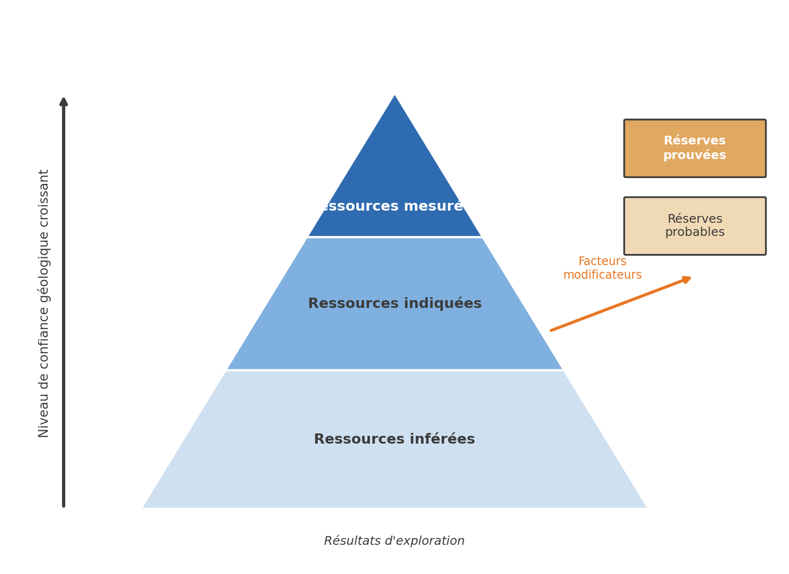
Ressources inférées — Elles reposent sur des données limitées (forages espacés, peu de contrôle géologique). Elles donnent une idée du potentiel du gisement, mais avec une forte incertitude.
Ressources indiquées — Elles sont appuyées par davantage de données (forages plus rapprochés, meilleure compréhension de la géologie). L’estimation est plus fiable et permet certaines évaluations économiques préliminaires.
Ressources mesurées — Elles sont fondées sur un grand nombre de données de qualité, bien distribuées. Le degré de confiance est très élevé et ces ressources peuvent servir directement à planifier l’exploitation minière.
Réserves probables — Les réserves minérales probables constituent la partie économiquement exploitable des ressources minérales indiquées et, dans certains cas, mesurées. Le degré de confiance accordé aux facteurs modificateurs s’appliquant à une réserve minérale probable est inférieur à celui s’appliquant à une réserve minérale prouvée.
Réserves prouvées — Les réserves minérales prouvées constituent la partie économiquement exploitable des ressources minérales mesurées. Une réserve minérale prouvée implique un degré de confiance élevé dans les facteurs modificateurs.
14.2 Aspect économique
Exercice 1 — Lecture de courbes de Lane
On vous présente une série de courbes obtenues en appliquant la théorie de Lane avec divers paramètres. Pour chacune des questions ci-dessous, identifiez le ou les cas correspondants.
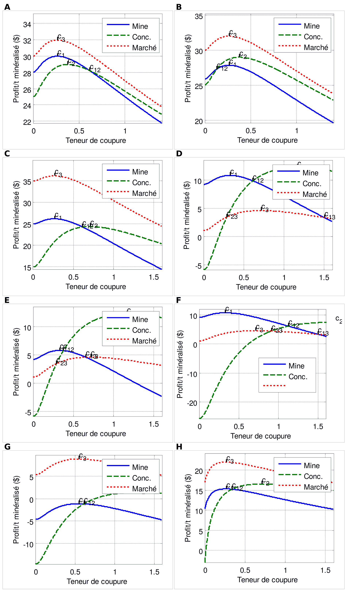
- Quels cas montrent une exploitation utilisant la pleine capacité de la mine ?
- Quels cas montrent une exploitation utilisant la pleine capacité du concentrateur ?
- Quels cas montrent un marché saturé (pleine capacité du marché) ?
- Quels cas montrent une exploitation à l’équilibre mine–concentrateur ?
- Quels cas montrent une exploitation à l’équilibre mine–marché ?
- Quels cas montrent une exploitation à l’équilibre concentrateur–marché ?
- Quels cas montrent une exploitation opérant à la teneur de coupure limite de la mine ?
- Quels cas montrent une exploitation opérant à la teneur de coupure limite du concentrateur ?
- Quels cas montrent une exploitation opérant à la teneur de coupure limite du marché ?
- Quels cas montrent une exploitation déficitaire ?
- Quel cas montre l’exploitation la plus rentable (par tonne minéralisée) ?
- BCEGH
- ACFGH
- DEF
- CGH
- E
- F
- B
- A
- D
- G
- A
Exercice 2 — Fonctions de récupération à un seuil
Gisement de Cu dont la teneur est distribuée suivant une loi log-normale de moyenne \(m = 0{,}9\%\) et de variance \(s^2 = 2\%^2\). La teneur de coupure est fixée à \(c = 0{,}6\%\).
Calculez \(T(c)\), \(Q(c)\), \(m(c) = Q(c)/T(c)\) et \(P(c) = T(c)\,\{m(c) - c\}\) à \(c = 0{,}6\%\). Calculez ensuite \(P(c)\) en dollars si le prix du Cu est de \(6000\ \text{\$/t}\) Cu.
Les fonctions de récupération pour la loi log-normale s’expriment à partir de la loi normale standard \(\mathcal{N}(0,1)\) et de sa fonction de répartition \(\Phi\), où \(\beta\) est l’écart-type logarithmique des teneurs.
On calcule (selon la table \(\mathcal{N}(0,1)\)) :
- \(T(c) = 0{,}42\)
- \(m(c) = Q(c)/T(c) = 1{,}76\%\)
- \(P(c) = T(c)\,\{m(c) - c\} = 0{,}42\,(1{,}76 - 0{,}6) = 0{,}487\%\)
Ainsi, à \(6000\ \text{\$/t}\) Cu :
Une tonne de roche minéralisée contient \(0{,}42\) t de minerai, et \(0{,}739\%\) de tonne de métal Cu, dont la valeur brute représente \(0{,}00739 \times 6000\ \text{\$} = 44{,}34\ \text{\$}\).
Le profit conventionnel est \(0{,}487\% \times 6000\ \text{\$} = 29{,}22\ \text{\$}\) (soit aussi \(44{,}34\ \text{\$} - 0{,}42 \times 0{,}6\% \times 6000\ \text{\$}\)).
Exercice 3 — Calcul complet de teneur de coupure optimale (Cu)
Une mine de Cu présente les caractéristiques suivantes :
| Paramètre | Symbole | Valeur |
|---|---|---|
| Taux de récupération du concentrateur | \(y\) | \(0{,}9\) |
| Prix d’une tonne de métal | \(p\) | \(3000\ \text{\$/t}\) Cu |
| Coût de mise en marché d’une tonne de métal | \(k\) | \(200\ \text{\$/t}\) Cu |
| Frais variables de minage (par t de matériau minéralisé) | \(m\) | \(17\ \text{\$/t}\) |
| Frais variables de traitement (par t de minerai) | \(h\) | \(10\ \text{\$/t}\) minerai |
| Frais fixes | \(f\) | \(12\ \text{M\$/an}\) |
| Coûts d’opportunité | \(F\) | \(0\ \text{\$}\) |
| Capacité de minage (matériau minéralisé) | \(M\) | \(3\ \text{Mt}\) |
| Capacité de traitement (minerai sélectionné) | \(H\) | \(2\ \text{Mt}\) |
| Capacité du marché (métal) | \(K\) | infinie |
De plus, la distribution des teneurs de Cu est log-normale, de moyenne \(m = 1{,}3\%\) et de variance \(s^2 = 3\%^2\).
- Calculez les teneurs de coupure limites (mine, concentrateur, marché).
- Calculez les teneurs de coupure d’équilibre.
- Déterminez la teneur de coupure optimale.
- Quelle est la valeur de la mine par tonne minéralisée à la teneur de coupure optimale ?
- La mine opère plutôt à la teneur de coupure \(c = 0{,}9\%\) Cu. Quelle perte encourt-elle par rapport à une exploitation optimale (par tonne minéralisée) ?
- \(c_1 = 0{,}397\%\), \(c_2 = 0{,}635\%\), \(c_3 = 0{,}397\%\).
- \(c_{12} = 0{,}505\%\) ; \(c_{13}\) et \(c_{23}\) n’existent pas, car la capacité du marché est infinie.
- \(c_{12} = 0{,}505\%\).
- \(g(0{,}505) = 1{,}80\%\) \(\Rightarrow\) \(v_1 = v_2 = 2{,}64\ \text{\$/t}\) minéralisée.
- La mine est le facteur limitatif. \(x(0{,}9\%) = 0{,}444\) ; \(g(0{,}9\%) = 2{,}365\%\) \(\Rightarrow\) \(v_1 = 1{,}02\ \text{\$/t}\) minéralisée \(\Rightarrow\) perte de \(1{,}62\ \text{\$/t}\) minéralisée (soit \(4{,}86\ \text{M\$/an}\)).
Exercice 4 — Application graphique de la théorie de Lane
Soit le graphe suivant montrant les trois fonctions profit/tonne minéralisée en fonction de la teneur de coupure lorsque la mine, le concentrateur ou le marché sont limitatifs.
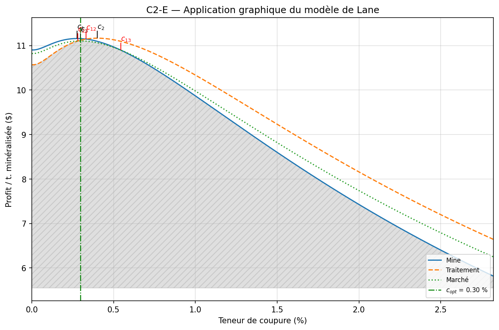
- Identifiez et donnez les valeurs de toutes les teneurs de coupure limites et d’équilibre sur ce graphe.
- Quelle est la teneur de coupure optimale ?
- Quel profit par tonne minéralisée espère-t-on obtenir à la teneur de coupure optimale ?
- Combien la mine perd-t-elle d’argent (par tonne minéralisée) si elle exploite le gisement à la teneur de coupure \(c = 0{,}4\) plutôt qu’à la teneur de coupure optimale ?
- Après un échantillonnage supplémentaire, on se rend compte que la moyenne du gisement est \(m = 0{,}75\) au lieu de \(m = 0{,}7\).
- En termes qualitatifs, comment ceci affecte-t-il les teneurs limites mine, concentrateur et marché ?
- Comment ceci affecte-t-il la teneur d’équilibre mine–concentrateur ?
- Un investissement permet d’accroître la capacité de traitement de \(H = 15\ \text{Mt}\) à \(H = 17\ \text{Mt}\). La teneur de coupure optimale augmente-t-elle ou diminue-t-elle ?
- Un investissement permet d’accroître la capacité de minage de \(M = 24\) à \(M = 26\). Quel est l’impact sur la teneur de coupure ?
- Teneurs de coupure limites — mine : \(c_1 = 0{,}28\%\) ; concentrateur : \(c_2 = 0{,}40\%\) ; marché : \(c_3 = 0{,}3\%\). Teneurs de coupure d’équilibre — mine–concentrateur : \(c_{12} = 0{,}29\%\) ; concentrateur–marché : \(c_{23} = 0{,}69\%\).
- \(c_{12} = 0{,}29\%\).
- \(v_{\text{mine}}(0{,}29) = v_{\text{conc}}(0{,}29) = 2{,}91\ \text{\$/t}\) minéralisée.
- À \(c = 0{,}4\%\), le profit maximum possible est donné par la courbe « mine ». On lit : \(v(0{,}4) = 2{,}83\ \text{\$/t}\).
- Les teneurs limites ne dépendent pas de la distribution des teneurs, donc aucune influence.
- Comme la distribution se déplace vers la droite, on fournira la même quantité de minerai au concentrateur (équilibre) en augmentant la teneur de coupure ; donc la teneur de coupure d’équilibre augmente : \(c_{12} = 0{,}33\%\) au lieu de \(0{,}29\%\).
- Comme l’optimum est à l’équilibre, augmenter \(H\) implique augmenter \(x_c\), ce qui implique diminuer \(c\). De plus, la courbe concentrateur sera déplacée vers le haut, la teneur de coupure optimale va diminuer jusqu’à ce qu’elle atteigne la teneur de coupure limite de la mine : teneur de coupure optimale = teneur de coupure limite mine = \(0{,}28\%\).
- Comme l’optimum est à l’équilibre, augmenter \(M\) implique diminuer \(x_c\), ce qui implique augmenter \(c\). La courbe mine sera translatée vers le haut, la teneur de coupure d’équilibre va augmenter. La teneur de coupure optimale sera cette teneur de coupure d’équilibre jusqu’à ce que cette dernière dépasse la teneur de coupure limite du concentrateur. Ici, la teneur de coupure optimale est = teneur de coupure d’équilibre = \(0{,}33\%\).
Exercice 5 — Théorie de Taylor et Lane : analyses qualitatives et calcul
On considère plusieurs scénarios d’application de la théorie de Taylor et Lane.
1. Effet de l’information. Paramètres : \(y = 0{,}9\) ; \(p = 1800\) ; \(k = 0\) ; \(h = 10\) ; \(m = 5\) ; \(f = 20\) ; \(F = 0\) ; \(M = 5\) ; \(H = 3\) ; \(K = 0{,}2\) ; loi log-normale de moyenne \(1{,}5\). Qu’est-ce qui a changé en augmentant la quantité d’information ?
2. Augmenter la capacité de traitement \(H\). Paramètres : \(y = 0{,}9\) ; \(p = 1800\) ; \(k = 0\) ; \(h = 10\) ; \(m = 5\) ; \(f = 20\) ; \(F = 0\) ; \(M = 5\) ; \(K = 0{,}2\) ; loi log-normale de moyenne \(1{,}5\) et variance \(1{,}6\%^2\). Qu’est-ce qui a changé ?
3. Effet du temps. Au fil de l’exploitation, comme on sélectionne les blocs riches préférentiellement, la mine résiduelle s’appauvrit. Paramètres : \(y = 0{,}9\) ; \(p = 1800\) ; \(k = 0\) ; \(h = 10\) ; \(m = 5\) ; \(f = 20\) ; \(F = 0\) ; \(M = 5\) ; \(K = 0{,}2\) ; loi log-normale de variance \(1{,}6\%^2\). Qu’observe-t-on ?
4. Les coûts de traitement (\(h\)) augmentent. Paramètres : \(y = 0{,}9\) ; \(p = 1800\) ; \(k = 0\) ; \(m = 5\) ; \(f = 20\) ; \(F = 0\) ; \(M = 5\) ; \(H = 3\) ; \(K = 0{,}2\) ; loi log-normale de moyenne \(1{,}5\) et variance \(1{,}6\%^2\). Qu’est-ce qui a changé ?
5. Fonctions de récupération. Voici les fonctions de récupération d’une mine dont la distribution est log-normale de moyenne \(1{,}5\) et de variance \(2\). La capacité de la mine \(M\) est \(5\ \text{Mt}\) de matériau minéralisé. La capacité de traitement \(H\) est de \(2\ \text{Mt}\) de minerai. Les autres paramètres sont : \(y = 0{,}9\) ; \(p = 1800\) ; \(k = 0\) ; \(m = 5\) ; \(h = 10\) ; \(f = 30\) ; \(F = 0\) ; \(K = 20\).
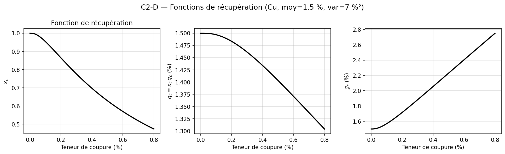
Calculez la teneur de coupure limite de la mine (\(c_1\)), celle du traitement (\(c_2\)) et la teneur de coupure d’équilibre mine–traitement.
- Quelle est la teneur de coupure optimale ?
- Quelle est la teneur du minerai correspondant à cette teneur de coupure optimale ?
- Quelle est la valeur par tonne minéralisée ?
- La teneur de coupure d’équilibre (aussi teneur de coupure optimale) a diminué légèrement de \(0{,}95\%\) à \(0{,}92\%\) ; la valeur par tonne minéralisée a augmenté de \(5{,}36\ \text{\$/t}\) à \(5{,}56\ \text{\$}\). C’est le montant que l’on serait prêt à payer pour une meilleure information.
- La teneur de coupure d’équilibre a baissé à \(0{,}78\%\) ; la valeur optimale par tonne minéralisée a augmenté à \(5{,}76\ \text{\$/t}\).
- La teneur de coupure optimale diminue avec la moyenne. Lorsque la moyenne vaut \(1{,}1\), la teneur de coupure optimale est la teneur de coupure limite de la mine (teneur « breakeven »). Pour revenir en zone profitable, il faudrait accroître la capacité de la mine.
- La teneur de coupure optimale étant à l’équilibre, elle ne change pas. Seule la valeur est modifiée, passant de \(5{,}36\) à \(3{,}56\ \text{\$/t}\) minéralisée.
- On calcule \(c_1 = 10 / [0{,}9 \times 1800] = 0{,}0062\), soit \(0{,}62\%\). On calcule \(c_2 = [10 + 30/2] / [0{,}9 \times 1800] = 0{,}0154\), soit \(1{,}54\%\). Des figures, on trouve \(x_c = H/M = 0{,}4\) \(\Rightarrow\) la teneur de coupure d’équilibre est \(1{,}33\%\). Comme elle est comprise entre les deux teneurs limites, c’est la teneur de coupure optimale.
- On lit approximativement \(2{,}65\%\).
- \(v = (0{,}4 \times 2{,}65 \times 0{,}9)/100 \times 1800 - 5 - 10 \times 0{,}4 - 30/5 = 2{,}17\ \text{\$/t}\).
Exercice 6 — Théorie de Lane et Taylor (examen)
Une mine présente un tonnage total de \(200\ \text{Mt}\) de matériaux minéralisés. Les paramètres d’exploitation, ainsi que les prix et les coûts associés selon la théorie de Lane et Taylor, sont fournis.
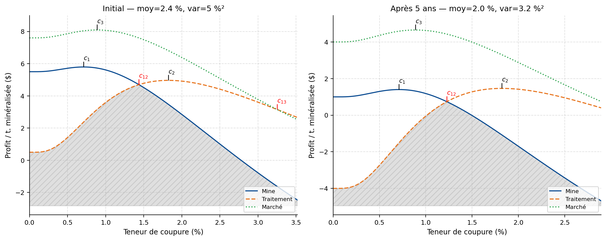
La figure ci-dessus illustre les courbes de Lane et Taylor calculées avec ces paramètres. On suppose qu’un excellent estimateur, à la fois très précis et sans biais conditionnel, est disponible. On suppose également que le minerai initialement délaissé demeure accessible pour une exploitation future.
A. Quelle est la teneur de coupure optimale ? Et à quoi correspond-elle (teneur de coupure limite ou d’équilibre) ?
B. Quel profit annuel est généré par cette mine ?
C. Quelle option d’investissement semble présentement, à première vue, la plus profitable pour la mine : augmenter sa capacité de minage (\(M\)) ou augmenter sa capacité de traitement (\(H\)) ? Justifiez, sans faire de calcul.
D. Sur l’ensemble de la durée de vie de la mine, combien sommes-nous prêts à investir pour augmenter la capacité identifiée à la question C ? Supposez que la nature identifiée en A demeure inchangée tout au long de l’exploitation.
Après 5 ans d’exploitation, on met à jour la distribution des teneurs en tenant compte du minerai déjà extrait. On trouve une moyenne de \(1{,}4\%\) (initialement \(1{,}8\%\)) et une variance de \(1{,}8\%^2\) (initialement \(2{,}6\%^2\)). Toujours sous hypothèse log-normale, on obtient de nouvelles fonctions de récupération.
E. Avec cette nouvelle distribution, quelle sera la nouvelle teneur de coupure optimale et quel profit, par tonne minéralisée, la mine peut-elle espérer ? (Note : la nouvelle teneur de coupure optimale est ici de la même nature que dans la question A.)
F. Un suivi des teneurs des blocs minés a permis d’établir une équation de régression entre teneurs vraies et estimées. Que peut-on conclure ?
A. La nature est de type équilibre mine–concentrateur. La teneur de coupure optimale est de \(1{,}23\%\).
B. Il suffit de multiplier le profit \(v_1\) par \(M\), car nous sommes à la limite mine–concentrateur : \(2{,}32 \times 11 = 25{,}52\ \text{M\$/an}\).
C. On note que \(c_1\) fournit des profits de \(2{,}64\ \text{\$/t}\) et que \(c_2\) fournit des profits de \(2{,}33\ \text{\$/t}\). Ainsi, il semble évident que l’on doit augmenter la capacité de traitement (\(H\)) afin que le limitant soit la mine, car celle-ci donne plus de profit.
D. On doit faire la soustraction \(c_1 - c_{12}\), soit \(2{,}64 - 2{,}32 = 0{,}32\ \text{\$/t}\). Le tonnage de la mine est de \(200\ \text{Mt}\), donc on aura \(0{,}32\ \text{\$/t} \times 200\ \text{Mt} = 64\ \text{M\$}\) de profit supplémentaire. Si l’augmentation de la capacité de traitement coûte moins de \(64\ \text{M\$}\), nous sommes prêts à faire l’investissement.
E. Comme la nature reste la même, on a \(x_c = H/M = 6/11 = 0{,}5454\). Lecture graphique : pour \(c = 1{,}075\), on a \(g_c = 2{,}38\). Donc : \[ v_1 = (p - k)\, x_c\, g_c\, y - m - x_c h - \frac{f + F}{M} = (3000 - 2000) \times 0{,}5454 \times \frac{2{,}38}{100} \times 0{,}85 - 4 - 0{,}5454 \times 7 - \frac{25}{11} = 0{,}94\ \text{\$/t} \pm 0{,}05\ \text{\$/t}. \]
F. Il y a un léger biais conditionnel. Celui-ci est négligeable et ne devrait pas créer de problème significatif dans la théorie de Lane et Taylor.
14.3 Théorie de Gy et contrôle qualité
Exercice 1 — Lecture d’un abaque de Gy (procédure multistage)
Une mine de cuivre (le Cu est contenu dans la chalcopyrite) utilise la procédure illustrée sur la figure suivante pour déterminer les teneurs en Cu de carottes de forage. La procédure est représentée sur un abaque de Gy : chaque étape de broyage correspond à un segment horizontal (réduction de la taille des plus gros fragments \(d\)) et chaque étape de sous-échantillonnage à un segment vertical (réduction de la masse \(M_e\)).
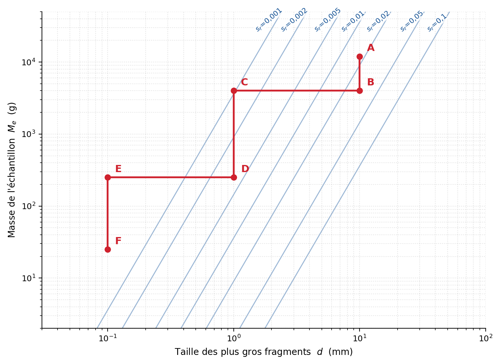
La carotte est d’abord broyée à \(1\,\text{cm}\). La procédure passe ensuite par les points B, C, D, E et F de l’abaque, avec les prélèvements et broyages suivants :
| Étape | Type | Description |
|---|---|---|
| A → B | sous-échantillonnage | prélèvement de \(4\,\text{kg}\) parmi \(12\,\text{kg}\) (\(d = 1\,\text{cm}\)) |
| B → C | broyage | \(1\,\text{cm} \rightarrow 1\,\text{mm}\) |
| C → D | sous-échantillonnage | prélèvement de \(250\,\text{g}\) parmi \(4\,\text{kg}\) |
| D → E | broyage | \(1\,\text{mm} \rightarrow 0{,}1\,\text{mm}\) |
| E → F | sous-échantillonnage | prélèvement de \(25\,\text{g}\) parmi \(250\,\text{g}\) |
a) Combien y a-t-il d’étapes de broyage et d’étapes de sous-échantillonnage ?
b) À l’aide de l’abaque, estimez l’écart-type relatif global \(s_r\) de la procédure d’échantillonnage.
c) Que pourrait-on faire pour améliorer la précision ?
a) Sur l’abaque, on dénombre deux étapes de broyage (en excluant le broyage initial de la carotte à \(1\,\text{cm}\)) : le broyage B→C qui réduit les fragments de \(1\,\text{cm}\) à \(1\,\text{mm}\), et le broyage D→E qui les réduit de \(1\,\text{mm}\) à \(0{,}1\,\text{mm}\).
Il y a trois étapes de sous-échantillonnage (B, D et F) : en B on prélève \(4\,\text{kg}\) parmi \(12\,\text{kg}\), en D on prélève \(250\,\text{g}\) parmi \(4\,\text{kg}\), et en F on prélève \(25\,\text{g}\) parmi \(250\,\text{g}\).
b) En lisant les isocontours de l’abaque, on obtient approximativement : \[s_{r}(B) = 0{,}03, \qquad s_{r}(D) = 0{,}008, \qquad s_{r}(F) = 0{,}002.\]
Les variances relatives s’additionnent (et non les écarts-types). L’écart-type relatif global est donc : \[s_{r,\text{global}} = \left( 0{,}03^2 + 0{,}008^2 + 0{,}002^2 \right)^{0.5} \approx 0{,}03.\]
L’écart-type relatif global correspond donc essentiellement à celui de l’étape B (le maillon faible).
c) L’erreur la plus importante est commise à l’étape B. On pourrait y prélever une masse plus importante que \(4\,\text{kg}\). Par exemple, on pourrait conserver les \(12\,\text{kg}\) au complet jusqu’à la taille \(1\,\text{mm}\).
Exercice 2 — Calcul détaillé de l’écart-type relatif
Reprenez l’étape B de l’exercice 1 et faites le calcul complet de l’écart-type relatif. On dispose des données suivantes :
| Paramètre | Symbole | Valeur |
|---|---|---|
| Masse du lot | \(M_L\) | \(12\,\text{kg}\) |
| Masse de l’échantillon prélevé | \(M_e\) | \(4\,\text{kg}\) |
| Taille de libération de la chalcopyrite | \(d_0\) | \(0{,}01\,\text{cm}\) |
| Diamètre des plus gros fragments | \(d\) | \(1\,\text{cm}\) |
| Teneur en chalcopyrite | \(a_L\) | \(1\,\%\) (soit \(0{,}35\,\%\) en Cu) |
| Masse spécifique de la chalcopyrite | \(\delta_a\) | \(4{,}1\,\text{g/cm}^3\) |
| Masse spécifique de la gangue | \(\delta_g\) | \(3\,\text{g/cm}^3\) |
| Facteur de forme | \(f\) | \(0{,}5\) |
| Facteur de distribution | \(g\) | \(0{,}25\) |
Facteur de libération (puisque \(d = 1\,\text{cm} > d_0 = 0{,}01\,\text{cm}\)) : \[l = \left( \frac{d_0}{d} \right)^{0.5} = \left( \frac{0{,}01}{1} \right)^{0.5} = 0{,}1.\]
Facteur \(\mu\delta\) (avec \(a_L = 0{,}01\)) : \[\mu\delta = \frac{1-a_L}{a_L}\Big[(1-a_L)\,\delta_a + a_L\,\delta_g\Big] = \frac{1-0{,}01}{0{,}01}\big[0{,}99 \times 4{,}1 + 0{,}01 \times 3\big] \approx 405.\]
Constante \(K\) : \[K = \mu\delta \cdot f \cdot g = 405 \times 0{,}5 \times 0{,}25 = 50{,}6~\text{g/cm}^3,\] et donc \(K\,l = 50{,}6 \times 0{,}1 = 5{,}06~\text{g/cm}^3\).
Variance relative (avec \(M_e = 4000\,\text{g}\), \(M_L = 12000\,\text{g}\)) : \[s_r^2 = K\,l\,\frac{d^3}{M_e}\left(1 - \frac{M_e}{M_L}\right) = 5{,}06 \times \frac{1^3}{4000}\left(1 - \frac{4000}{12000}\right) = 0{,}00084.\]
Écart-type relatif : \[s_r = \sqrt{0{,}00084} \approx 0{,}029,\] soit environ \(2{,}9\,\%\), en accord avec la lecture sur l’abaque (\(s_r(B) \approx 0{,}03\)).
Exercice 3 — Assurance Qualité / Contrôle Qualité (QA/QC)
Le contrôle de qualité des analyses géochimiques dans une mine est un élément essentiel de l’estimation des ressources. La procédure de préparation du laboratoire principal comprend deux étapes de sous-échantillonnage : à \(1\,\text{mm}\) et à \(80\,\mu\text{m}\) (poudre). Les analyses portent sur la teneur des demi-carottes.
On observe plusieurs utilités possibles des contrôles de qualité :
- A — Déterminer la variation totale (manque de précision incluant la variabilité spatiale à très courte distance ainsi que celle due à la préparation et à l’analyse).
- B — Détecter un problème éventuel de calibration (biais) de l’appareil d’analyse.
- C — Identifier une contamination entre échantillons.
- D — Évaluer le manque de précision de l’ensemble de la procédure de préparation.
- E — Mettre en évidence un biais causé par la méthode de préparation des échantillons.
- F — Évaluer le manque de précision lié au sous-échantillonnage de la poudre et à son analyse.
Consigne. Pour chaque élément de contrôle du tableau ci-dessous, indiquez l’utilité principale en choisissant une seule lettre parmi A à F. Une même lettre peut être associée à plusieurs éléments, et certaines lettres peuvent ne pas être utilisées.
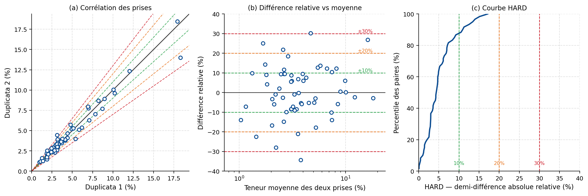
| Élément de contrôle | Utilité (A–F) |
|---|---|
| Duplicata de terrain (deuxième demi-carotte, prélevée et analysée indépendamment) | |
| Duplicata de préparation (rejet du sous-échantillonnage à \(1\,\text{mm}\), repris dans la chaîne) | |
| Duplicata de pulpe (deuxième prise de la poudre à \(80\,\mu\text{m}\), ré-analysée) | |
| Standard certifié (matériau de référence de teneur connue) | |
| Blanc (matériau exempt de l’élément d’intérêt) |
Le principe directeur : chaque type de contrôle isole une portion différente de la chaîne d’erreur (terrain → préparation → pulpe → analyse). Plus le duplicata est prélevé tôt dans la chaîne, plus il englobe de sources d’erreur.
| Élément de contrôle | Utilité | Justification |
|---|---|---|
| Duplicata de terrain | A | Englobe tout : variabilité spatiale à très courte distance + préparation + analyse → variation totale. |
| Duplicata de préparation | D | Repris dès le sous-échantillonnage à \(1\,\text{mm}\) : mesure la précision de l’ensemble de la procédure de préparation. |
| Duplicata de pulpe | F | Deuxième prise de la poudre à \(80\,\mu\text{m}\) : isole le sous-échantillonnage de la poudre et son analyse. |
| Standard certifié | B | Teneur connue → détecte un biais (problème de calibration) de l’appareil d’analyse. |
| Blanc | C | Matériau exempt de l’élément : toute teneur mesurée révèle une contamination entre échantillons. |
L’utilité E (biais dû à la méthode de préparation) ne serait associée à aucun de ces éléments : la mettre en évidence requiert une comparaison entre deux méthodes de préparation, et non un duplicata, un standard ou un blanc.
Exercice 4 — Théorie de Gy : masse à prélever et taille de broyage
Vous voulez obtenir des analyses fiables pour le Cu présent dans des demi-carottes de \(3\,\text{m}\) de long. Le cuivre est contenu dans la chalcopyrite (\(\text{CuFeS}_2\)). On dispose des données suivantes :
| Paramètre | Symbole | Valeur |
|---|---|---|
| Masse de la demi-carotte (lot) | \(M_L\) | \(10\,\text{kg}\) |
| Masse spécifique de la gangue | \(\delta_g\) | \(3\,\text{g/cm}^3\) |
| Masse spécifique de la chalcopyrite | \(\delta_a\) | \(4{,}1\,\text{g/cm}^3\) |
| Taille de libération de la chalcopyrite | \(d_0\) | \(2\,\text{mm}\) |
| Concentration du Cu dans la chalcopyrite | — | \(35\,\%\) |
| Facteur de forme | \(f\) | \(0{,}5\) |
| Facteur de distribution | \(g\) | \(0{,}25\) |
a) Quelle masse doit-on prélever lors du sous-échantillonnage, si les plus gros fragments font \(0{,}5\,\text{cm}\), pour fournir un écart-type relatif de \(1\,\%\) sur la vraie teneur en Cu lorsque celle-ci est de \(0{,}5\,\%\) ? Effectuez les calculs au long.
b) À quelle taille \(d\) devrait-on broyer la roche si l’on veut un écart-type relatif de \(1\,\%\) avec une masse prélevée de \(1\,\text{kg}\) et une vraie teneur de \(0{,}5\,\%\) Cu dans le lot initial ?
c) Si le minéral fournissant le \(0{,}5\,\%\) de Cu était la chalcocite (\(\text{Cu}_2\text{S}\)) plutôt que la chalcopyrite (\(\text{CuFeS}_2\)), aurait-on les mêmes réponses ? Justifier sans faire de calcul.
d) Si la teneur du lot est en réalité supérieure à \(0{,}5\,\%\) Cu, est-ce que l’écart-type relatif réellement obtenu sera supérieur, égal ou inférieur à celui calculé ? Justifiez.
e) Pourquoi Gy recommande-t-il d’utiliser des outils de prélèvement ayant des ouvertures au moins trois fois plus grandes que les plus grosses particules du lot échantillonné ? Justifiez.
a) On convertit d’abord la teneur en Cu en teneur en chalcopyrite : \[a_L = \frac{0{,}005}{0{,}35} = 0{,}0143, \qquad \frac{1-a_L}{a_L} = 69.\]
Facteur \(\mu\delta\) : \[\mu\delta = \frac{1-a_L}{a_L}\Big[(1-a_L)\,\delta_a + a_L\,\delta_g\Big] = 69 \times \big[0{,}9857 \times 4{,}1 + 0{,}0143 \times 3\big] = 69 \times 4{,}084.\]
Facteur de libération (ici \(d = 0{,}5\,\text{cm} > d_0 = 0{,}2\,\text{cm}\)) : \[l = \left( \frac{d_0}{d} \right)^{0.5} = \left( \frac{0{,}2}{0{,}5} \right)^{0.5} = 0{,}6325.\]
Constante : \[K = \mu\delta \cdot f \cdot g = 69 \times 4{,}084 \times 0{,}5 \times 0{,}25 = 35{,}22~\text{g/cm}^3.\]
On impose \(s_r = 0{,}01 \Rightarrow s_r^2 = 10^{-4}\) et on résout pour \(M_e\) à partir de \[s_r^2 = K\,l\,\frac{d^3}{M_e}\left(1 - \frac{M_e}{M_L}\right), \qquad M_L = 10\,000~\text{g}.\]
En isolant \(M_e = \dfrac{K\,l\,d^3}{s_r^2 + K\,l\,d^3/M_L}\) avec \(K\,l\,d^3 = 35{,}22 \times 0{,}6325 \times 0{,}5^3 = 2{,}785\), on obtient : \[M_e \approx 7{,}36~\text{kg}.\]
Il faut donc prélever environ \(7{,}36\,\text{kg}\) : à \(d = 0{,}5\,\text{cm}\), une masse importante est nécessaire pour atteindre \(1\,\%\) de précision.
b) Comme à \(d = 0{,}5\,\text{cm}\) il fallait \(7{,}36\,\text{kg}\), on sait qu’avec seulement \(1\,\text{kg}\) il faudra broyer plus finement que \(0{,}5\,\text{cm}\). Supposons \(d < d_0\), donc \(l = 1\), et résolvons : \[d^3 = \frac{s_r^2\,M_e}{K\left(1 - M_e/M_L\right)} = \frac{10^{-4} \times 1000}{35{,}22 \times (1 - 1000/10000)} \Rightarrow d \approx 0{,}147~\text{cm} \approx 1{,}5~\text{mm}.\]
Comme la réponse (\(\approx 0{,}15\,\text{cm}\)) est inférieure à \(d_0 = 0{,}2\,\text{cm}\), l’hypothèse \(d < d_0\) (\(l = 1\)) est bien la bonne formule.
c) Non. Comme le minéral d’intérêt change, sa teneur (rapport massique du Cu dans le minéral), sa masse spécifique \(\delta_a\) et sa taille de libération \(d_0\) changent aussi. Ces trois paramètres entrent dans le calcul, donc les réponses seraient différentes.
d) L’écart-type relatif réellement obtenu serait inférieur à celui calculé. En effet, plus la teneur \(a_L\) du lot est élevée, plus le facteur \(\mu\delta\) — et donc la variance relative \(s_r^2 = K\,l\,d^3/M_e\) — est faible. Il suffit de regarder l’équation de \(\mu\delta\) : le terme \((1-a_L)/a_L\) décroît quand \(a_L\) augmente.
e) Pour éviter un biais d’échantillonnage envers les petites particules. Si l’ouverture de l’outil n’est pas suffisamment grande, les plus gros fragments ne peuvent pas être prélevés : ils ont une probabilité nulle d’être sélectionnés, ce qui viole la condition d’échantillon probabiliste et rend l’échantillon non représentatif du lot.
14.4 Traitement et analyse statistique des données de forage
Exercice 1 — Échantillonnage de la roche en place : sources de biais
Pour chacune des situations d’échantillonnage de la roche en place, identifiez les problèmes possibles et les risques de biais.
Écailles — on détache des écailles de roche le long d’une paroi.
Cannelures (rainures) — on creuse une rainure de section théoriquement constante le long d’un profil.
Forage destructif (forage de production).
Forage carotté (DDH) lorsque le taux de récupération est inférieur à \(100\,\%\).
Écailles — Chaque écaille a un volume différent et il peut exister un lien entre le volume de l’écaille et la dureté de la roche. Or, la dureté est souvent corrélée à la composition de la roche : il y a donc un risque de biais.
Cannelures — Mieux que les écailles, mais on ne contrôle pas bien la profondeur de la cannelure, d’où un risque de biais pour les mêmes raisons que les écailles (lien dureté–composition).
Forage destructif — Voir les notes de cours (contamination le long du trou, mélange et remontée des fines, perte sélective, etc.).
Forage carotté (DDH) — On devrait viser \(100\,\%\) de récupération. Même à \(95\,\%\), le \(5\,\%\) non récupéré pourrait être particulièrement riche ou particulièrement pauvre. La partie non récupérée correspond souvent à des portions plus fracturées, et rien ne garantit que la teneur y soit équivalente au reste de la roche : risque de biais.
Exercice 2 — Échantillonnage de roches fragmentées et outils de séparation
Identifiez, dans chaque cas, les procédures biaisées et justifiez.
Déblais de forages de production (vue en plan) — parmi les quatre découpages proposés (a–d) du tas de déblais, lequel est certainement biaisé ?
Godet de chargeuse-transporteuse (LHD) — peut-on échantillonner directement dans le godet ?
Convoyeur — parmi les modes de prélèvement proposés, lequel n’est pas acceptable, et pourquoi ?
Choix des outils de séparation — quelle colonne d’outils est la mieux adaptée compte tenu de la taille des fragments ?
Échantillonnage sans biais d’un convoyeur — parmi les méthodes a) à d), lesquelles permettent un échantillonnage sans biais ?
Déblais — La procédure a) est inadéquate à cause de la ségrégation des particules : on retrouve davantage de grosses particules en périphérie du tas. Comme il peut facilement exister un lien entre teneur et taille des particules, le découpage proposé ne prend pas assez de bordure par rapport à l’ensemble. (Analogie : pour partager une pizza équitablement, la croûte doit être répartie proportionnellement à la taille du morceau.) Les options b), c) et d) sont bonnes pourvu que l’on minimise les pertes de fines (b) et que l’on dépose lentement le matériau pour ne pas saturer les chutes (c). Réponse : a).
Godet de LHD — Non. D’abord, c’est très dangereux de circuler dans l’environnement de production pour échantillonner. Ensuite, l’échantillon serait très mauvais et presque sûrement biaisé : (i) les gros blocs trop lourds ne seront pas pris, et (ii) les particules fines migrent vers le fond du godet. Biais quasi assuré.
Convoyeur — La procédure c) échantillonne davantage un côté de la courroie. Selon le mode de chargement, les granulométries de gauche et de droite sont probablement différentes ; il faut donc un dispositif qui prélève autant les deux côtés.
Outils — La colonne de droite (règle du facteur 3 de Gy : ouverture des outils \(\geq 3\times\) la taille du plus gros fragment).
Sans biais — Les méthodes a) et c) seulement. Les méthodes b) et d) n’échantillonnent pas le flot de matériau pendant le même temps pour chaque position sur la courroie, d’où un biais probable.
Exercice 3 — Dégroupement (declustering) des données de forage
Quatre échantillonnages distincts d’un même gisement sont illustrés. Complétez le tableau en associant les statistiques appropriées (moyenne, variance) à chacun des cas représentés.
À partir des statistiques de dégroupement obtenues pour différentes tailles de cellule, quelle taille de cellule retenir pour assurer un bon dégroupement lié au suréchantillonnage des fortes valeurs ? Justifiez.
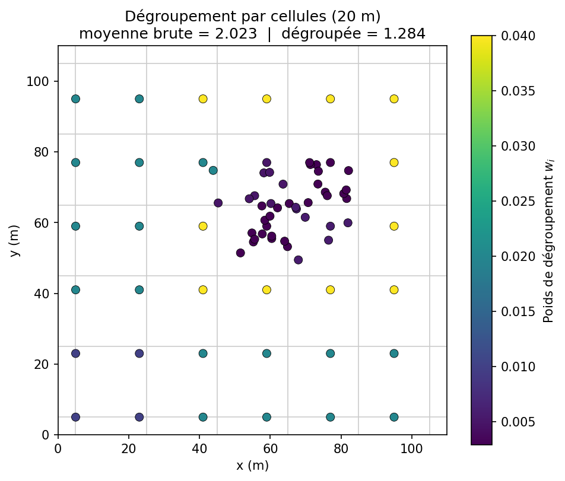
On associe à chaque configuration d’échantillonnage la moyenne et la variance correspondantes, en tenant compte du fait qu’un échantillonnage qui privilégie les zones riches (suréchantillonnage des fortes valeurs) gonfle à la fois la moyenne et la variance par rapport à un échantillonnage régulier représentatif.
Environ \(15\) pixels. À cette taille, on obtient la moyenne la plus basse ainsi que la variance la plus faible. Dans le cas d’un suréchantillonnage des fortes valeurs, la moyenne est généralement trop élevée et la variance trop importante ; il est donc naturel de chercher à les réduire en choisissant la taille de cellule qui minimise ces deux statistiques.
Exercice 4 — Erreur fondamentale : le modèle binomial
Note de renvoi : ce concept d’erreur fondamentale est partagé avec le ch. 3 — théorie de Gy.
On adopte un modèle (volontairement) simple : le modèle binomial. Les grains sont tous de même taille et de même densité et il existe deux types de grains : le minéral d’intérêt (p. ex. la chalcopyrite) ou autre. La teneur du lot est \(p\), la taille du lot est infinie (très grande). On prélève un échantillon aléatoire de taille \(n\).
Soit \(n_1\) le nombre de grains du minéral d’intérêt dans l’échantillon. On a \[ \mathbb{E}[n_1] = n\,p \qquad \text{et} \qquad \operatorname{Var}(n_1) = n\,p\,(1-p). \]
Quelle est la teneur de l’échantillon \(p_e\) ?
Que vaut \(\operatorname{Var}(p_e - p)\) ?
En déduire la variance relative de l’erreur, \(\dfrac{\operatorname{Var}(p_e - p)}{p^2}\), et interpréter le résultat.
En vous basant sur l’équation obtenue en c), que doit-on faire pour diminuer la variance relative de l’erreur, sachant que l’on ne peut pas contrôler \(p\) ? Comment ?
Considérons le cas de l’or. Cela change-t-il quelque chose que l’or soit sous forme native ou sous forme d’inclusion dans la pyrite (à une teneur constante de \(0.001\ \text{g/g}\)) pour une même teneur de lot \(p\) ? Pourquoi ?
La teneur de l’échantillon est la proportion de grains d’intérêt : \[ p_e = \frac{n_1}{n}. \]
Comme \(p\) est une constante, \[ \operatorname{Var}(p_e - p) = \operatorname{Var}(p_e) = \operatorname{Var}\!\left(\frac{n_1}{n}\right) = \frac{1}{n^2}\,\operatorname{Var}(n_1) = \frac{n\,p\,(1-p)}{n^2} = \frac{p\,(1-p)}{n}. \]
La variance relative vaut \[ \frac{\operatorname{Var}(p_e - p)}{p^2} = \frac{p\,(1-p)}{n\,p^2} = \frac{1-p}{n\,p}. \] Le terme \(n\) est directement relié à la masse de l’échantillon (et inversement relié au cube du diamètre des grains, \(d^3\)). Le terme \(\dfrac{1-p}{p}\) indique qu’une faible teneur entraîne une variance relative bien plus grande qu’une forte teneur. On retrouve tous ces éléments dans la formule de Gy.
Puisqu’on ne contrôle pas \(p\), il faut augmenter \(n\) : soit augmenter la masse de l’échantillon, soit broyer plus finement les particules (ce qui, à masse constante, augmente fortement le nombre de grains \(n\), car \(n \propto 1/d^3\)). Le broyage plus fin est de loin l’action la plus efficace.
Oui, cela change tout. D’après la loi binomiale, la variance relative sera environ \(1000\) fois plus petite avec l’or inclus dans la pyrite (à \(0.001\ \text{g/g}\)) plutôt que sous forme native. Avec la formule de Gy, on retrouve le même ordre de grandeur. Le problème pratique de l’or : il n’est pas à teneur constante dans la pyrite, et il y a presque toujours aussi de l’or natif associé. Il suffit de très peu d’or natif pour qu’il domine le calcul de la variance relative.
Exercice 5 — Sondages et composites
Vous êtes ingénieur(e) CPI en estimation des ressources au sein de l’équipe du projet NioVar, qui explore une veine de niobium dans le nord du Québec. On vous confie une section de la base de données de forage.
Forage F-12
| Paramètre | Valeur |
|---|---|
| Collet | \((50,\ 60,\ 20)\) |
| Orientation au départ (\(0\ \text{m}\)) | azimut \(= 255^\circ\), plongée \(= 60^\circ\) |
| Orientation à \(60\ \text{m}\) | azimut \(= 275^\circ\), plongée \(= 75^\circ\) |
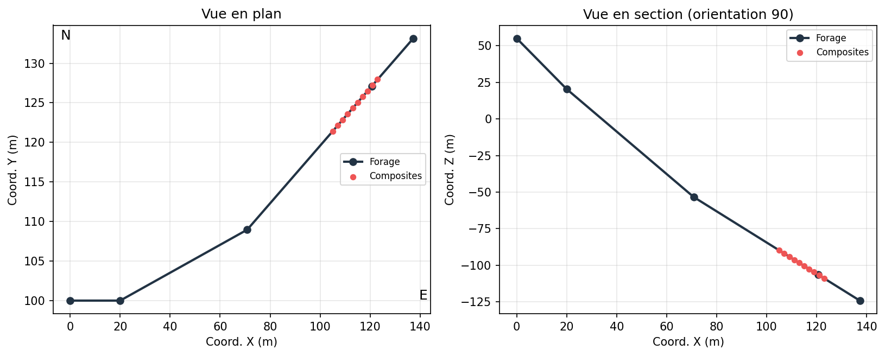
Votre superviseur vous demande de préparer des composites de \(3\ \text{m}\) entre \(74\ \text{m}\) et \(86\ \text{m}\) de profondeur. Un composite est valide seulement si au moins \(2/3\) des carottes sont analysées. Identifiez les composites valides et calculez leurs teneurs en Nb.
Pour la modélisation 3D, vous devez attribuer des coordonnées \((x, y, z)\) aux composites. Calculez les coordonnées du centre du composite le plus profond par la méthode du point milieu.
Le forage F-12 a intersecté la veine minéralisée à \(74\ \text{m}\), aux coordonnées approximatives \(\mathbf{x} = (24.17,\ 57.11,\ -48.48)\). Cette veine, observée en surface, a été mesurée (convention géologique) avec un azimut de \(230^\circ\) et un pendage de \(40^\circ\). Évaluez si le nouveau forage F-15 — collet \((40,\ 50,\ 25)\), azimut \(30^\circ\), plongée \(50^\circ\) — intersectera la veine ; si oui, à quelle distance du collet ?
Proposez une orientation optimale pour que F-15 (même collet) intersecte la veine le plus rapidement possible. Indiquez l’azimut et la plongée, et estimez la distance jusqu’au croisement.
- On calcule la teneur pondérée par la longueur des carottes analysées ; un composite est rejeté si le recouvrement analysé est insuffisant (\(< 2/3\)).
\[ \begin{aligned} \text{Composite 1} &: \frac{1.2\times 0.42 + 0.8\times 0.58}{2} = 0.48\ \% \text{ Nb}\\[4pt] \text{Composite 2} &: \frac{0.5\times 1.05 + 1.8\times 0.73}{2.3} = 0.80\ \% \text{ Nb}\\[4pt] \text{Composite 3} &: \text{N/A — recouvrement de seulement } 50\,\% \ (< 2/3)\\[4pt] \text{Composite 4} &: \frac{0.5\times 2.01 + 1.5\times 1.20 + 1\times 0.95}{3} = 1.25\ \% \text{ Nb} \end{aligned} \]
- On cherche le point à \(84.5\ \text{m}\) le long du trou (centre du composite allant de \(83\ \text{m}\) à \(86\ \text{m}\)). Cosinus directeurs aux deux stations :
- Station 1 (\(M_1 = 0.0\)) : azimut \(255.0^\circ\), plongée \(60.0^\circ\) \[ \mathbf{l}_1 = (l_x, l_y, l_z) = (-0.4830,\ -0.1294,\ -0.8660) \]
- Station 2 (\(M_2 = 60.0\)) : azimut \(275.0^\circ\), plongée \(75.0^\circ\) \[ \mathbf{l}_2 = (l_x, l_y, l_z) = (-0.2578,\ 0.0226,\ -0.9659) \]
On découpe le trajet en deux segments : \(L_1 = 30\ \text{m}\) (avec \(\mathbf{l}_1\)) puis \(L_2 = 30 + (84.5 - 60) = 54.5\ \text{m}\) (avec \(\mathbf{l}_2\)), et on cumule les déplacements à partir du collet pour obtenir les coordonnées \((x, y, z)\) du centre du composite le plus profond (méthode du point milieu, station par station).
On exprime le pôle \(\mathbf{n}\) de la veine à partir de la convention géologique \(\mathbf{v}_g = (230,\ 40)\) : \[ \mathbf{n} = (140,\ 50) = (230 + 270 - 360,\ \ 90 - 40), \] soit, en cosinus directeurs, \[ \mathbf{n} = (0.4132,\ -0.4924,\ -0.7660). \] Direction du forage F-15 (azimut \(30^\circ\), plongée \(50^\circ\)) : \[ \mathbf{s} = (0.3214,\ 0.5567,\ -0.7660). \] Avec \(\mathbf{p}_0\) le point connu de la veine et \(\mathbf{s}_0\) le collet de F-15 : \[ \mathbf{p}_0 - \mathbf{s}_0 = (-15.8300,\ 7.1100,\ -73.4800). \] La distance le long du forage jusqu’à l’intersection du plan de la veine est \[ e = \frac{\mathbf{n}\cdot(\mathbf{p}_0 - \mathbf{s}_0)}{\mathbf{n}\cdot\mathbf{s}} = 103.81\ \text{m}. \] Le forage intersecte donc la veine à environ \(103.81\ \text{m}\) du collet.
Pour minimiser la distance, on oriente le forage perpendiculairement au plan de la veine, c.-à-d. selon le pôle : on pose \(\mathbf{s} = \mathbf{n}\). La distance devient alors \[ e = \frac{\mathbf{n}\cdot(\mathbf{p}_0 - \mathbf{s}_0)}{\mathbf{n}\cdot\mathbf{n}} = 46.24\ \text{m}, \] avec un azimut et une plongée correspondant au vecteur \(\mathbf{n}\).
Exercice 6 — Analyse chimique : composition minéralogique et masse volumique
Note : exercice à la frontière des ch. 3 et 4 (composition minéralogique vs densité de la roche). Rattachement ch. 3/4 à valider.
Une roche d’un gisement montre une teneur de \(4\,\%\) de Cu, \(2\,\%\) de Pb, \(2\,\%\) de Fe et \(5\,\%\) de S. Le Cu est contenu uniquement dans la bornite (\(\text{Cu}_5\text{FeS}_4\) ; \(63.3\,\%\) Cu, \(11.1\,\%\) Fe, \(25.6\,\%\) S ; densité \(5.1\)) et le Pb uniquement dans la galène (\(\text{PbS}\) ; \(86.6\,\%\) Pb, \(13.4\,\%\) S ; densité \(7.5\)). On retrouve aussi de la pyrite (\(\text{FeS}_2\) ; \(46.5\,\%\) Fe, \(53.5\,\%\) S ; densité \(5.0\)). Le Ba n’a pas été analysé, mais l’analyse de la gangue indique une présence possible de Ba. Le Ba est uniquement présent dans la barite (\(\text{BaSO}_4\) ; \(58.84\,\%\) Ba, \(13.74\,\%\) S, \(27.42\,\%\) O ; densité \(4.5\)). La densité de la gangue est \(3.2\) ; la gangue ne contient aucun des éléments chimiques analysés. La porosité de la roche est \(3\,\%\).
Construire et résoudre le système d’équations linéaires permettant de déterminer les teneurs en pyrite, bornite, barite, galène et gangue. (On peut résoudre le système sans inverser la matrice.)
Déterminer la masse volumique de la roche en tenant compte de l’effet de la porosité. (Si vous n’avez pas pu répondre à a), supposez que chaque minéral est présent à \(2\,\%\) et que la gangue représente \(92\,\%\).)
- On écrit le bilan de chaque élément en fonction des proportions minérales. Le système est triangulaire en pratique : les deux premières équations se résolvent directement. On ne peut pas utiliser la barite pour fermer le bilan de Ba, car la quantité de Ba dans la gangue est inconnue.
Cuivre (uniquement dans la bornite) : \[ 0.633 \times \text{Bornite} = 0.04 \;\Rightarrow\; \text{Bornite} = \frac{0.04}{0.633} = 0.0632 \;\Rightarrow\; \boxed{6.32\,\% \text{ bornite}} \]
Plomb (uniquement dans la galène) : \[ 0.866 \times \text{Galène} = 0.02 \;\Rightarrow\; \text{Galène} = \frac{0.02}{0.866} = 0.0231 \;\Rightarrow\; \boxed{2.31\,\% \text{ galène}} \]
Fer (pyrite + bornite) : \[ 0.465\,\text{Pyrite} + 0.111\,\text{Bornite} = 0.02 \;\Rightarrow\; \text{Pyrite} = \frac{0.02 - 0.111\times 0.0632}{0.465} = 0.0279 \;\Rightarrow\; \boxed{2.79\,\% \text{ pyrite}} \]
Soufre (pyrite + bornite + barite + galène) — on isole la barite : \[ \text{Barite} = \frac{0.05 - 0.535\,\text{Pyrite} - 0.256\,\text{Bornite} - 0.134\,\text{Galène}}{0.5884} \] \[ = \frac{0.05 - 0.535\times 0.0279 - 0.256\times 0.0632 - 0.134\times 0.0231}{0.1374} \approx \boxed{11.52\,\% \text{ barite}} \]
La gangue complète le bilan massique à \(100\,\%\).
- On pose une base de \(100\ \text{g}\) de roche, on calcule le volume occupé par chaque minéral à partir de sa densité (\(V_i = m_i / \rho_i\)), on somme les volumes solides, puis on tient compte de la porosité de \(3\,\%\) (volume de vide) pour obtenir le volume total et donc la masse volumique de la roche : \[ \rho_\text{roche} = \frac{m_\text{totale}}{V_\text{solide} / (1 - \phi)}, \qquad \phi = 0.03. \] (En l’absence de la solution chiffrée de a), on utilise l’hypothèse : chaque minéral à \(2\,\%\) et gangue à \(92\,\%\).)
14.5 Méthodes déterministes d’estimation des ressources
Les exercices ci-dessous portent sur les méthodes déterministes d’estimation : méthode des polygones (plus proche voisin), méthode des triangles et inverse de la distance (IDW). Ils sont ordonnés du plus simple (lecture du plus proche voisin) au plus complexe (IDW multi-points avec critère de recherche, anisotropie et choix de l’exposant). Tous proviennent des examens « méthode conventionnelle » du cours.
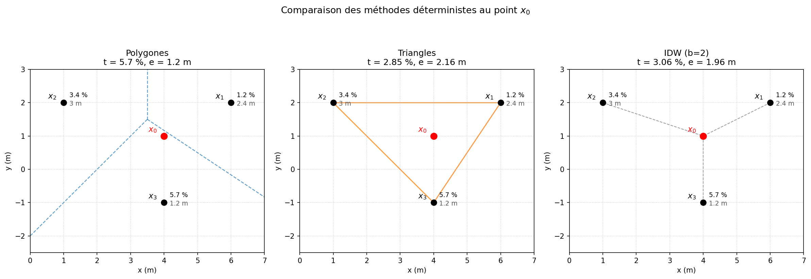
Exercice 1 — Plus proche voisin (méthode des polygones)
On dispose de trois sondages recoupant une veine minéralisée. Pour chacun, on connaît la teneur \(t_i\) et l’épaisseur \(w_i\) de la veine :
| Sondage | Teneur \(t_i\) (%) | Épaisseur \(w_i\) (m) |
|---|---|---|
| \(\mathbf{x}_1\) | 2,4 | — |
| \(\mathbf{x}_2\) | 3,4 | — |
| \(\mathbf{x}_3\) | 5,7 | 1,2 |
Le point à estimer \(\mathbf{x}_0\) est situé à une distance \(d_1 = 2{,}24\) m de \(\mathbf{x}_1\), \(d_2 = 3{,}16\) m de \(\mathbf{x}_2\) et \(d_3 = 2{,}00\) m de \(\mathbf{x}_3\).
À l’aide de la méthode des polygones (plus proche voisin), estimez la teneur et l’épaisseur en \(\mathbf{x}_0\).
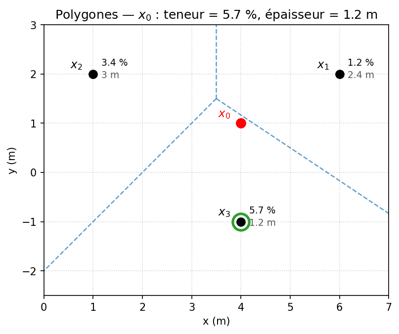
La méthode des polygones attribue à \(\mathbf{x}_0\) la valeur de l’échantillon le plus proche. On compare les distances :
\[ d_1 = 2{,}24\text{ m}, \qquad d_2 = 3{,}16\text{ m}, \qquad d_3 = 2{,}00\text{ m}. \]
Le plus proche voisin est \(\mathbf{x}_3\) (\(d_3 = 2{,}00\) m). Les poids sont donc
\[ \lambda_3 = 1, \qquad \lambda_1 = \lambda_2 = 0, \]
et l’estimation est
\[ Z^*(\mathbf{x}_0) = Z(\mathbf{x}_3) = [\,5{,}7\;\%,\; 1{,}2\;\text{m}\,]. \]
La valeur estimée est constante à l’intérieur du polygone de Voronoï entourant \(\mathbf{x}_3\) et ne dépend que du patron géométrique des échantillons.
Exercice 2 — Polygones de Thiessen : point sur une frontière
La figure suivante présente un patron d’échantillonnage. Le point à estimer \(\mathbf{x}_0\) tombe exactement au point médian commun des trois polygones de Thiessen qui l’entourent (intersection des médiatrices).
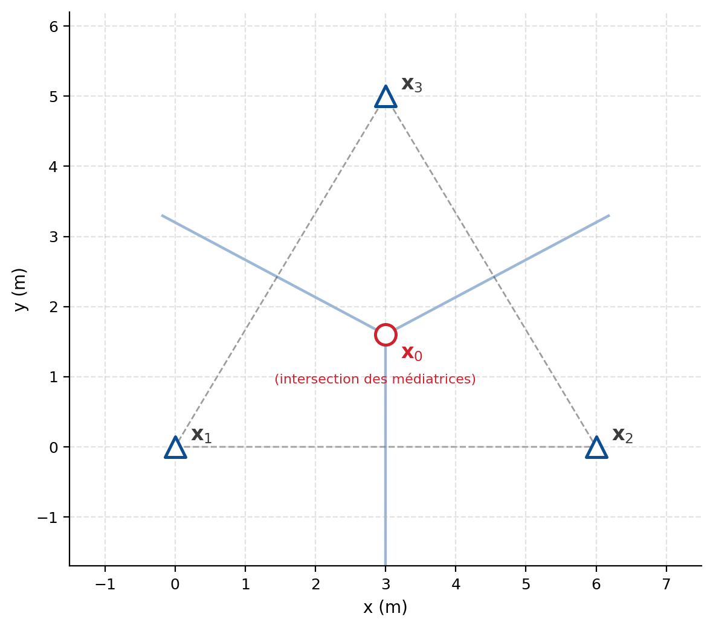
a) Quelle difficulté pose l’estimation de \(\mathbf{x}_0\) par la méthode des polygones lorsque \(\mathbf{x}_0\) tombe exactement sur une frontière ?
b) Proposez une façon raisonnable d’attribuer une valeur à \(\mathbf{x}_0\) dans ce cas.
a) L’estimation par polygones est discontinue aux frontières : la valeur attribuée change brusquement selon le polygone dans lequel se trouve \(\mathbf{x}_0\). Quand \(\mathbf{x}_0\) tombe exactement sur le point médian commun des trois polygones l’entourant, il n’appartient à aucun polygone de façon univoque : il faut faire un choix.
b) Une solution simple consiste à prendre la moyenne des valeurs des polygones (échantillons) qui se partagent cette frontière, par exemple la moyenne des trois polygones adjacents. Ce choix reste arbitraire, ce qui illustre la limite de discontinuité de la méthode.
Exercice 3 — Méthode des triangles : interpolation aux arêtes
Sur un plan de localisation, on doit estimer un point \(\mathbf{x}_0\) situé à l’intérieur d’un réseau de triangles. Les teneurs aux points d’échantillonnage voisins sont :
| Point | Teneur (ppm) |
|---|---|
| \(\mathbf{x}_1\) | 12 |
| \(\mathbf{x}_2\) | 7 |
| \(\mathbf{x}_3\) | 5 |
On procède par interpolations linéaires successives le long des segments :
- la projection de \(\mathbf{x}_0\) sur le segment \(\mathbf{x}_2\text{–}\mathbf{x}_3\) tombe au centre du segment ;
- le point \(\mathbf{x}_0\) se trouve au 1/3–2/3 sur le segment reliant \(\mathbf{x}_1\) au point précédent (noté \(\mathbf{x}_{23}\)).
Estimez la teneur en \(\mathbf{x}_0\).
Étape 1 — interpolation sur le segment \(\mathbf{x}_2\text{–}\mathbf{x}_3\). La projection tombe au centre, donc on prend la moyenne :
\[ t_{23} = \frac{t_2 + t_3}{2} = \frac{7 + 5}{2} = 6 \text{ ppm}. \]
Étape 2 — interpolation entre \(\mathbf{x}_1\) et \(\mathbf{x}_{23}\). Le point \(\mathbf{x}_0\) se situe au 1/3 depuis \(\mathbf{x}_{23}\) (et 2/3 depuis \(\mathbf{x}_1\)) :
\[ t_0 = t_{23} + \tfrac{1}{3}\,(t_1 - t_{23}) = 6 + \tfrac{1}{3}\,(12 - 6) = 6 + 2 = 8 \text{ ppm}. \]
L’estimation en \(\mathbf{x}_0\) est donc 8 ppm. Cette interpolation linéaire par morceaux assure la continuité aux arêtes partagées entre triangles.
Exercice 4 — Méthode des triangles sur une veine (épaisseur variable)
Trois sondages recoupent une veine. On connaît la teneur \(t_i\) et l’épaisseur \(w_i\) à chaque sommet d’un triangle :
| Sommet | Teneur \(t_i\) (%) | Épaisseur \(w_i\) (m) |
|---|---|---|
| \(\mathbf{x}_1\) | 1,2 | 2,4 |
| \(\mathbf{x}_2\) | 3,0 | 3,4 |
| \(\mathbf{x}_3\) | 5,7 | 1,2 |
Le point à estimer \(\mathbf{x}_0\) se projette à 2/5 du segment \(\mathbf{x}_1\text{–}\mathbf{x}_2\) (depuis \(\mathbf{x}_1\)), puis se trouve à 1/3 du segment reliant ce point projeté (\(\mathbf{x}_{12}\)) au sommet \(\mathbf{x}_3\) (depuis \(\mathbf{x}_{12}\)).
Estimez la teneur et l’épaisseur en \(\mathbf{x}_0\) par interpolations linéaires successives sur l’accumulation \(a = t\cdot w\) et sur l’épaisseur.
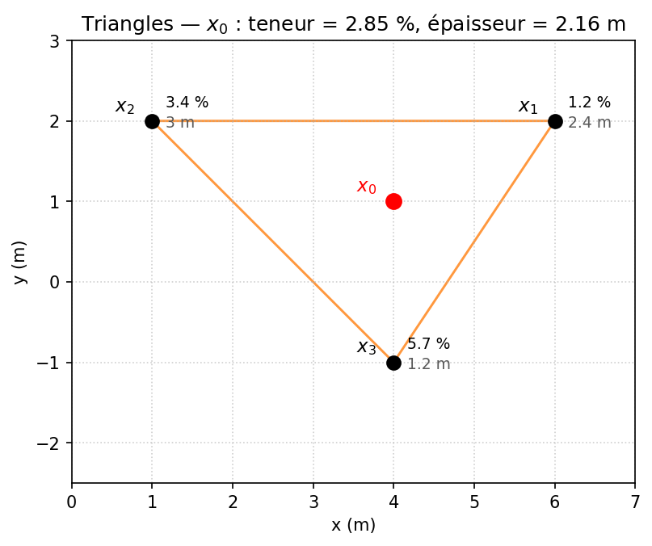
Note. Le calcul de l’accumulation \(a = t \cdot w\) (teneur × épaisseur) relève du chapitre 4. On le rappelle ici seulement comme grandeur d’entrée de l’interpolation par triangles ; l’objet de l’exercice est l’interpolation linéaire elle-même.
Accumulations aux sommets (\(a_i = t_i \, w_i\), rappel du ch. 4) :
\[ a_1 = 1{,}2 \times 2{,}4 = 2{,}88, \qquad a_2 = 3{,}0 \times 3{,}4 = 10{,}2, \qquad a_3 = 5{,}7 \times 1{,}2 = 6{,}84. \]
Étape 1 — segment \(\mathbf{x}_1\text{–}\mathbf{x}_2\), à 2/5 depuis \(\mathbf{x}_1\). On interpole linéairement l’accumulation et l’épaisseur :
\[ a_{12} = a_1 + \tfrac{2}{5}\,(a_2 - a_1) = 2{,}88 + \tfrac{2}{5}\,(10{,}2 - 2{,}88) = 5{,}808, \]
\[ w_{12} = w_1 + \tfrac{2}{5}\,(w_2 - w_1) = 2{,}4 + \tfrac{2}{5}\,(3{,}0 - 2{,}4) = 2{,}64 \text{ m}. \]
Étape 2 — segment \(\mathbf{x}_{12}\text{–}\mathbf{x}_3\), à 1/3 depuis \(\mathbf{x}_{12}\).
\[ a_{0} = a_{12} + \tfrac{1}{3}\,(a_3 - a_{12}) = 5{,}808 + \tfrac{1}{3}\,(6{,}84 - 5{,}808) = 6{,}152, \]
\[ w_{0} = w_{12} + \tfrac{1}{3}\,(w_3 - w_{12}) = 2{,}64 + \tfrac{1}{3}\,(1{,}2 - 2{,}64) = 2{,}16 \text{ m}. \]
Teneur estimée (accumulation divisée par l’épaisseur) :
\[ t_0 = \frac{a_0}{w_0} = \frac{6{,}152}{2{,}16} = 2{,}85\;\%. \]
L’estimation en \(\mathbf{x}_0\) est donc \([\,2{,}85\;\%,\; 2{,}16\;\text{m}\,]\).
Exercice 5 — Inverse de la distance sur une veine (\(b = 2\))
On reprend les trois sondages de l’exercice 4 :
| Sondage | Teneur \(t_i\) (%) | Épaisseur \(w_i\) (m) | Distance \(d_i\) (m) |
|---|---|---|---|
| \(\mathbf{x}_1\) | 1,2 | 2,4 | 2,24 |
| \(\mathbf{x}_2\) | 3,0 | 3,4 | 3,16 |
| \(\mathbf{x}_3\) | 5,7 | 1,2 | 2,00 |
Estimez l’épaisseur, l’accumulation puis la teneur en \(\mathbf{x}_0\) par la méthode de l’inverse de la distance avec exposant \(b = 2\).
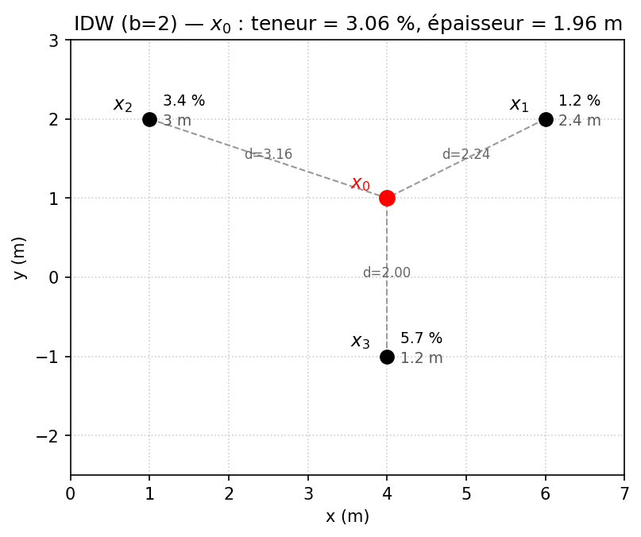
Note. L’accumulation \(a = t\cdot w\) est une grandeur du chapitre 4 ; on l’utilise ici uniquement comme variable interpolée. On estime séparément l’épaisseur et l’accumulation par IDW, puis on en déduit la teneur \(t_0 = a_0 / w_0\).
Poids IDW (\(\lambda_i \propto 1/d_i^{\,2}\)) :
\[ \frac{1}{d_1^2} = \frac{1}{2{,}24^2} \approx 0{,}20, \quad \frac{1}{d_2^2} = \frac{1}{3{,}16^2} \approx 0{,}10, \quad \frac{1}{d_3^2} = \frac{1}{2{,}00^2} = 0{,}25. \]
La somme des poids non normalisés vaut \(0{,}20 + 0{,}10 + 0{,}25 = 0{,}55\).
Épaisseur estimée :
\[ w_0 = \frac{\sum_i \dfrac{w_i}{d_i^2}}{\sum_i \dfrac{1}{d_i^2}} = \frac{0{,}20\times 2{,}4 + 0{,}10\times 3{,}0 + 0{,}25\times 1{,}2}{0{,}55} = 1{,}96\ \text{m}. \]
Accumulation estimée (\(a_i = t_i w_i\) : \(a_1 = 2{,}88\), \(a_2 = 10{,}2\), \(a_3 = 6{,}84\)) :
\[ a_0 = \frac{0{,}20\times 2{,}88 + 0{,}10\times 10{,}2 + 0{,}25\times 6{,}84}{0{,}55} = 6{,}01. \]
Teneur :
\[ t_0 = \frac{a_0}{w_0} = \frac{6{,}01}{1{,}96} = 3{,}06\;\%. \]
L’estimation en \(\mathbf{x}_0\) est donc \([\,3{,}06\;\%,\; 1{,}96\;\text{m}\,]\). On remarque que le sondage \(\mathbf{x}_3\), le plus proche (\(d_3 = 2{,}00\) m), reçoit le poids le plus élevé.
Exercice 6 — Inverse de la distance multi-points : critère de recherche, anisotropie et exposant
Sur un plan de localisation, on veut estimer la teneur au point \(\mathbf{x}_0\). Les écarts de coordonnées \((\Delta x, \Delta y)\) entre \(\mathbf{x}_0\) et chacun des cinq échantillons voisins, ainsi que leurs teneurs, sont :
| Échantillon | \(\Delta x\) (m) | \(\Delta y\) (m) | Teneur (ppm) |
|---|---|---|---|
| \(\mathbf{x}_1\) | 20 | 20 | 12 |
| \(\mathbf{x}_2\) | 10 | 30 | 5 |
| \(\mathbf{x}_3\) | 30 | 10 | 7 |
| \(\mathbf{x}_4\) | 60 | 40 | — |
| \(\mathbf{x}_5\) | 70 | 20 | — |
On retient un critère de recherche ne conservant que les trois échantillons les plus proches.
a) Calculez les distances euclidiennes \(d_i\) et identifiez les trois échantillons retenus.
b) Estimez la teneur en \(\mathbf{x}_0\) par IDW avec exposant \(b = 2\).
c) On souhaite maintenant introduire une anisotropie de la forme \(d = \sqrt{\Delta x^2 + r^2\,\Delta y^2}\) avec un rapport d’anisotropie tel que \(r^2 = 16\). Quel est l’effet de ce choix sur l’estimation ?
d) Les données sont peu précises (faible reproductibilité analytique). Faut-il privilégier un exposant \(b\) faible ou élevé ? Justifiez.
a) Distances et critère de recherche.
\[ d_1 = \sqrt{20^2 + 20^2} = 28{,}28\text{ m}, \quad d_2 = \sqrt{10^2 + 30^2} = 31{,}62\text{ m}, \quad d_3 = \sqrt{30^2 + 10^2} = 31{,}62\text{ m}, \]
\[ d_4 = \sqrt{60^2 + 40^2} = 72{,}11\text{ m}, \quad d_5 = \sqrt{70^2 + 20^2} = 72{,}80\text{ m}. \]
Les trois plus proches sont \(\mathbf{x}_1\), \(\mathbf{x}_2\) et \(\mathbf{x}_3\) ; les échantillons \(\mathbf{x}_4\) et \(\mathbf{x}_5\) sont exclus par le critère de recherche.
b) Estimation IDW (\(b = 2\)). Poids non normalisés \(1/d_i^2\) :
\[ \frac{1}{28{,}28^2} = 1{,}250\times 10^{-3}, \quad \frac{1}{31{,}62^2} = 1{,}000\times 10^{-3}, \quad \frac{1}{31{,}62^2} = 1{,}000\times 10^{-3}. \]
Somme : \(W = 3{,}251\times 10^{-3}\). Poids normalisés :
\[ \lambda_1 = 0{,}3846, \qquad \lambda_2 = 0{,}3077, \qquad \lambda_3 = 0{,}3077. \]
\[ Z^*(\mathbf{x}_0) = 0{,}3846 \times 12 + 0{,}3077 \times 5 + 0{,}3077 \times 7 = 8{,}31\ \text{ppm}. \]
c) Anisotropie. Avec \(d = \sqrt{\Delta x^2 + r^2 \Delta y^2}\) et \(r^2 = 16\) (soit \(r = 4\)), les écarts en \(y\) sont multipliés par 4 dans le calcul de la distance : les points éloignés dans la direction \(y\) sont perçus comme beaucoup plus éloignés et perdent de l’influence sur l’estimation. On favorise ainsi la continuité dans la direction \(x\).
d) Choix de l’exposant. Comme les données sont peu précises, il faut privilégier un exposant \(b\) faible. Un \(b\) élevé concentre le poids sur le ou les points les plus proches ; or, si ces données sont entachées d’erreur, on ne devrait pas leur accorder un poids dominant. Un \(b\) faible répartit davantage les poids et produit un estimateur plus lissé, moins sensible aux erreurs individuelles.
14.6 Introduction à la géostatistique
Exercices à venir.
14.7 Variogramme
Exercice 1 — Variogramme expérimental sur carottes (Cu)
On dispose des teneurs en cuivre suivantes, obtenues sur des carottes de longueur constante de \(3\ \text{m}\). Calculez le variogramme expérimental \(\hat\gamma(h)\) pour les distances \(h = 3\), \(6\) et \(9\ \text{m}\). Indiquez le nombre de paires \(N(h)\).
| Carotte | 1 | 2 | 3 | 4 | 5 | 6 | 7 |
|---|---|---|---|---|---|---|---|
| Teneur Cu (%) | 1,5 | 1,6 | 1,8 | 3,5 | 2,8 | 3,5 | 3,9 |
Le variogramme expérimental se calcule par \[ \hat\gamma(h) = \frac{1}{2\,N(h)} \sum_{i=1}^{N(h)} \big[Z(\mathbf{x}_i+\mathbf{h}) - Z(\mathbf{x}_i)\big]^2 . \]
| \(h\ (\text{m})\) | \(N(h)\) | \(\hat\gamma(h)\ (\%^2)\) |
|---|---|---|
| 3 | 6 | 0,34 |
| 6 | 5 | 0,59 |
| 9 | 4 | 1,06 |
Exercice 2 — Variogramme expérimental dans une direction (épaisseur de veine)
La figure suivante montre l’épaisseur d’une veine minéralisée mesurée en certains points.
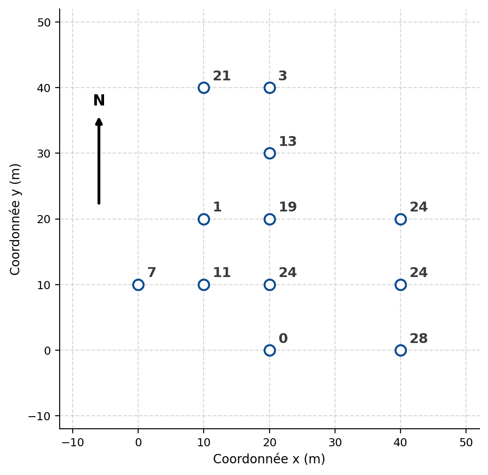
Quelle est la valeur du variogramme expérimental \(\hat\gamma(\mathbf{h})\) dans la direction \(90^\circ\) (azimut) pour la distance \(h = 20\ \text{m}\) (tolérance angulaire nulle et tolérance sur la distance nulle) ? Indiquez clairement toutes les paires considérées dans votre calcul ainsi que les unités du résultat.
La direction d’azimut \(90^\circ\) correspond à l’axe est-ouest (direction des \(x\)). Pour \(h = 20\ \text{m}\), on apparie les points distants exactement de \(20\ \text{m}\) sur une même ligne :
\[ \hat\gamma(\mathbf{h}) = \frac{1}{2\times 4}\Big[(0-28)^2+(24-24)^2+(19-24)^2+(7-24)^2\Big] = 137{,}25\ \text{m}^2 . \]
Les paires utilisées sont \((0,28)\), \((24,24)\), \((19,24)\) et \((7,24)\), soit \(N(\mathbf{h})=4\).
Exercice 3 — Ajustement d’un modèle (ciment C3S)
Le variogramme expérimental ci-dessous représente la variation de la teneur du ciment en C3S (mesurée en %) dans le temps, à la sortie d’une cimenterie. Le palier est atteint à \(\hat\gamma \approx 10\) pour \(\delta t \approx 10\ \text{heures}\), avec une ordonnée à l’origine d’environ \(3\).
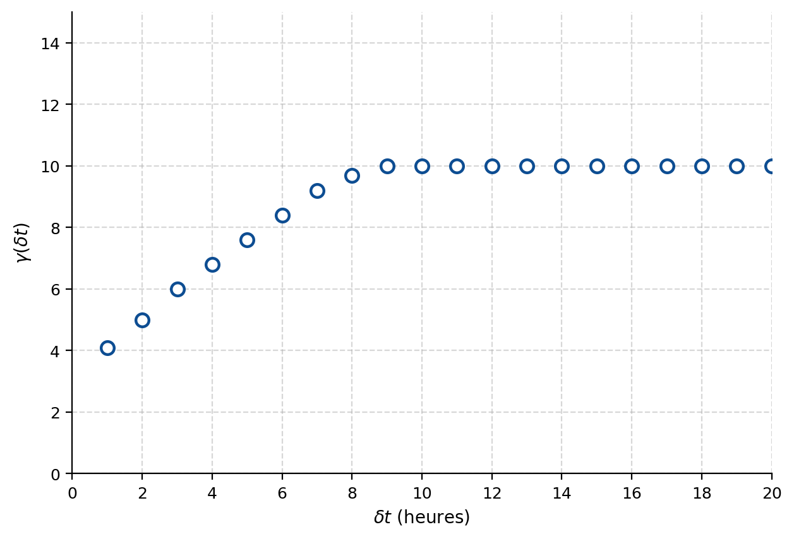
Quel est le modèle de variogramme (type et paramètres) qui permet un ajustement adéquat au variogramme expérimental ? Indiquez clairement les unités des paramètres fournis.
Modèle sphérique avec portée \(a = 10\ \text{heures}\), pépite \(C_0 = 3\ \%^2\) et palier de la composante structurée \(C = 7\ \%^2\) (palier total \(C_0 + C = 10\ \%^2\)).
Exercice 4 — Variogramme expérimental sur deux forages (Au)
On vous donne deux portions de forage sur lesquelles sont indiquées les teneurs en Au (ppm) pour des carottes de \(3\ \text{m}\). Les deux forages sont espacés de \(9\ \text{m}\) de centre à centre (le dessin n’est pas à l’échelle).
| Forage 1 (ppm) | Forage 2 (ppm) |
|---|---|
| 5,2 | 5,2 |
| 2,3 | 4,6 |
| 3,7 | 6,3 |
| 9,1 | 8,1 |
| 4,3 | 2,7 |
Les deux colonnes sont distantes de \(9\ \text{m}\) horizontalement ; les carottes successives d’un même forage sont distantes de \(3\ \text{m}\) verticalement.
Calculez le variogramme expérimental omnidirectionnel à la distance \(h = 9\ \text{m}\) exactement, en prenant soin d’indiquer toutes les paires utilisées.
Calculez le variogramme expérimental dans la direction horizontale, puis dans la direction verticale.
a) Omnidirectionnel à \(h=9\ \text{m}\). Les paires distantes de \(9\ \text{m}\) sont :
\((5{,}2;\,9{,}1)\), \((2{,}3;\,4{,}3)\), \((5{,}2;\,8{,}1)\), \((4{,}6;\,2{,}7)\), \((5{,}2;\,5{,}2)\), \((2{,}3;\,4{,}6)\), \((3{,}7;\,6{,}3)\), \((9{,}1;\,8{,}1)\), \((4{,}3;\,2{,}7)\).
\(N(h)=9\) paires. La somme des différences carrées vaut environ \(87{,}42\), d’où \[ \hat\gamma(9) = \frac{1}{2\times 9}\sum \big[\Delta Z\big]^2 \approx 4{,}86\ \text{ppm}^2 . \]
b) Horizontal (\(9\ \text{m}\), d’un forage à l’autre, même niveau). Paires : \((5{,}2;\,5{,}2)\), \((2{,}3;\,4{,}6)\), \((3{,}7;\,6{,}3)\), \((9{,}1;\,8{,}1)\), \((4{,}3;\,2{,}7)\). \(N=5\), somme des diff\(^2 = 15{,}61\), donc \(\hat\gamma = 1{,}561\ \text{ppm}^2\).
Vertical (au sein d’un forage).
| \(h\ (\text{m})\) | \(N(h)\) | \(\hat\gamma(h)\ (\text{ppm}^2)\) |
|---|---|---|
| 3 | 6 | 5,485 |
| 6 | 4 | 4,483 |
| 9 | 4 | 8,976 |
| 12 | 4 | 3,904 |
Exercice 5 — Variogramme expérimental directionnel sur grille (azimut 90°)
Calculez le variogramme expérimental \(\hat\gamma(\mathbf{h})\) des données suivantes dans la direction (azimut) \(90^\circ\) pour les distances \(h = 10\ \text{m}\) et \(h = 20\ \text{m}\) (tolérance angulaire \(0{,}1^\circ\)). La grille a un pas de \(10\ \text{m}\) en \(x\) et en \(y\).
| \(y \backslash x\) | 0 | 10 | 20 | 30 | 40 | 50 | 60 | 70 | 80 | 90 | 100 | 110 |
|---|---|---|---|---|---|---|---|---|---|---|---|---|
| 110 | 3 | 6 | 1 | 12 | 8 | 16 | ||||||
| 80 | 14 | 13 | 18 | 15 | 16 | 0 | ||||||
| 50 | 17 | 13 | 8 | 11 | 11 | 14 | ||||||
| 20 | 0 | 16 | 1 | 3 | 19 | 9 | ||||||
| 19 | 9 | 7 | 4 | 9 | 5 |
(Disposition des teneurs reproduite du document source ; la position exacte de chaque ligne suit la figure d’origine.)
En appariant les points distants de \(10\ \text{m}\) puis \(20\ \text{m}\) dans la direction est-ouest :
| \(h\ (\text{m})\) | \(N(h)\) | \(\hat\gamma(h)\) |
|---|---|---|
| 10 | 4 | 33,5 |
| 20 | 7 | 23,571 |
Exercice 6 — Variogramme expérimental 2D multidirectionnel (épaisseur de veine)
Soit les données 2D suivantes montrant l’épaisseur d’une veine minéralisée (en mètres), localisées sur une grille de \(0\) à \(220\ \text{m}\) en \(x\) et en \(y\) :
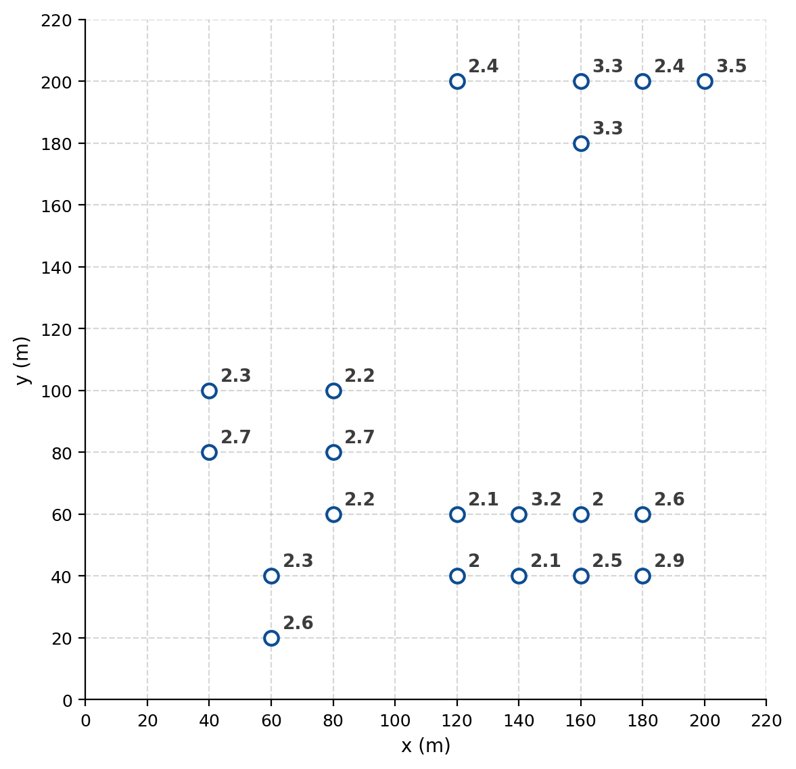
Calculez le variogramme expérimental selon les azimuts \(0^\circ\), \(45^\circ\), \(90^\circ\) et \(135^\circ\), pour des classes d’égales largeurs de \(20\ \text{m}\) allant de \(]0,20]\) à \(]60,80]\ \text{m}\), avec une très petite tolérance angulaire. Indiquez le nombre de paires et la distance moyenne pour chaque point du variogramme.
À partir des résultats de a), calculez le variogramme expérimental selon les mêmes azimuts, pour des classes d’égales largeurs de \(40\ \text{m}\) jusqu’à \(80\ \text{m}\). Indiquez le nombre de paires et la distance pour chaque point.
a) Format de sortie : (distance moyenne, nombre de paires, \(\hat\gamma\)).
Azimut \(0^\circ\) :
| \(\bar h\ (\text{m})\) | \(N\) | \(\hat\gamma\) |
|---|---|---|
| 20,00 | 9 | 0,13 |
| 40,00 | 1 | 0 |
Azimut \(45^\circ\) : \((28{,}28;\ 5;\ 0{,}23)\).
Azimut \(90^\circ\) :
| \(\bar h\ (\text{m})\) | \(N\) | \(\hat\gamma\) |
|---|---|---|
| 20,00 | 8 | 0,34 |
| 40,00 | 9 | 0,12 |
| 60,00 | 5 | 0,21 |
| 80,00 | 3 | 0,22 |
Azimut \(135^\circ\) : \((28{,}28;\ 3;\ 0{,}22)\) et \((56{,}57;\ 3;\ 0{,}09)\).
b) En regroupant en classes de \(40\ \text{m}\) :
Azimut \(0^\circ\) : \((22{,}00;\ 10;\ 0{,}12)\).
Azimut \(45^\circ\) : \((28{,}28;\ 5;\ 0{,}23)\).
Azimut \(90^\circ\) : \((30{,}59;\ 17;\ 0{,}22)\) et \((67{,}50;\ 8;\ 0{,}21)\).
Azimut \(135^\circ\) : \((28{,}28;\ 3;\ 0{,}22)\) et \((56{,}57;\ 3;\ 0{,}09)\).
Exercice 7 — Variance, covariance et combinaisons linéaires (modèle sphérique)
On a un variogramme sphérique avec \(C_0 = 1\), \(C = 10\) et \(a = 20\). Soit les points \(\mathbf{x}_1 = (0,0)\) et \(\mathbf{x}_2 = (10,0)\).
Quelle est la variance de \(Z(\mathbf{x}_1)\) ? de \(Z(\mathbf{x}_2)\) ?
Quelle est la covariance entre \(Z(\mathbf{x}_1)\) et \(Z(\mathbf{x}_2)\) ?
On forme \(Z_3 = 0{,}8\,Z(\mathbf{x}_1) + 0{,}2\,Z(\mathbf{x}_2)\). Quelle est la variance de \(Z_3\) ? Quelle est la covariance de \(Z_3\) avec \(Z(\mathbf{x}_1)\) ?
On forme \(Z_4 = 0{,}4\,Z(\mathbf{x}_1) + 0{,}6\,Z(\mathbf{x}_2)\). Quelle est la covariance entre \(Z_3\) et \(Z_4\) ?
a) \(\operatorname{Var}\big(Z(\mathbf{x}_1)\big) = \operatorname{Var}\big(Z(\mathbf{x}_2)\big) = C_0 + C = 11\).
b) \(h = 10\), donc \[ \gamma(h) = 1 + 10\Big(1{,}5\tfrac{10}{20} - 0{,}5\big(\tfrac{10}{20}\big)^3\Big) = 7{,}875, \] d’où \(\operatorname{Cov}\big(Z(\mathbf{x}_1),Z(\mathbf{x}_2)\big) = (C_0+C) - \gamma(h) = 11 - 7{,}875 = 3{,}125\).
c) \[ \operatorname{Var}(Z_3) = 0{,}8^2\cdot 11 + 0{,}2^2\cdot 11 + 2\cdot 0{,}8\cdot 0{,}2\cdot 3{,}125 = 8{,}48 . \] \[ \operatorname{Cov}\big(Z_3, Z(\mathbf{x}_1)\big) = 0{,}8\cdot 11 + 0{,}2\cdot 3{,}125 = 9{,}425 . \]
d) \[ \operatorname{Cov}(Z_3, Z_4) = 11\,(0{,}8\cdot 0{,}4 + 0{,}2\cdot 0{,}6) + 3{,}125\,(0{,}8\cdot 0{,}6 + 0{,}2\cdot 0{,}4) = 6{,}59 . \]
Exercice 8 — Portée directionnelle d’un modèle anisotrope (Pb)
Un site contaminé au Pb montre un modèle de variogramme comprenant 3 composantes différentes :
| Composante | \(C\ (\text{ppm}^2)\) | \(a_g\ (\text{m})\), \(\theta_g\) (azimut) | \(a_p\ (\text{m})\), \(\theta_p\) (azimut) |
|---|---|---|---|
| Effet pépite | 120 | — | — |
| Sphérique 1 | 580 | 1000 ; 87° | 300 ; 177° |
| Sphérique 2 | 1200 | 400 ; 42° | 200 ; 132° |
où \(\theta_g\) est la direction de meilleure continuité et \(\theta_p\) la direction de moindre continuité.
Selon l’azimut \(30^\circ\), à quelle distance séparant deux points peut-on considérer les teneurs en Pb non corrélées ?
On cherche la portée selon la direction \(30^\circ\). On calcule la portée directionnelle pour chacune des deux composantes sphériques (anisotropie géométrique) et on retient la valeur maximale.
Sphérique 1 — angle avec \(a_g\) : \(57^\circ\), \[ a_{30} = \frac{1000\times 300}{\sqrt{1000^2\sin^2 57^\circ + 300^2\cos^2 57^\circ}} = 351{,}1\ \text{m}. \]
Sphérique 2 — angle avec \(a_g\) : \(12^\circ\), \[ a_{30} = \frac{400\times 200}{\sqrt{400^2\sin^2 12^\circ + 200^2\cos^2 12^\circ}} = 376{,}3\ \text{m}. \]
La portée dans la direction \(30^\circ\) est donc \(376{,}3\ \text{m}\) : au-delà de cette distance, les teneurs sont considérées non corrélées.
Exercice 9 — Proposer un modèle à partir d’observations terrain (Cu)
Dans une mine 2D de Cu, un géologue vous communique les faits suivants :
- Il a prélevé plusieurs échantillons de même taille côte à côte et a obtenu, pour ces échantillons voisins, une différence carrée des teneurs égale en moyenne à \(2\ \%^2\).
- Selon son expérience, la zone d’influence d’un échantillon est de l’ordre de \(70\ \text{m}\) dans la direction est-ouest. Il affirme que cette zone d’influence est approximativement deux fois plus courte dans la direction nord-sud. La direction est-ouest correspond à l’orientation générale des fractures dans le gisement.
- Il a calculé une variance de \(10\ \%^2\) pour la teneur en Cu sur l’ensemble des échantillons couvrant une très grande surface par rapport à la zone d’influence d’un échantillon.
Suggérez un modèle de variogramme (type et paramètres) pouvant tenir compte de ces informations.
Variogramme sphérique (ou exponentiel) avec anisotropie géométrique :
- portée principale est-ouest \(a_g = 70\ \text{m}\), portée la plus courte nord-sud \(a_p = 35\ \text{m}\) ;
- pépite \(C_0 = \tfrac{1}{2}\times 2\ \%^2 = 1\ \%^2\) (la demi-différence carrée des voisins immédiats estime la pépite) ;
- palier de la composante structurée \(C = 10 - 1 = 9\ \%^2\) (la variance globale donne le palier total).
Exercice 10 — Covariance entre deux points (anisotropie géométrique, Zn)
Un gisement de Zn présente un variogramme sphérique (2D) avec effet de pépite de \(4\ \%^2\), \(C = 20\ \%^2\) et des portées suivant les différentes directions décrites par un modèle d’anisotropie géométrique, avec axes principaux en \(x\) et \(y\), et \(a_x = 10\ \text{m}\), \(a_y = 20\ \text{m}\). On désire estimer la teneur au point \(\mathbf{x}_0\) situé en \((0,0)\) à partir des teneurs mesurées aux points \(\mathbf{x}_1\) à \(\mathbf{x}_3\), de coordonnées respectives \((-10,0)\), \((0,20)\) et \((5,22)\), où l’on a observé \(Z_1 = 2\,\%\), \(Z_2 = 3{,}3\,\%\) et \(Z_3 = 3\,\%\).
Quelle est la covariance entre les teneurs aux points \(\mathbf{x}_2\) et \(\mathbf{x}_3\) ?
(Le système de krigeage complet de ces mêmes données est traité à l’exercice correspondant du chapitre 9 ; on ne demande ici que la covariance.)
Le vecteur \(\mathbf{x}_2 \to \mathbf{x}_3 = (5, 2)\). L’azimut associé : \[ \theta = \arctan\!\Big(\frac{5-0}{22-20}\Big) = 68{,}2^\circ . \] Portée directionnelle dans cette direction : \[ a(\theta) = \frac{20\times 10}{\sqrt{(20\sin 68{,}2^\circ)^2 + (10\cos 68{,}2^\circ)^2}} = 10{,}56\ \text{m}. \] Distance entre les deux points : \[ h = \sqrt{5^2 + 2^2} = 5{,}385\ \text{m}. \] D’où \[ C(\mathbf{h}) = 20\Big[1 - \Big(1{,}5\,\tfrac{5{,}385}{10{,}56} - 0{,}5\,\big(\tfrac{5{,}385}{10{,}56}\big)^3\Big)\Big] = 6{,}03\ \%^2 . \]
Exercice 11 — Covariance entre deux points (plan de localisation, Fe)
Soit le plan de localisation suivant, avec un point à estimer \(\mathbf{x}_0\) et des points de données \(\mathbf{x}_1\) à \(\mathbf{x}_4\) :
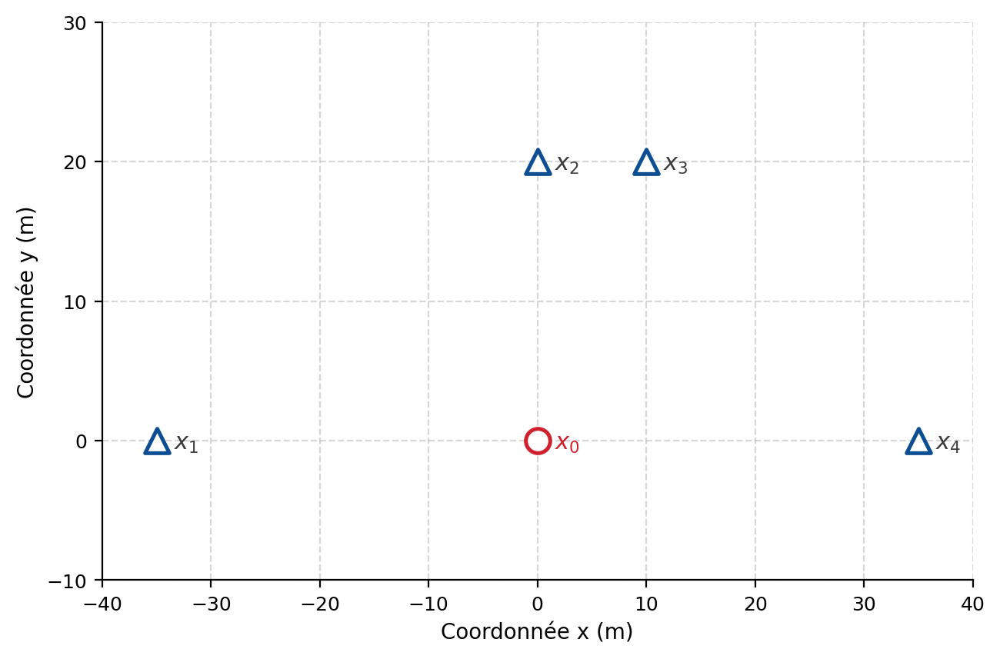
Le variogramme est sphérique anisotrope avec \(a_x = 30\ \text{m}\) et \(a_y = 50\ \text{m}\), et un effet de pépite de \(5\ \%^2\). Le \(C\) du sphérique est de \(50\ \%^2\) (palier total \(55\ \%^2\)).
Quelle est la covariance entre les teneurs aux points \(\mathbf{x}_0\) et \(\mathbf{x}_3\) ?
(Le système de krigeage complet de ces mêmes données est traité à l’exercice correspondant du chapitre 9 ; on ne demande ici que la covariance.)
Distance entre \(\mathbf{x}_0\) et \(\mathbf{x}_3\) : \[ h = \sqrt{100 + 400} = 22{,}36\ \text{m}. \] Angle avec l’axe des \(y\) : \[ \theta = \arctan\!\Big(\frac{10}{20}\Big) = 26{,}6^\circ . \] Portée dans cette direction : \[ a(\theta) = \frac{50\times 30}{\sqrt{50^2\sin^2 26{,}6^\circ + 30^2\cos^2 26{,}6^\circ}} = 42{,}9\ \text{m}. \] Covariance (sphérique) : \[ C(\mathbf{h}) = 50\Big[1 - 1{,}5\,\tfrac{22{,}36}{42{,}9} + 0{,}5\,\big(\tfrac{22{,}36}{42{,}9}\big)^3\Big] = 14{,}5\ \%^2 . \]
Exercice 12 — Décrire un modèle à partir de variogrammes directionnels (azimut 22°)
On a un gisement 2D dont la direction préférentielle de la minéralisation est \(22^\circ\) (azimut). On dispose des 4 variogrammes expérimentaux directionnels suivants, calculés selon les azimuts \(22^\circ\), \(67^\circ\), \(112^\circ\) et \(167^\circ\). Les paliers atteints valoisinent \(800\ \text{ppm}^2\), avec une ordonnée à l’origine d’environ \(200\ \text{ppm}^2\) et des portées variant selon la direction.
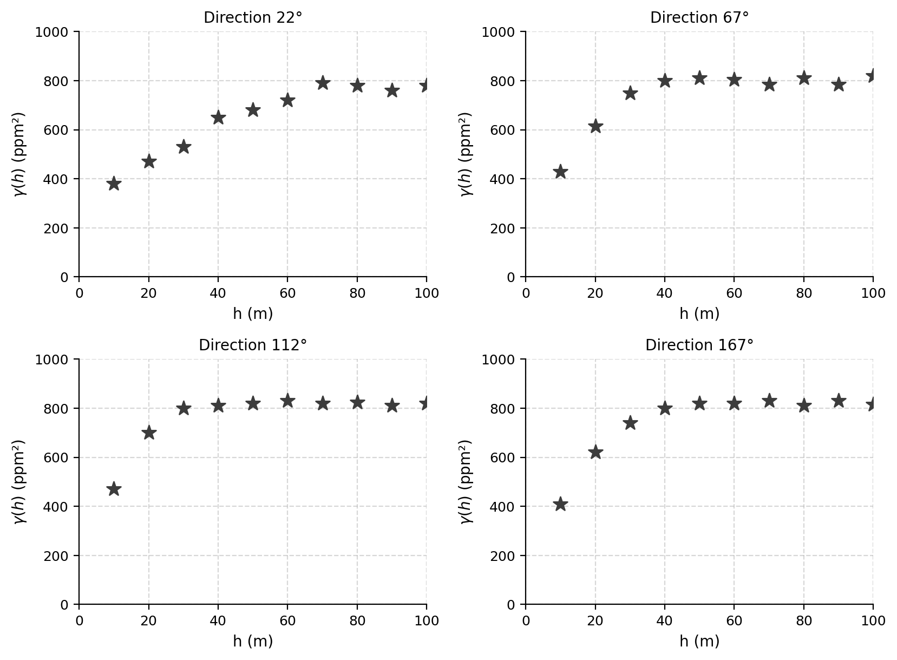
Décrivez le modèle de variogramme (en spécifiant tous les paramètres) permettant un ajustement adéquat de ces variogrammes expérimentaux.
Modèle sphérique avec \(C_0 = 200\ \text{ppm}^2\) et \(C = 600\ \text{ppm}^2\) ; anisotropie géométrique, ellipse orientée à \(22^\circ\), avec portée principale \(a_g = 80\ \text{m}\) et portée mineure \(a_p = 30\ \text{m}\).
Exercice 13 — Décrire un modèle 2D, covariance directionnelle et précision analytique
Dans un gisement 2D, on a obtenu un modèle de variogramme illustré dans 8 directions (\(10^\circ\), \(32{,}5^\circ\), \(55^\circ\), \(77{,}5^\circ\), \(100^\circ\), \(122{,}5^\circ\), \(145^\circ\), \(167{,}5^\circ\)). Le palier est de l’ordre de \(12\) et l’ordonnée à l’origine d’environ \(2\), avec des portées variant selon la direction.
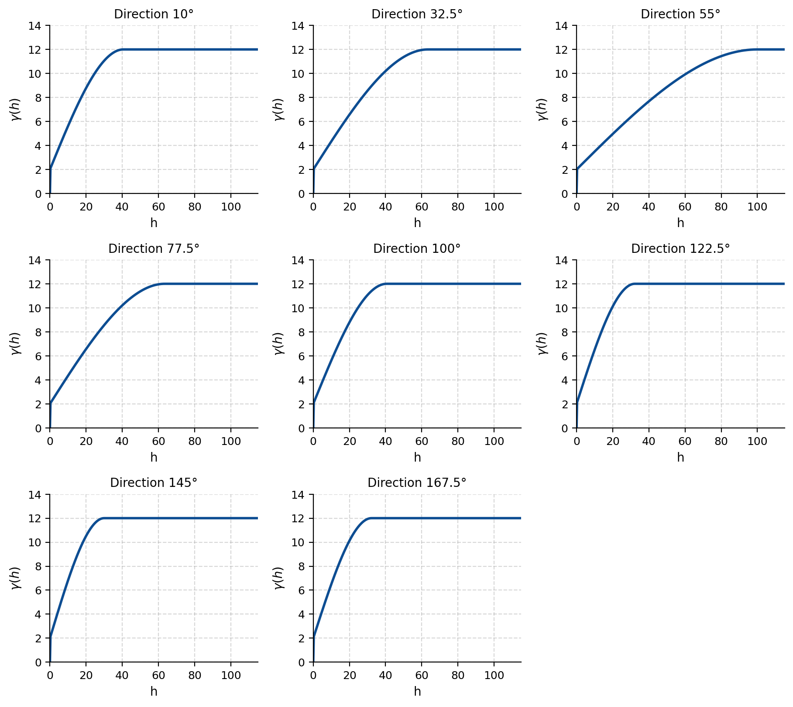
Décrivez le modèle de variogramme illustré sur ces figures.
Soit deux points espacés de \(20\ \text{m}\) et définissant un azimut de \(43^\circ\). Quelle est la covariance entre ces deux points ?
Les données ayant servi au calcul des variogrammes ont été obtenues à partir d’une procédure analytique assurant une bonne précision. Quelle serait la conséquence sur le variogramme d’utiliser une procédure d’analyse moins précise ?
a) Modèle sphérique avec \(C_0 = 2\), \(C = 10\), et des portées décrivant une anisotropie géométrique : \(a_g = 100\) dans la direction \(55^\circ\) et \(a_p = 30\) dans la direction \(145^\circ\).
b) L’angle entre la direction \(43^\circ\) et la direction de meilleure continuité (\(55^\circ\)) est de \(12^\circ\). Portée dans cette direction : \[ a(\theta) = \frac{100\times 30}{\sqrt{100^2\sin^2 12^\circ + 30^2\cos^2 12^\circ}} = 83{,}4\ \text{m}. \] Covariance : \[ C(\mathbf{h}) = 10\Big[1 - \Big(1{,}5\,\tfrac{20}{83{,}4} - 0{,}5\,\big(\tfrac{20}{83{,}4}\big)^3\Big)\Big] = 6{,}48 . \]
c) Le modèle présenterait un effet de pépite plus important : une analyse moins précise augmente la variabilité à très courte distance.
Exercice 14 — Ajustement isotrope puis anisotrope et covariances (Zn)
Soit le variogramme expérimental omnidirectionnel obtenu pour un gisement de Zn sur un niveau donné. Le palier est atteint vers \(\hat\gamma \approx 15\ \%^2\).
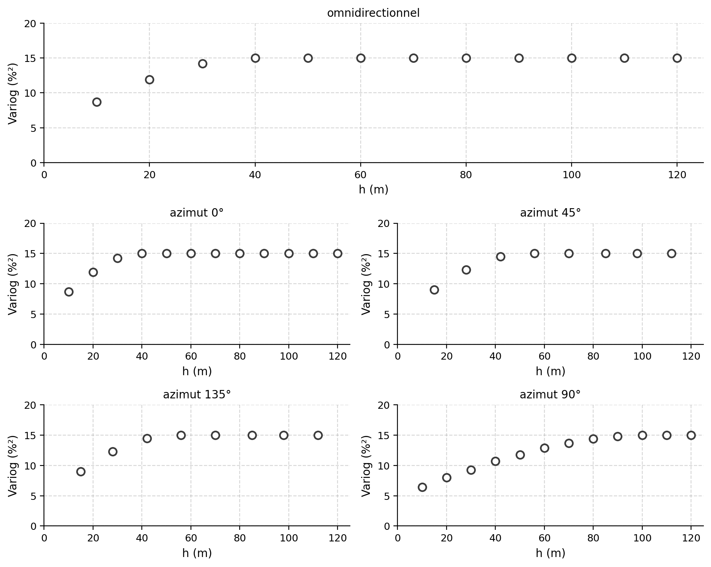
- Ajustez approximativement un modèle isotrope à ces données.
On calcule ensuite les variogrammes directionnels selon les azimuts \(0^\circ\), \(45^\circ\), \(90^\circ\), \(135^\circ\).
Ajustez approximativement un modèle avec anisotropie géométrique à ces données.
En supposant qu’en a) vous ayez obtenu un modèle sphérique isotrope de portée \(40\ \text{m}\), \(C_0 = 5\ \%^2\) et \(C = 10\ \%^2\), calculez la covariance entre les teneurs en Zn pour les points \((0,0)\) et \((30,20)\).
En supposant qu’en b) vous ayez obtenu un modèle sphérique anisotrope avec portées \(100\ \text{m}\) selon \(x\) et \(40\ \text{m}\) selon \(y\) (\(x\) et \(y\) étant les directions principales de l’ellipse), \(C_0 = 5\ \%^2\) et \(C = 10\ \%^2\), calculez la covariance entre les teneurs en Zn pour les points \((0,0)\) et \((30,20)\).
a) Sphérique isotrope avec \(a = 40\ \text{m}\), \(C_0 = 5\ \%^2\), \(C = 10\ \%^2\).
b) Sphérique anisotrope avec \(a_0 = 40\ \text{m}\) et \(a_{90} = 100\ \text{m}\), \(C_0 = 5\ \%^2\) et \(C = 10\ \%^2\).
c) \(h = \sqrt{30^2+20^2} = 36{,}06\approx 36\ \text{m}\) : \[ C(\mathbf{h}) = 10\Big[1 - \Big(1{,}5\,\tfrac{36}{40} - 0{,}5\,\big(\tfrac{36}{40}\big)^3\Big)\Big] = 0{,}14\ \%^2 . \]
d) \(h = 36\ \text{m}\), \(\theta = \arctan(20/30) = 33{,}7^\circ\), portée directionnelle \(a(\theta) = 61{,}8\ \text{m}\) : \[ C(\mathbf{h}) = 10\Big[1 - \Big(1{,}5\,\tfrac{36}{61{,}8} - 0{,}5\,\big(\tfrac{36}{61{,}8}\big)^3\Big)\Big] = 2{,}25\ \%^2 . \]
Exercice 15 — Modèle gaussien anisotrope : variogramme, covariance, corrélation
Soit un modèle gaussien montrant une anisotropie géométrique dont les axes principaux coïncident avec les coordonnées est (\(x\)) et nord (\(y\)), avec \(a_x = 150\), \(a_y = 80\), \(C_0 = 0{,}7\) et \(C = 7{,}6\). Soit deux observations situées en \(\mathbf{x}_1 = (0,0)\) et \(\mathbf{x}_2 = (30,10)\).
L’équation du variogramme gaussien utilisée ici est \(\gamma(\mathbf{h}) = C_0 + C\big(1 - \exp(-3\,|\mathbf{h}|^2/a^2)\big)\) pour \(\mathbf{h} > 0\).
Quelle est la valeur théorique du variogramme pour les v.a. correspondant à ces deux points ?
Quelle est la valeur théorique de la covariance entre les v.a. correspondant à ces deux points ?
Quelle est la valeur théorique de la corrélation entre les v.a. correspondant à ces deux points ? (Rappel : \(\rho_{Z(\mathbf{x}_1),Z(\mathbf{x}_2)} = \operatorname{Cov}\big(Z(\mathbf{x}_1),Z(\mathbf{x}_2)\big)\big/\big[\operatorname{Var}(Z(\mathbf{x}_1))\operatorname{Var}(Z(\mathbf{x}_2))\big]^{1/2}\).)
a) Direction : \(\theta = \arctan(10/30) = 18{,}4^\circ\). Distance : \(h = \sqrt{30^2+10^2} = 31{,}6\ \text{m}\). Portée directionnelle : \(a(\theta) = 134{,}1\ \text{m}\). \[ \gamma(\mathbf{h}) = 0{,}7 + 7{,}6\Big(1 - \exp\big(-3\,(31{,}6/134{,}1)^2\big)\Big) = 1{,}87 . \]
b) \(C(\mathbf{h}) = (C_0 + C) - \gamma(\mathbf{h}) = 0{,}7 + 7{,}6 - 1{,}87 = 6{,}43\).
c) \(\rho = C(\mathbf{h})/(C_0+C) = 6{,}43/8{,}3 = 0{,}77\).
Exercice 16 — Ajuster un modèle gaussien anisotrope à 8 variogrammes directionnels (élévation)
Ajustez approximativement un modèle 2D avec anisotropie géométrique à l’ensemble des variogrammes expérimentaux suivants, décrivant la continuité spatiale d’une variable topographique (élévation), calculés dans 8 directions (\(0^\circ\), \(22{,}5^\circ\), \(45^\circ\), \(67{,}5^\circ\), \(90^\circ\), \(113^\circ\), \(135^\circ\), \(158^\circ\) ; régularisation \(20\)). Donnez l’effet de pépite, les portées principales effectives (min et max) et leur orientation, le palier et le type de modèle. Il importe surtout d’ajuster correctement les débuts des variogrammes (\(0\)–\(120\ \text{m}\)) dans chaque direction.
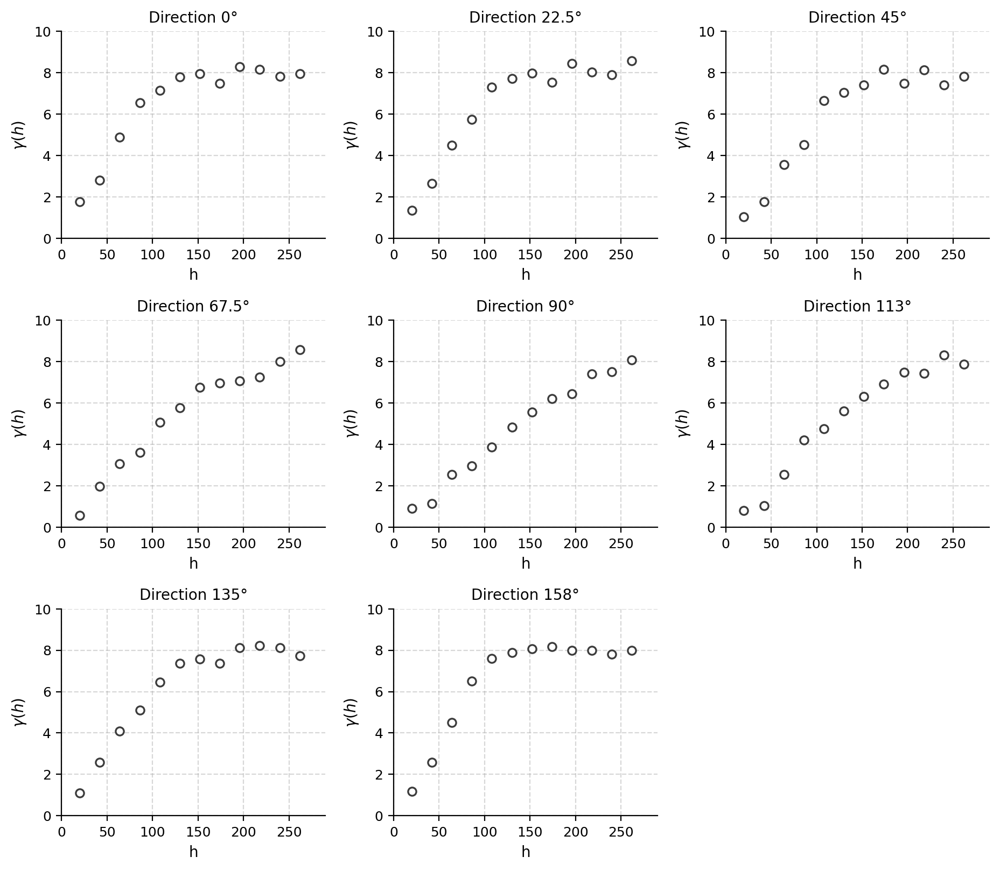
Modèle gaussien avec anisotropie géométrique, portées effectives principales d’environ \(250\ \text{m}\) selon \(x\) (azimut \(90^\circ\)) et d’environ \(120\ \text{m}\) selon \(y\) (azimut \(0^\circ\)), \(C_0 = 0{,}7\) et \(C = 7{,}3\).
Exercice 17 — Associer 9 modèles de variogramme à 9 images simulées
Associez à chacun des modèles de variogramme suivants l’image correspondante (chaque image fait \(100 \times 100\)). Répondez en indiquant d’abord la lettre identifiant le modèle, puis le chiffre identifiant l’image (ex. A-1).
| Modèle | Description |
|---|---|
| A | Pépite pur \(C_0 = 10\) |
| B | Pépite + sphérique isotrope \(C_0 = 5\), \(C = 5\), \(a = 20\) |
| C | Sphérique isotrope \(a = 20\), \(C = 10\) |
| D | Sphérique isotrope \(a = 100\), \(C = 10\) |
| E | Sphérique anisotrope \(a_{120} = 100\), \(a_{30} = 20\), \(C = 1\) |
| F | Sphérique anisotrope \(a_{60} = 100\), \(a_{150} = 20\), \(C = 10\) |
| G | Sphérique anisotrope \(a_{120} = 100\), \(a_{30} = 20\), \(C = 10\) |
| H | Gaussien isotrope, \(a_\text{effectif} = 20\), \(C = 10\) |
| I | Gaussien anisotrope, \(a_{120} = 100\), \(a_{30} = 20\), \(C = 10\) (portées effectives) |
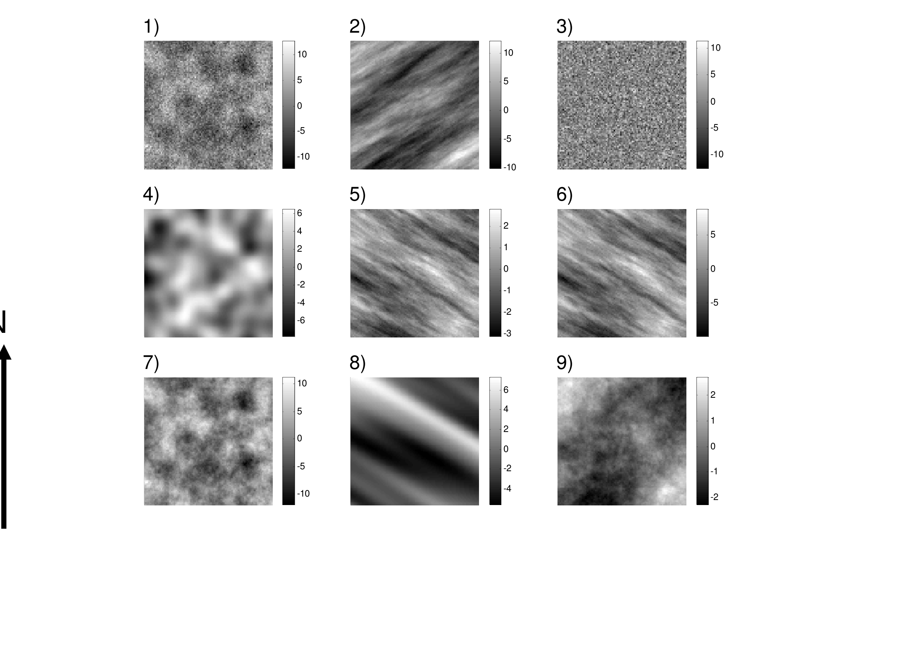
A-3, B-1, C-7, D-9, E-5, F-2, G-6, H-4, I-8.
Exercice 18 — Effet d’une procédure d’échantillonnage moins précise
Quel serait l’effet sur le variogramme d’une procédure d’échantillonnage (P. Gy) moins précise ?
Lorsque la variance relative d’échantillonnage \(s_r^2\) augmente, les analyses peuvent varier davantage à très petite distance : on observe donc une augmentation de l’effet de pépite du variogramme.
Exercice 19 — Admissibilité d’un modèle de covariance
Soit la disposition de points \(Z_i\) et le modèle de covariance présenté à la figure suivante (deux points consécutifs sur une même ligne sont espacés de \(a/\sqrt{2}\)). On forme une nouvelle variable aléatoire \(W\) par \[ W = \sum_{i=1}^{64} (-1)^{\,il_i + ic_i}\, Z_i, \] où \(il_i\) et \(ic_i\) sont respectivement les indices de ligne et de colonne décrivant la position de la \(i\)-ème donnée. On calcule la variance théorique de \(W\) avec ce modèle : \[ \operatorname{Var}(W) = 2\times 64 - 2\times 56\times 0{,}292 = -1{,}6074 . \]
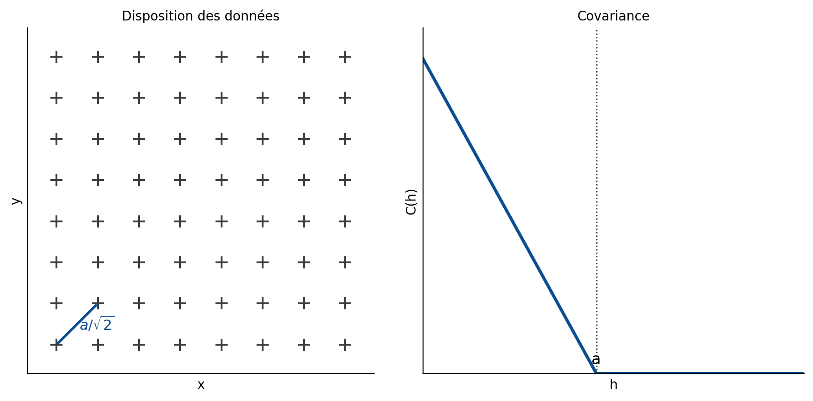
Considérant ce résultat, que peut-on dire du modèle de covariance ?
Comme on vient de trouver une combinaison linéaire dont la variance théorique est négative, on doit conclure que le modèle de covariance utilisé n’est pas admissible en 2D (il l’est cependant en 1D). Un modèle admissible doit garantir \(\operatorname{Var}(W) \geq 0\) pour toute combinaison linéaire.
Exercice 20 — Choix d’orientations pour des variogrammes 3D (forages Nb)
On vous présente les orientations des collets des forages pour l’exploration d’un gisement de Nb (graphique azimut–inclinaison). En appliquant une tolérance angulaire définissant un cône de \(5^\circ\) autour de chaque orientation choisie, indiquez quatre orientations (azimut et plongée) pour le calcul des variogrammes directionnels, de façon à pouvoir détecter une éventuelle anisotropie 3D, à obtenir suffisamment de paires, tout en formant le plus possible de paires avec des observations d’un même forage.
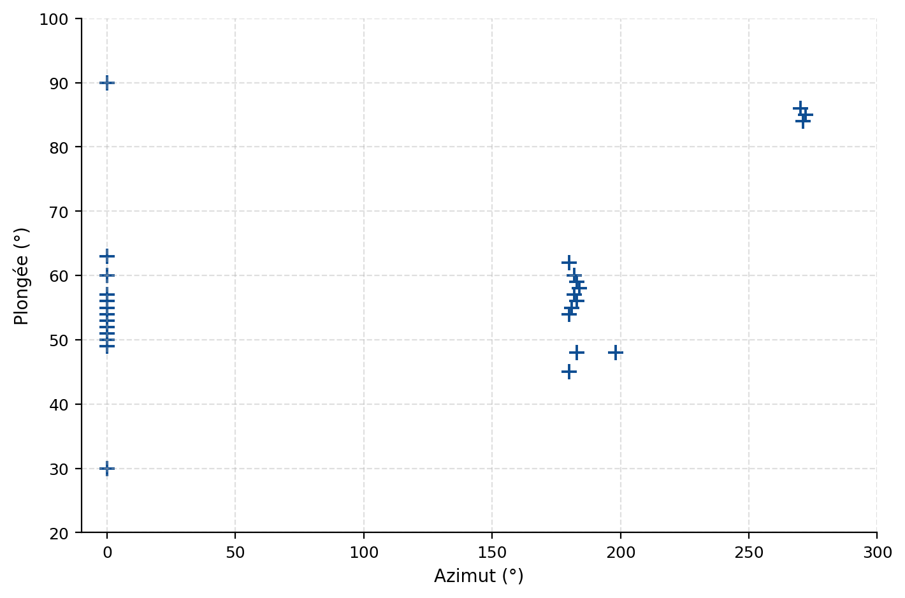
Quatre orientations possibles (azimut–plongée) bien représentées par les forages et couvrant la sphère :
- vertical (forages quasi verticaux) ;
- azimut \(0^\circ\), plongée \(55^\circ\) ;
- azimut \(180^\circ\), plongée \(60^\circ\) ;
- azimut \(180^\circ\), plongée \(45^\circ\).
Ces directions maximisent le nombre de paires intra-forage tout en échantillonnant des directions différentes de l’espace pour révéler l’anisotropie 3D.
Exercice 21 — Comparaison de deux levés bathymétriques
Une compagnie A effectue un relevé bathymétrique dans un chenal marin. Une compagnie B effectue un relevé au même endroit, mais selon un patron d’échantillonnage légèrement différent et avec un appareillage différent. Certaines différences sont observées entre les valeurs des deux levés. La compagnie B prétend que son relevé est plus précis que celui de A, car elle utilise une procédure de correction instantanée pour l’effet des vagues, ce que A ne fait pas (A utilise toutefois un GPS différentiel qui, selon elle, fournit la même précision). Les mesures le long des lignes sont prises approximativement aux \(3\ \text{m}\), et les lignes de relevé sont espacées approximativement de \(10\ \text{m}\).
On vous présente les variogrammes obtenus parallèlement (longitudinalement) et perpendiculairement (transversalement) au chenal pour les deux compagnies (ronds : A ; carrés : B).
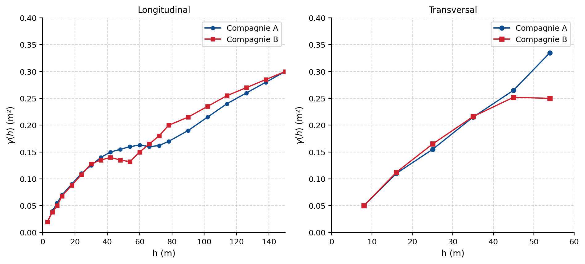
Discutez du résultat obtenu. Les variogrammes expérimentaux appuient-ils la prétention de la compagnie B ? Justifiez.
Suggérez un modèle 2D de variogramme (avec effet de pépite et palier unique fixé à \(0{,}15\ \text{m}^2\)) s’ajustant bien à ces données pour des distances allant jusqu’à \(70\ \text{m}\) longitudinalement et \(25\ \text{m}\) transversalement. Indiquez le type de modèle et les paramètres.
a) Non, les variogrammes n’appuient pas la prétention de B, car les variogrammes expérimentaux sont quasi identiques jusqu’à \(50\ \text{m}\) longitudinalement (dans le sens du relevé). L’effet des vagues, et donc du mouvement du bateau, devrait être un effet de court terme, car la taille d’une vague dans le chenal est typiquement \(< 1\)–\(2\ \text{m}\). Les petites différences observées à plus grande distance s’expliquent facilement par le fait que les lignes de relevé ne sont pas exactement les mêmes et que la répartition peut différer entre les deux campagnes. À noter que le variogramme montre une demi-variance de \(0{,}05\ \text{m}^2\) à \(h \approx 5\ \text{m}\), ce qui correspond à un écart-type d’environ \(22\ \text{cm}\). Vraisemblablement, les deux compagnies corrigent correctement l’effet des vagues, bien que de façon différente.
b) Modèle sphérique avec \(a_\text{long} = 50\ \text{m}\), \(a_\text{trans} = 23\ \text{m}\), \(C_0 = 0\ \text{m}^2\) (ou très faible) et \(C = 0{,}15\ \text{m}^2\).
Exercice 22 — Variogramme expérimental, modèle 2D et lissage du krigeage (examen)
Soit la disposition des données d’une mine montrant l’épaisseur d’une veine minéralisée.
- Calculez, selon un azimut de \(90^\circ\) et une tolérance angulaire de \(0{,}1^\circ\), la valeur du variogramme expérimental pour la seule classe de distance \(]0,20]\ \text{m}\). Précisez le nombre de paires, la valeur \(\hat\gamma\) et la distance moyenne correspondante. Les couples appariés sont :
- Couples à \(10\ \text{m}\) : \((21,3)\) ; \((1,19)\) ; \((7,11)\) ; \((11,24)\)
- Couples à \(20\ \text{m}\) : \((19,24)\) ; \((7,24)\) ; \((24,24)\) ; \((0,28)\)
- Pour un banc d’une mine de cuivre, on calcule les variogrammes expérimentaux des teneurs en % de Cu, selon différentes directions, avec une tolérance angulaire de \(10^\circ\). Ajustez un seul modèle de variogramme 2D à ces variogrammes expérimentaux (fournissez toutes les informations nécessaires pour représenter adéquatement le modèle théorique).
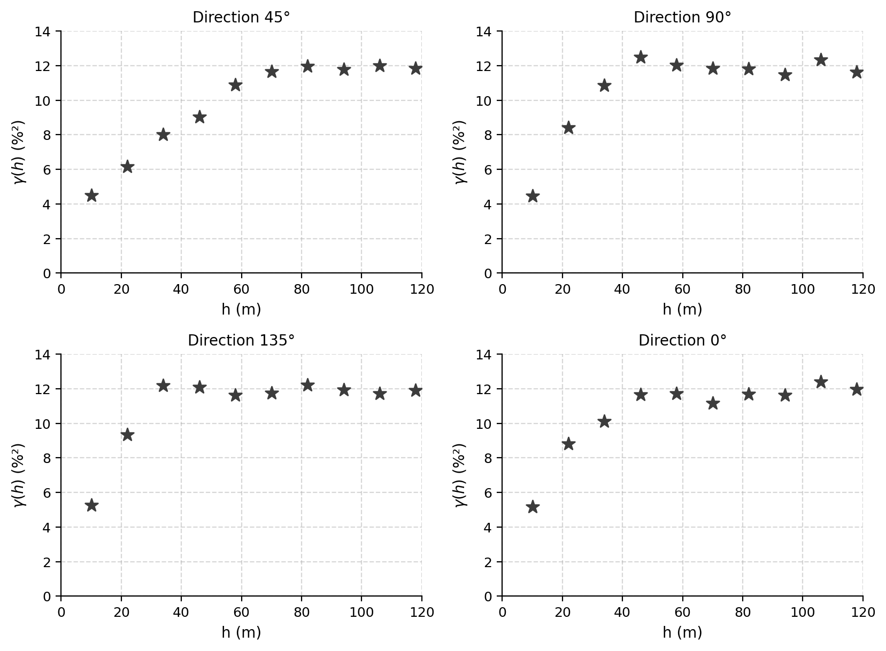
- On effectue un krigeage ordinaire sur une grille régulière de \(10\ \text{m}\), en partant du point \((5\ \text{m}, 5\ \text{m})\), à partir des données de la question a). Le krigeage utilise l’ensemble des données observées pour estimer les valeurs aux points de la grille. Le modèle de variogramme retenu est sphérique avec effet de pépite. On calcule ensuite le variogramme expérimental des valeurs krigées. Le variogramme expérimental obtenu sera-t-il correctement ajusté par le modèle de krigeage utilisé (sphérique avec effet de pépite) ? Justifiez à l’aide de deux arguments principaux.
a) Pour la classe \(]0,20]\ \text{m}\), on regroupe les \(8\) couples (4 à \(10\ \text{m}\) et 4 à \(20\ \text{m}\)). En calculant la demi-moyenne des différences carrées : \[ \hat\gamma(\mathbf{h}) = \frac{1}{2\times 8}\sum_{\text{8 couples}}\big[\Delta\big]^2 = \frac{1\,931}{16} = 120{,}69\ \text{m}^2 , \] avec \(N = 8\) paires et une distance moyenne \(\bar h = \dfrac{4\times 10 + 4\times 20}{8} = 15\ \text{m}\).
b) Modèle sphérique avec anisotropie géométrique : la direction de portée principale est \(45^\circ\) et celle de portée minimale \(135^\circ\), avec \(a_g = 80\ \text{m}\) et \(a_p = 40\ \text{m}\), \(C_0 = 2\ \%^2\) et \(C = 10\ \%^2\).
c) Non, il ne sera pas bien ajusté, pour deux raisons.
- L’effet de pépite sera complètement filtré : les valeurs krigées sont continues (on ne krige qu’en des points sans donnée), ce qui élimine la discontinuité à l’origine.
- La propriété de lissage du krigeage fait que la variance des valeurs krigées est inférieure à la variance des données. Le palier du variogramme des valeurs krigées sera donc inférieur (ce qui demeure vrai même en l’absence d’effet de pépite).
14.8 Variance de blocs, de dispersion et d’estimation
Les valeurs numériques des corrigés sont obtenues à l’aide des abaques GEOMIN (variance de bloc, de dispersion et d’estimation, modèle sphérique). Lorsqu’une figure ou un abaque n’est pas reproduit ici, l’énoncé et la solution chiffrée sont conservés et la source de l’abaque est signalée.
Exercice 1 — Variance de bloc en 1D, 2D et 3D ; variance ponctuelle dans le bloc
On considère un variogramme sphérique (ponctuel) isotrope avec un effet de pépite \(C_0 = 1\,\text{\%}^2\), un palier de structure \(C = 10\,\text{\%}^2\) et une portée \(a = 30\,\text{m}\).
Quelle est la variance de la teneur de segments de \(5\,\text{m}\) ?
Quelle est la variance de la teneur d’un bloc \(10\,\text{m} \times 5\,\text{m}\) ?
Quelle est la variance de la teneur d’un bloc \(10\,\text{m} \times 5\,\text{m} \times 5\,\text{m}\) ?
Quelle est la variance ponctuelle dans un bloc \(10\,\text{m} \times 5\,\text{m} \times 5\,\text{m}\) ?
Reprenez a) à d) si l’effet de pépite vaut \(C_0 = 5\,\text{\%}^2\) au lieu de \(1\,\text{\%}^2\).
Les valeurs se lisent sur les abaques de variance de bloc, de dispersion et d’estimation donnés à l’annexe D (« Abaques »).
On utilise les abaques GEOMIN. La variance de bloc s’obtient par \(\sigma_V^2 = \bar{C}(V,V)\), et la variance ponctuelle dans le bloc correspond à la variance de dispersion d’un point dans le bloc, \(D^2(\,\cdot \mid V) = \sigma^2 - \sigma_V^2\), avec ici un palier total \(\sigma^2 = C_0 + C = 11\,\text{\%}^2\).
Segment de \(5\,\text{m}\) : \(\sigma_V^2 = 9{,}26\,\text{\%}^2\).
Bloc \(10 \times 5\) : \(\sigma_V^2 = 8{,}16\,\text{\%}^2\).
Bloc \(10 \times 5 \times 5\) : \(\sigma_V^2 = 7{,}89\,\text{\%}^2\).
Variance ponctuelle dans le bloc \(10 \times 5 \times 5\) : \(D^2(\,\cdot \mid V) = 3{,}11\,\text{\%}^2\).
Avec \(C_0 = 5\,\text{\%}^2\) : rien ne change pour a), b) et c). En effet, l’effet de pépite se retrouve intégralement dans la variance de bloc dès que le support n’est pas ponctuel (la composante pépite n’est pas réduite par le moyennage sur le bloc dans ces lectures d’abaque), tandis que la part structurée demeure identique. Seule la variance ponctuelle dans le bloc d) augmente, car le palier total passe de \(11\) à \(15\,\text{\%}^2\) : elle devient \(D^2(\,\cdot \mid V) = 7{,}11\,\text{\%}^2\).
Exercice 2 — Variance de dispersion (rectangle dans rectangle, bloc dans bloc)
On conserve le variogramme sphérique (ponctuel) avec \(C_0 = 1\,\text{\%}^2\), \(C = 10\,\text{\%}^2\) et \(a = 30\,\text{m}\).
Quelle est la variance de dispersion d’un rectangle \(10\,\text{m} \times 5\,\text{m}\) dans un rectangle \(20\,\text{m} \times 20\,\text{m}\) ?
Quelle est la variance de dispersion d’un bloc \(5\,\text{m} \times 5\,\text{m} \times 5\,\text{m}\) dans un bloc \(30\,\text{m} \times 30\,\text{m} \times 40\,\text{m}\) ?
Les valeurs se lisent sur les abaques de variance de bloc, de dispersion et d’estimation donnés à l’annexe D (« Abaques »).
La variance de dispersion s’obtient par différence de deux variances de bloc : \[D^2(v \mid V) = \sigma_v^2 - \sigma_V^2 = \bar{C}(v,v) - \bar{C}(V,V).\]
\(D^2(v \mid V) = 8{,}16 - 5{,}47 = 2{,}69\,\text{\%}^2\), où \(8{,}16\,\text{\%}^2\) est la variance de bloc du petit rectangle \(10 \times 5\) et \(5{,}47\,\text{\%}^2\) celle du grand rectangle \(20 \times 20\).
\(D^2(v \mid V) = 8{,}46 - 2{,}07 = 6{,}39\,\text{\%}^2\), où \(8{,}46\,\text{\%}^2\) est la variance de bloc du cube \(5 \times 5 \times 5\) et \(2{,}07\,\text{\%}^2\) celle du grand bloc \(30 \times 30 \times 40\).
Exercice 3 — Variance de bloc avec anisotropie géométrique
Cette fois, le variogramme sphérique présente une anisotropie géométrique avec des portées \(a_x = 100\,\text{m}\), \(a_y = 50\,\text{m}\) et \(a_z = 150\,\text{m}\).
Quelle est la variance de la teneur d’un bloc faisant \(20\,\text{m} \times 20\,\text{m} \times 30\,\text{m}\) ?
Quelle est la variance de la teneur sur un rectangle de \(40\,\text{m} \times 50\,\text{m}\) ?
Les valeurs se lisent sur les abaques de variance de bloc, de dispersion et d’estimation donnés à l’annexe D (« Abaques »).
En anisotropie géométrique, on ramène le problème au cas isotrope en divisant chaque dimension du bloc par la portée de son axe (\(20/100\), \(20/50\), \(30/150\), etc.), puis on lit l’abaque sur le support transformé.
Bloc \(20 \times 20 \times 30\) : \(\sigma_V^2 = 7{,}48\) (dans les unités de variance du palier).
Rectangle \(40 \times 50\) : \(\sigma_V^2 = 5{,}18\).
Exercice 4 — Effet de la forme du bloc : variance de bloc \(20 \times 5\) vs \(10 \times 10\)
Un variogramme sphérique présente \(C_0 = 1\,\text{\%}^2\), \(C = 10\,\text{\%}^2\) et \(a = 30\,\text{m}\). On compare deux rectangles de même surface : \(v_1 = 20\,\text{m} \times 5\,\text{m}\) et \(v_2 = 10\,\text{m} \times 10\,\text{m}\).
Lequel des deux aura la variance de bloc \(\sigma_V^2\) la plus élevée ? Énoncez d’abord votre intuition, puis vérifiez-la par le calcul explicite.
Intuition. À surface égale, c’est le rectangle dont les côtés (normalisés par les portées) sont les plus « carrés » qui aura la plus forte variance de bloc. Un rectangle allongé inclut davantage de variation interne — il échantillonne le champ sur une plus grande portion de l’espace de corrélation dans la direction longue — et la moyenne sur le bloc est donc plus stable : sa variance de bloc est plus faible.
Calcul. On obtient : \[\sigma_V^2 = 7{,}62\,\text{\%}^2 \;\;(\text{bloc } 10 \times 10) \qquad \text{et} \qquad \sigma_V^2 = 6{,}85\,\text{\%}^2 \;\;(\text{bloc } 20 \times 5).\]
Le bloc carré \(10 \times 10\) a bien la variance de bloc la plus élevée, ce qui confirme l’intuition.
Exercice 5 — Effet de la forme sur la variation ponctuelle (dispersion)
Même situation qu’à l’exercice 4 (\(C_0 = 1\,\text{\%}^2\), \(C = 10\,\text{\%}^2\), \(a = 30\,\text{m}\)). On veut maintenant savoir dans lequel des deux rectangles (\(10 \times 10\) ou \(20 \times 5\)) on s’attend à observer le plus de variation de la teneur ponctuelle à l’intérieur du bloc.
La variation ponctuelle attendue à l’intérieur d’un bloc est la variance de dispersion d’un point dans le bloc, \(D^2(\,\cdot \mid V) = \sigma^2 - \sigma_V^2\). C’est donc le bloc ayant la plus faible variance de bloc (exercice 4) qui montre la plus grande variation ponctuelle interne — soit le rectangle allongé.
\[D^2(\,\cdot \mid V) = 4{,}15\,\text{\%}^2 \;\;(\text{bloc } 20 \times 5) \qquad \text{et} \qquad D^2(\,\cdot \mid V) = 3{,}38\,\text{\%}^2 \;\;(\text{bloc } 10 \times 10).\]
Le rectangle allongé \(20 \times 5\) est donc celui où la teneur ponctuelle varie le plus.
Exercice 6 — Variance de la teneur quotidienne au concentrateur et pile de pré-homogénéisation
Une minière exploite simultanément trois zones distinctes, considérées comme indépendantes. Chaque zone alimente le concentrateur d’une quantité égale de roche. Le volume total acheminé quotidiennement est de \(3\,000\,\text{m}^3\), soit environ trois blocs de \(40\,\text{m} \times 10\,\text{m} \times 10\,\text{m}\) (en \(x, y, z\) ; \(z\) étant la profondeur). Le variogramme ponctuel 3D du Cu (substance principale) est sphérique, anisotrope, avec \(C_0 = 2\,\text{\%}\), \(C_1 = 5\,\text{\%}\), \(a_\text{horizontal} = 80\,\text{m}\) et \(a_\text{vertical} = 20\,\text{m}\). Le même variogramme s’applique à chaque zone.
- Quelle est la variance, sur une très longue période, de la teneur quotidienne en Cu entrant dans le concentrateur avec l’exploitation actuelle ?
La minière juge cette variance trop élevée, ce qui réduit l’efficacité du concentrateur. Elle évalue l’ajout d’une pile de pré-homogénéisation d’une capacité de \(75\,000\,\text{m}^3\), approvisionnée de la même façon que le concentrateur l’est actuellement. On peut considérer qu’à la carrière, le volume de la pile représente trois blocs indépendants de \(50\,\text{m} \times 50\,\text{m} \times 10\,\text{m}\).
- Que devient, sur une très longue période, la variance de la teneur quotidienne en Cu entrant dans le concentrateur ?
Les valeurs se lisent sur les abaques de variance de bloc, de dispersion et d’estimation donnés à l’annexe D (« Abaques »).
Comme les trois zones sont indépendantes et fournissent chacune une part égale, la teneur quotidienne est la moyenne de trois teneurs de bloc indépendantes. La variance de la moyenne de trois variables indépendantes de même variance \(\sigma_V^2\) est donc \(\sigma_V^2 / 3\).
Pour un bloc \(40 \times 10 \times 10\), l’abaque donne \(\sigma_V^2 = 3{,}125\,\text{\%}^2\). D’où \[\operatorname{Var}(\bar Z_\text{jour}) = \frac{3{,}125}{3} = 1{,}04\,\text{\%}^2.\]
Identique, mais avec un bloc de \(50 \times 50 \times 10\) : l’abaque donne \(\sigma_V^2 = 2{,}25\,\text{\%}^2\), d’où \[\operatorname{Var}(\bar Z_\text{jour}) = \frac{2{,}25}{3} = 0{,}75\,\text{\%}^2.\]
La pile de pré-homogénéisation (blocs plus grands) réduit la variance de la teneur quotidienne, ce qui stabilise l’alimentation du concentrateur.
Exercice 7 — Propriétés de la variance de bloc et de dispersion
Soient deux modèles de variogramme A et B (présentés sur une figure). Pour chacun des éléments décrits dans le tableau 1, indiquez si les valeurs obtenues seront très semblables (O) ou non (N) lorsqu’on les calcule avec le modèle A puis avec le modèle B.
Mêmes consignes pour deux autres modèles C et D (tableau 2).
Les éléments à évaluer (identiques pour les deux paires de modèles) sont :
| Élément | |
|---|---|
| a) | La variance de la teneur d’un bloc de \(10\,\text{m} \times 10\,\text{m}\) |
| b) | La variance de dispersion pour un bloc de \(5\,\text{m} \times 5\,\text{m}\) dans un bloc \(20\,\text{m} \times 20\,\text{m}\) |
| c) | La variance d’un krigeage ordinaire ponctuel où tous les points, incluant le point à estimer, présentent entre eux des distances \(< 10\,\text{m}\) |
| d) | La variance de dispersion des valeurs ponctuelles dans un bloc de \(20\,\text{m} \times 20\,\text{m}\) |
| e) | La variance de la teneur d’un bloc de \(100\,\text{m} \times 100\,\text{m}\) |
| f) | La variance de dispersion pour un bloc de \(5\,\text{m} \times 5\,\text{m}\) dans un bloc \(100\,\text{m} \times 100\,\text{m}\) |
| g) | La variance de krigeage ordinaire où tous les points du krigeage, incluant le point à estimer, présentent entre eux des distances \(> 40\,\text{m}\) |
| h) | La variance de dispersion des valeurs ponctuelles dans un bloc de \(100\,\text{m} \times 100\,\text{m}\) |
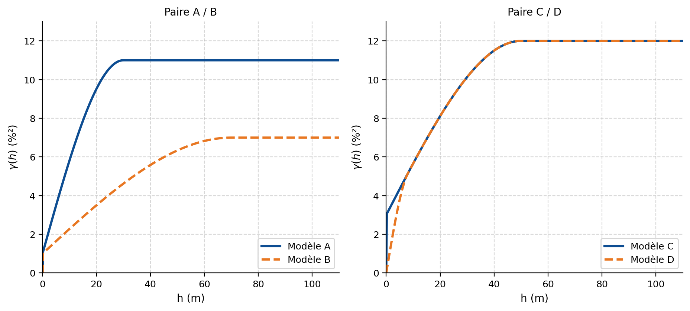
Question de raisonnement comparatif : on juge, sans calcul détaillé, si chaque quantité (variance de bloc, variance de dispersion, variance d’estimation, etc.) est sensible ou non à la différence entre les deux modèles.
Principes directeurs pour répondre :
- La variance de bloc \(\sigma_V^2\) et la variance ponctuelle dans le bloc dépendent surtout du comportement du variogramme aux courtes distances (effet de pépite, pente à l’origine, portée). Deux modèles qui diffèrent à courte distance donnent des résultats différents (N) pour ces quantités.
- Les quantités gouvernées par le palier total (variance ponctuelle globale \(\sigma^2\), ou dispersion d’un point dans un très grand volume) sont semblables (O) dès que les deux modèles ont le même palier, même si leur structure interne diffère.
- La variance de dispersion \(D^2(v \mid V) = \sigma_v^2 - \sigma_V^2\), étant une différence, peut filtrer ce qui est commun aux deux modèles : son comportement dépend de la dimension relative des supports \(v\) et \(V\) par rapport aux portées.
a) Modèles A et B (tableau 1) :
| Élément | Semblable (O) ou Non (N) | |
|---|---|---|
| a) | Variance de la teneur d’un bloc \(10 \times 10\) | N |
| b) | Variance de dispersion d’un bloc \(5 \times 5\) dans un bloc \(20 \times 20\) | O |
| c) | Variance d’un KO ponctuel, toutes distances \(< 10\,\text{m}\) | O |
| d) | Variance de dispersion des valeurs ponctuelles dans un bloc \(20 \times 20\) | O |
| e) | Variance de la teneur d’un bloc \(100 \times 100\) | N |
| f) | Variance de dispersion d’un bloc \(5 \times 5\) dans un bloc \(100 \times 100\) | N |
| g) | Variance de KO, toutes distances \(> 40\,\text{m}\) | N |
| h) | Variance de dispersion des valeurs ponctuelles dans un bloc \(100 \times 100\) | N |
b) Modèles C et D (tableau 2) :
| Élément | Semblable (O) ou Non (N) | |
|---|---|---|
| a) | Variance de la teneur d’un bloc \(10 \times 10\) | N |
| b) | Variance de dispersion d’un bloc \(5 \times 5\) dans un bloc \(20 \times 20\) | N |
| c) | Variance d’un KO ponctuel, toutes distances \(< 10\,\text{m}\) | N |
| d) | Variance de dispersion des valeurs ponctuelles dans un bloc \(20 \times 20\) | N |
| e) | Variance de la teneur d’un bloc \(100 \times 100\) | O |
| f) | Variance de dispersion d’un bloc \(5 \times 5\) dans un bloc \(100 \times 100\) | N |
| g) | Variance de KO, toutes distances \(> 40\,\text{m}\) | O |
| h) | Variance de dispersion des valeurs ponctuelles dans un bloc \(100 \times 100\) | N |
(Correction : \(-1\) point par mauvaise réponse dans la grille originale.)
Exercice 8 — Variance d’estimation et effet de support (30 forages)
Note : cet exercice porte sur la variance d’estimation ; il se situe à la frontière des chapitres 8 et 9 — voir le lien avec le chapitre 9 (krigeage).
Une zone d’un gisement 3D d’or est délimitée à partir de 30 forages verticaux de \(120\,\text{m}\) de long chacun. Les forages sont disposés sur une grille régulière, espacés de \(50\,\text{m}\) dans les directions \(x\) et \(y\). Les carottes de \(4\,\text{m}\), analysées en continu sur toute la longueur du forage, ont permis d’identifier un modèle de variogramme sphérique avec \(C_0 = 25\,\text{ppm}^2\), \(C_1 = 75\,\text{ppm}^2\), présentant une anisotropie géométrique avec une portée horizontale \(a_h = 100\,\text{m}\) et une portée verticale \(a_v = 60\,\text{m}\). On considère le modèle isotrope dans le plan horizontal \((x, y)\).
Quelle est la variance d’estimation de la teneur moyenne en or pour l’ensemble de la zone couverte par les 30 forages ?
Les valeurs se lisent sur les abaques de variance de bloc, de dispersion et d’estimation donnés à l’annexe D (« Abaques »).
On a 30 parallélépipèdes de \(120\,\text{m}\) de long \(\times\,50\,\text{m} \times 50\,\text{m}\), chacun estimé par son forage central. On utilise l’abaque 3D de la variance d’estimation. Chaque forage contient \(n = 120 / 4 = 30\) carottes.
Pour un bloc (un forage), la variance d’estimation combine la part pépite (réduite par le nombre \(n\) de carottes) et la part structurée lue à l’abaque : \[\sigma_{e_1}^2 = \frac{C_0}{n} + C_1\,E\!\left(\frac{50}{100},\,\frac{120}{60}\right) = \frac{25}{30} + 75 \times 0{,}025 = 2{,}708\,\text{ppm}^2,\] avec la valeur d’abaque \(E(50/100,\,120/60) = 0{,}025\).
Pour l’ensemble des 30 forages, comme ils sont disposés régulièrement et estiment des zones de même taille, la variance d’estimation globale est divisée par le nombre de forages : \[\sigma_e^2 = \frac{\sigma_{e_1}^2}{30} = \frac{2{,}708}{30} = 0{,}0902\,\text{ppm}^2.\]
Exercice 9 — Variance d’estimation de la teneur moyenne et combinaison d’erreurs élémentaires
Note : cet exercice porte sur la variance d’estimation ; il se situe à la frontière des chapitres 8 et 9 — voir le lien avec le chapitre 9 (krigeage).
La figure ci-dessous montre l’emplacement des échantillons dans une portion d’une mine de zinc. On distingue quatre zones correspondant à quatre patrons d’échantillonnage différents. Pour les zones nord-ouest et sud-est, on peut considérer que l’échantillonnage est aléatoire stratifié avec un échantillon par cellule. Les teneurs (% Zn) sont mesurées sur des épaisseurs constantes de \(5\,\text{m}\) (épaisseur des bancs) et servent à calculer le variogramme 2D des teneurs en Zn.
Quelle est la variance d’estimation de la teneur moyenne en Zn pour l’ensemble de la zone, si le variogramme est sphérique isotrope avec \(C_0 = 6\,\text{\%}^2\), \(C_1 = 30\,\text{\%}^2\) et \(a = 80\,\text{m}\) ? Répondez en combinant les erreurs élémentaires des quatre zones.
Les caractéristiques des quatre zones et de leurs patrons d’échantillonnage sont :
| Zone | Nombre de forages | Taille des blocs | Type de grille | Surface de la zone |
|---|---|---|---|---|
| 1 – NO | \(5 \times 5 = 25\) | \(20 \times 40\) | Aléatoire | \(100 \times 200 = 20\,000\) |
| 2 – NE | \(10 \times 10 = 100\) | \(20 \times 20\) | Stratifiée | \(200 \times 200 = 40\,000\) |
| 3 – SO | \(5 \times 5 = 25\) | \(20 \times 20\) | Stratifiée | \(100 \times 100 = 10\,000\) |
| 4 – SE | \(20 \times 5 = 100\) | \(10 \times 20\) | Aléatoire | \(200 \times 100 = 20\,000\) |
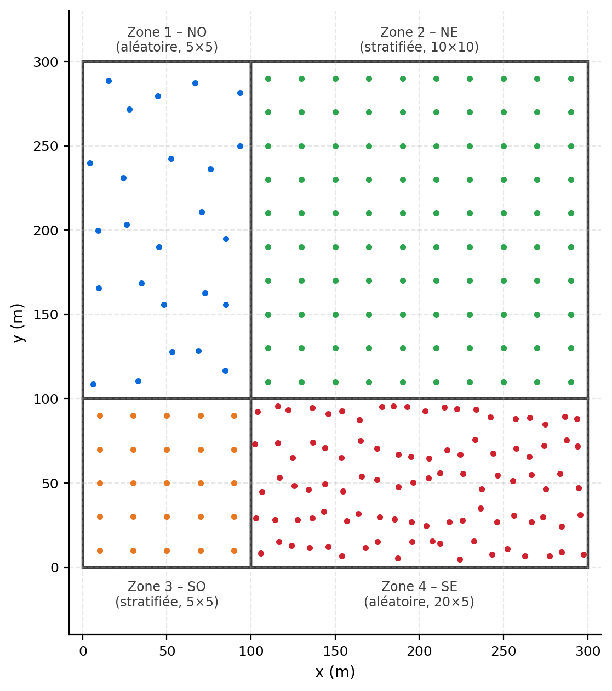
Le principe est celui de la combinaison d’erreurs élémentaires : on estime séparément la teneur moyenne de chaque zone \(i\) (chacune avec sa propre variance d’estimation élémentaire \(\sigma_{e_i}^2\) obtenue par abaque selon son patron d’échantillonnage), puis on combine ces erreurs en pondérant par le carré de la surface relative de chaque zone, les zones étant supposées indépendantes : \[\sigma_e^2 = \frac{1}{S^2}\sum_{i} S_i^2\,\sigma_{e_i}^2,\] où \(S_i\) est la surface de la zone \(i\) et \(S = \sum_i S_i\) la surface totale.
Pour chaque zone, la variance d’estimation élémentaire \(\sigma_{e_i}^2\) se lit à l’abaque approprié au patron correspondant (abaque \(E\) pour les grilles aléatoires des zones NO et SE, abaque \(F\) pour les grilles stratifiées NE et SO), à partir des rapports dimension/portée (\(a = 80\,\text{m}\)) et du palier \(C_0 + C_1 = 36\,\text{\%}^2\) :
| Zone | Type de grille | Calcul de \(\sigma_{e_i}^2\) (palier divisé par le nombre de forages) |
|---|---|---|
| 1 – NO | Aléatoire | \(6 + 30\,E\!\left(\tfrac{20}{80}, \tfrac{40}{80}\right) = 6 + 30 \times 0{,}145 = 10{,}35\) ; puis \(10{,}35 / 25 = 0{,}4940\) |
| 2 – NE | Stratifiée | \(6 + 30\,F\!\left(\tfrac{20}{80}, \tfrac{20}{80}\right) = 6 + 30 \times 0{,}17 = 11{,}1\) ; puis \(11{,}1 / 100 = 0{,}111\) |
| 3 – SO | Stratifiée | \(6 + 30\,F\!\left(\tfrac{20}{80}, \tfrac{20}{80}\right) = 6 + 30 \times 0{,}17 = 11{,}1\) ; puis \(11{,}1 / 25 = 0{,}444\) |
| 4 – SE | Aléatoire | \(6 + 30\,E\!\left(\tfrac{10}{80}, \tfrac{20}{80}\right) = 6 + 30 \times 0{,}07 = 8{,}1\) ; puis \(8{,}1 / 100 = 0{,}081\) |
On agrège enfin par la formule de pondération par le carré des surfaces : \[\sigma_e^2 = \frac{20\,000^2 (0{,}4940) + 40\,000^2 (0{,}111) + 10\,000^2 (0{,}444) + 20\,000^2 (0{,}081)}{(300 \times 300)^2} = 0{,}0521\,\text{\%}^2.\]
14.9 Krigeage
Exercice 1 — Systèmes de krigeage simple et ordinaire en 1D
Dans un problème 1D, on estime le point \(\mathbf{x}_0\) à l’aide des points \(\mathbf{x}_1\) et \(\mathbf{x}_2\). Le tableau suivant donne les coordonnées de ces points.
| Point | Coordonnée \(x\) |
|---|---|
| \(\mathbf{x}_0\) | \(0\) |
| \(\mathbf{x}_1\) | \(-6\) |
| \(\mathbf{x}_2\) | \(4\) |
Le modèle de covariance est gaussien : \[ C(h) = 5\,\delta(h) + 10\,\exp\!\left(-\frac{3h^2}{10^2}\right), \] où \(\delta(h)\) vaut \(1\) si \(h = 0\) et \(0\) sinon.
Construisez le système de krigeage simple correspondant.
On résout le système et on trouve les poids \(\lambda_1 = 0.213\) et \(\lambda_2 = 0.406\). Que valent la valeur estimée et la variance de krigeage si la moyenne connue est \(m = 3\), avec \(Z_1 = 4\) et \(Z_2 = 5\) ?
Construisez le système de krigeage ordinaire.
On trouve comme solution \(\lambda_1 = 0.404\), \(\lambda_2 = 0.596\) et \(\nu = -2.957\). Que valent la valeur estimée et la variance de krigeage si \(Z_1 = 4\) et \(Z_2 = 5\) ?
On a besoin des covariances. Avec \(|\mathbf{x}_1 - \mathbf{x}_2| = 10\), \(|\mathbf{x}_1 - \mathbf{x}_0| = 6\) et \(|\mathbf{x}_2 - \mathbf{x}_0| = 4\) : \[ C(\mathbf{x}_1 - \mathbf{x}_2) = 10\,e^{-3\cdot 100/100} = 0.498,\quad C(\mathbf{x}_1 - \mathbf{x}_0) = 10\,e^{-3\cdot 36/100} = 3.396,\quad C(\mathbf{x}_2 - \mathbf{x}_0) = 10\,e^{-3\cdot 16/100} = 6.188. \] Sur la diagonale, \(C(\mathbf{0}) = 5 + 10 = 15\).
Système de krigeage simple \(\mathbf{C}\,\boldsymbol{\lambda} = \mathbf{c}\) : \[ \begin{bmatrix} 15 & 0.498 \\ 0.498 & 15 \end{bmatrix} \begin{bmatrix} \lambda_1 \\ \lambda_2 \end{bmatrix} = \begin{bmatrix} 3.396 \\ 6.188 \end{bmatrix}. \]
Estimateur de krigeage simple (la moyenne est connue) : \[ Z^*(\mathbf{x}_0) = m + \lambda_1 (Z_1 - m) + \lambda_2 (Z_2 - m) = 3 + 0.213(4-3) + 0.406(5-3) = 4.02. \] \[ \sigma_{SK}^2 = C(\mathbf{0}) - \lambda_1 C(\mathbf{x}_1 - \mathbf{x}_0) - \lambda_2 C(\mathbf{x}_2 - \mathbf{x}_0) = 15 - 0.213(3.396) - 0.406(6.188) = 11.77. \]
Système de krigeage ordinaire (avec la contrainte \(\sum \lambda_i = 1\) et le multiplicateur \(\nu\)) : \[ \begin{bmatrix} 15 & 0.498 & 1 \\ 0.498 & 15 & 1 \\ 1 & 1 & 0 \end{bmatrix} \begin{bmatrix} \lambda_1 \\ \lambda_2 \\ \nu \end{bmatrix} = \begin{bmatrix} 3.396 \\ 6.188 \\ 1 \end{bmatrix}. \]
Estimateur de krigeage ordinaire : \[ Z^*(\mathbf{x}_0) = 0.404(4) + 0.596(5) = 4.60. \] \[ \sigma_{OK}^2 = C(\mathbf{0}) - \lambda_1 C(\mathbf{x}_1 - \mathbf{x}_0) - \lambda_2 C(\mathbf{x}_2 - \mathbf{x}_0) - \nu = 15 - 0.404(3.396) - 0.596(6.188) - (-2.957) = 12.90. \] Le terme \(-\nu = +2.957\) traduit le surcoût de variance dû à l’ignorance de la moyenne.
Exercice 2 — Particularités du krigeage : singularité, valeurs négatives, voisinage
Une erreur de saisie dans une base de données fait que deux données différentes se retrouvent avec exactement les mêmes coordonnées. Que se passe-t-il lors des krigeages dont le voisinage de recherche inclut ces deux données ? (Aide : ce n’est pas dans les notes de cours.)
Est-il possible qu’un krigeage retourne une teneur estimée négative même si toutes les teneurs mesurées sont (évidemment) positives ? Justifiez.
Est-il possible que le krigeage retourne une teneur estimée supérieure à la plus grande teneur observée dans les données ? Justifiez.
Est-il possible d’avoir une variance de krigeage ordinaire supérieure à la variance de la variable aléatoire que l’on cherche à estimer ? Justifiez.
Commentez : « on ne peut calculer la variance d’estimation que si l’estimation a été obtenue par krigeage (ordinaire ou simple) ».
Commentez : « le choix du voisinage utilisé pour le krigeage peut être davantage important que le choix du modèle de variogramme pour assurer la qualité des estimations du krigeage ».
La matrice de krigeage contient alors deux lignes et deux colonnes identiques : elle est singulière (non inversible) et il n’est pas possible de résoudre le système d’équations.
Oui. Comme le krigeage peut produire des poids négatifs, un poids négatif associé à une valeur positive (les autres poids étant associés à des valeurs nulles ou faibles) peut donner un résultat négatif.
Oui, pour la même raison. Par exemple, avec deux poids \(-0.02\) et \(1.02\) : si le poids \(-0.02\) est associé à une donnée de valeur \(0\), l’estimé dépasse la valeur associée au poids \(1.02\).
Oui. La limite théorique pour le krigeage ordinaire est \(2(C_0 + C)\).
Faux. Dès que l’on connaît le variogramme, on peut calculer la variance d’estimation de tout estimateur linéaire, qu’il provienne du krigeage ou non.
Oui. Les résultats du krigeage sont relativement robustes au choix du modèle de variogramme. En revanche, un mauvais choix de voisinage peut mener à des valeurs estimées irréalistes et à des cartes comportant des artéfacts. Il est donc important de choisir le voisinage avec soin.
Exercice 3 — Peut-on avoir tous les poids nuls ?
Dans un krigeage ponctuel :
Est-il possible d’avoir les poids \(\lambda_i\), \(i = 1,\dots,n\), de krigeage simple tous égaux à zéro ? Si oui, dans quelle situation ? Si non, pourquoi ?
Est-il possible d’avoir les poids \(\lambda_i\), \(i = 1,\dots,n\), de krigeage ordinaire tous égaux à zéro ? Si oui, dans quelle situation ? Si non, pourquoi ?
Oui, si tous les points disponibles sont à une distance supérieure à la portée du point à estimer (indépendamment de la distance des points entre eux). Toutes les covariances point–point avec \(\mathbf{x}_0\) sont alors nulles, et le krigeage simple ramène l’estimateur à la moyenne \(m\).
Non. La contrainte \(\sum_i \lambda_i = 1\) l’empêche : les poids ne peuvent pas tous être nuls.
Exercice 4 — Profils de krigeage et modèles de variogramme
On présente six profils obtenus par krigeage ordinaire avec des modèles différents, en utilisant les observations indiquées par des \(\Delta\).
- Associez à chaque modèle de variogramme le profil de krigeage correspondant (A à F).
| Modèle | Figure |
|---|---|
| Sphérique, \(C_0/C = 0\), \(a = 50\) | |
| Sphérique, \(C_0/C = 0.1\), \(a = 50\) | |
| Sphérique, \(C_0/C = 1.0\), \(a = 50\) | |
| Gaussien, \(C_0/C = 0\), \(a_\text{effectif} = 50\) | |
| Gaussien, \(C_0/C = 0.1\), \(a_\text{effectif} = 50\) | |
| Gaussien, \(C_0/C = 1.0\), \(a_\text{effectif} = 50\) |
- À la question précédente, seul le ratio \(C_0/C\) est fourni au lieu des valeurs séparées de \(C_0\) et \(C\). Qu’est-ce qui change dans le krigeage si le ratio \(C_0/C = 1\) est obtenu avec \(C_0 = 10\), \(C = 10\) plutôt qu’avec \(C_0 = 5\), \(C = 5\) ?
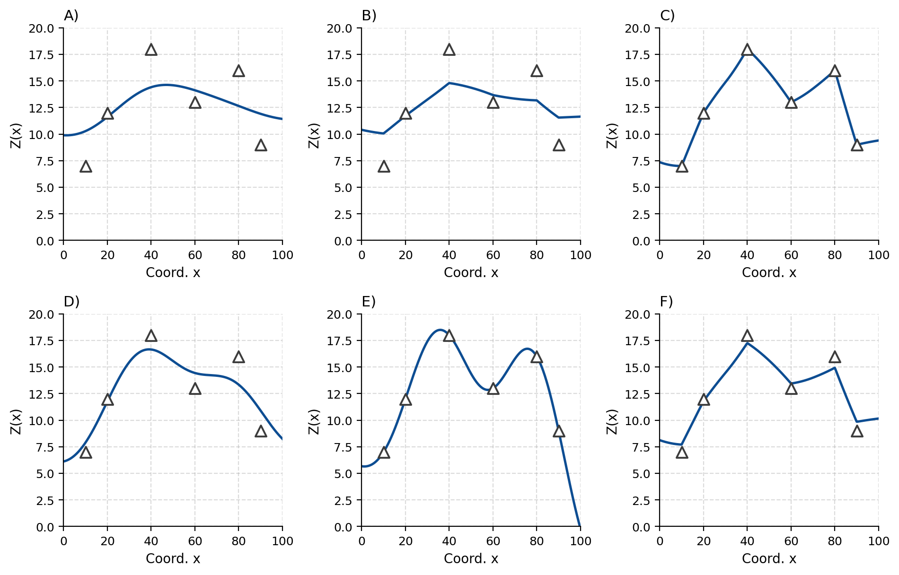
- Association des modèles aux profils :
| Modèle | Figure |
|---|---|
| Sphérique, \(C_0/C = 0\), \(a = 50\) | C |
| Sphérique, \(C_0/C = 0.1\), \(a = 50\) | F |
| Sphérique, \(C_0/C = 1.0\), \(a = 50\) | B |
| Gaussien, \(C_0/C = 0\), \(a_\text{effectif} = 50\) | E |
| Gaussien, \(C_0/C = 0.1\), \(a_\text{effectif} = 50\) | D |
| Gaussien, \(C_0/C = 1.0\), \(a_\text{effectif} = 50\) | A |
- Les estimés demeurent inchangés (les poids ne dépendent que des covariances relatives). En revanche, la variance de krigeage serait \(2\) fois plus grande avec \(C_0 = 10\), \(C = 10\) qu’avec \(C_0 = 5\), \(C = 5\) (le palier total double, donc la variance double aussi).
Exercice 5 — Système de krigeage ordinaire en 2D (Fe, sphérique isotrope)
Note : la covariance de ces données (plan de localisation \(\mathbf{x}_0\)–\(\mathbf{x}_4\)) est traitée à l’exercice correspondant du ch. 7 ; ici on construit le système de krigeage complet.
Le diagramme suivant montre l’emplacement de quatre données (\(\mathbf{x}_1\) à \(\mathbf{x}_4\)) où l’on a mesuré la teneur en Fe. On désire effectuer un krigeage ordinaire au point \(\mathbf{x}_0\) situé en \((0, 0)\). Le variogramme est sphérique et isotrope, de portée \(30\ \text{m}\), d’effet de pépite \(C_0 = 5\ \%^2\) et de palier structuré \(C = 50\ \%^2\) (palier total \(55\ \%^2\)).
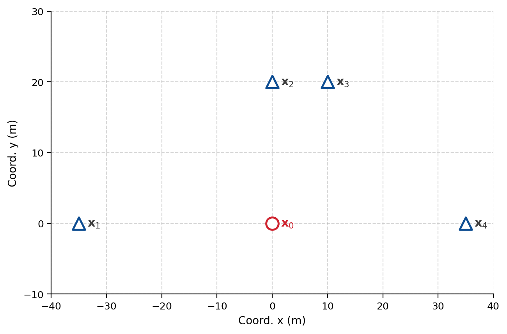
Fournissez, sous forme matricielle, les équations du krigeage ordinaire du point \(\mathbf{x}_0\) avec les points \(\mathbf{x}_1\) à \(\mathbf{x}_4\). Ne résolvez pas ce système.
Quelle serait la covariance entre les teneurs aux points \(\mathbf{x}_3\) et \(\mathbf{x}_0\) si l’on avait plutôt un modèle sphérique anisotrope avec \(a_x = 30\ \text{m}\) et \(a_y = 50\ \text{m}\) (\(C_0\) et \(C\) inchangés) ?
Si l’on effectuait l’estimation uniquement avec le point \(\mathbf{x}_4\), quelle serait la variance de krigeage obtenue ?
Le système \(\mathbf{K}\,\boldsymbol{\lambda}^+ = \mathbf{k}_0\) s’écrit \[ \mathbf{K} = \begin{bmatrix} 55 & 0 & 0 & 0 & 1 \\ 0 & 55 & 25.93 & 0 & 1 \\ 0 & 25.93 & 55 & 0 & 1 \\ 0 & 0 & 0 & 55 & 1 \\ 1 & 1 & 1 & 1 & 0 \end{bmatrix}, \qquad \mathbf{k}_0 = \begin{bmatrix} 0 \\ 7.41 \\ 4.45 \\ 0 \\ 1 \end{bmatrix}, \] les inconnues étant \(\boldsymbol{\lambda}^+ = (\lambda_1, \lambda_2, \lambda_3, \lambda_4, \nu)^\top\). (Les covariances nulles correspondent à des distances supérieures à la portée de \(30\ \text{m}\).)
Avec le modèle anisotrope, la distance entre \(\mathbf{x}_3\) et \(\mathbf{x}_0\) est \(\sqrt{100 + 400} = 22.36\ \text{m}\). L’angle de la direction avec l’axe des \(y\) est \(\arctan(10/20) = 26.6^\circ\). La portée dans cette direction vaut \[ a = \frac{50 \times 30}{\sqrt{50^2 \sin^2(26.6^\circ) + 30^2 \cos^2(26.6^\circ)}} = 42.9\ \text{m}, \] d’où \[ C(h) = 50\left[1 - 1.5\frac{22.36}{42.9} + 0.5\left(\frac{22.36}{42.9}\right)^3\right] = 14.5\ \%^2. \]
Avec le seul point \(\mathbf{x}_4\), la covariance \(C(\mathbf{x}_4 - \mathbf{x}_0)\) est nulle (distance \(>\) portée), donc le poids vaut \(1\) et la variance de krigeage ordinaire est \[ \sigma_{OK}^2 = 2(C_0 + C) = 2 \times 55 = 110\ \%^2. \]
Exercice 6 — Impact du modèle de variogramme sur les profils de krigeage 1D
Le tableau suivant présente \(8\) modèles de variogramme. La figure associée présente les résultats d’un krigeage 1D effectué à partir des mêmes points d’échantillon et de chacun des modèles. Les figures de gauche présentent la valeur estimée par krigeage ordinaire en fonction de la coordonnée \(x\) ; les figures de droite présentent la variance de ce krigeage en fonction de \(x\).
| Modèle \(\#\) | Description |
|---|---|
| 1 | Sphérique, \(a = 120\), \(C = 50\) |
| 2 | Sphérique, \(a = 20\), \(C = 20\) |
| 3 | Sphérique, \(a = 120\), \(C_0 = 10\), \(C = 10\) |
| 4 | Gaussien, \(a_\text{effectif} = 120\), \(C = 50\) |
| 5 | Gaussien, \(a_\text{effectif} = 120\), \(C_0 = 10\), \(C = 40\) |
| 6 | Gaussien, \(a_\text{effectif} = 20\), \(C = 50\) |
| 7 | Effet de pépite pur, \(C_0 = 20\) |
| 8 | Effet de pépite pur, \(C_0 = 50\) |
Associez une figure (de A à H) à chacun des modèles du tableau.
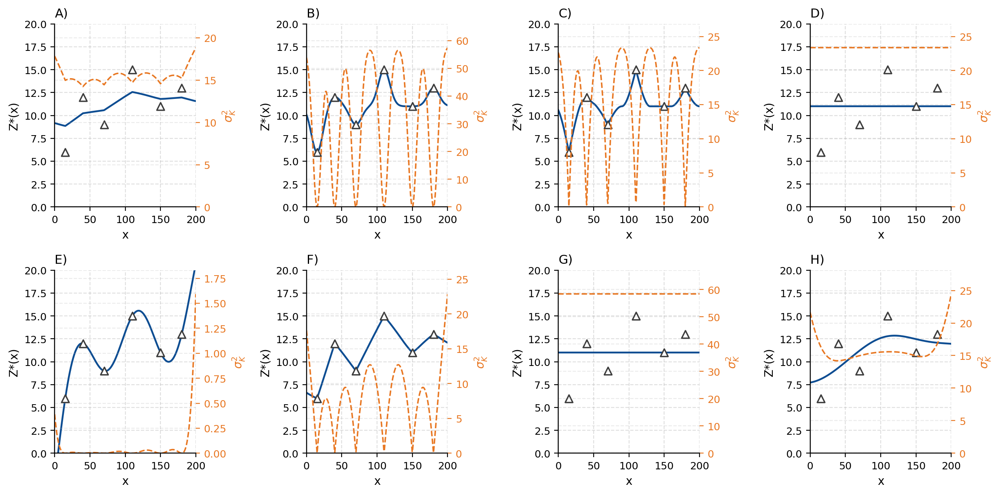
L’association repose sur les comportements caractéristiques :
- un effet de pépite élevé donne des estimés peu lissés (sauts aux données) et une variance qui ne retombe pas à zéro entre les données ;
- un modèle gaussien (continuité parabolique à l’origine) donne des profils très lisses ;
- une portée plus grande étale l’influence des données et abaisse la variance entre celles-ci.
En appariant chaque modèle au couple (profil estimé, profil de variance) compatible avec ces propriétés, on obtient :
| Modèle \(\#\) | Description | Figure associée |
|---|---|---|
| 1 | Sphérique, \(a = 120\), \(C = 50\) | F |
| 2 | Sphérique, \(a = 20\), \(C = 20\) | C |
| 3 | Sphérique, \(a = 120\), \(C_0 = 10\), \(C = 10\) | A |
| 4 | Gaussien, \(a_\text{effectif} = 120\), \(C = 50\) | E |
| 5 | Gaussien, \(a_\text{effectif} = 120\), \(C_0 = 10\), \(C = 40\) | H |
| 6 | Gaussien, \(a_\text{effectif} = 20\), \(C = 50\) | B |
| 7 | Effet de pépite pur, \(C_0 = 20\) | D |
| 8 | Effet de pépite pur, \(C_0 = 50\) | G |
(L’appariement repose sur la figure des profils (Figure 14.30) ; les associations ci-dessus sont celles du corrigé.)
Exercice 7 — Variogramme expérimental des valeurs krigées
Vous faites le krigeage d’une variable échantillonnée en quelques points, avec un modèle de variogramme A. Le krigeage porte sur une grille très fine couvrant un large domaine. Vous calculez ensuite le variogramme expérimental des valeurs krigées.
Doit-on s’attendre à ce que ce variogramme expérimental soit nécessairement proche du modèle A ? Justifiez à l’aide des propriétés du krigeage.
Est-on réellement justifié de calculer un variogramme sur des données krigées ? Pourquoi ?
- Non. La carte krigée est normalement plus lisse que les vraies valeurs. Comme \(\operatorname{Var}(Z^*) < \operatorname{Var}(Z)\) et que le palier du variogramme correspond à \(\operatorname{Var}(Z)\), on ne peut pas retrouver le modèle A. En particulier :
- les valeurs krigées montrent peu ou pas d’effet de pépite, même si les données en présentent un fort (le variogramme des valeurs krigées peut même afficher un comportement parabolique à l’origine, alors que les données avaient un comportement linéaire) ;
- la portée apparente tend à être supérieure, à cause des corrélations de proche en proche introduites par l’interpolation.
- Théoriquement, \(\operatorname{Var}\!\big(Z^*(\mathbf{x})\big)\) varie selon la localisation (elle dépend de la position du point estimé par rapport aux données). L’idée même de calculer un variogramme sur des données krigées repose donc sur une hypothèse de stationnarité qui n’est pas satisfaite : c’est en soi une hérésie statistique.
Exercice 8 — Variance d’estimation de la teneur moyenne globale (3 zones)
Note : exercice en lien avec la variance d’estimation (ch. 8).
Un gisement tabulaire de Cu, d’épaisseur quasi-constante, comporte \(3\) zones ayant des variogrammes différents et ayant été krigées séparément. On a obtenu :
| Zone | Forages utilisés | Surface | Variance de krigeage de la zone |
|---|---|---|---|
| A | \(23\) | \(20\,700\ \text{m}^2\) | \(0.09\ \%^2\) |
| B | \(37\) | \(33\,300\ \text{m}^2\) | \(0.11\ \%^2\) |
| C | \(34\) | \(29\,700\ \text{m}^2\) | \(0.24\ \%^2\) |
Quelle est la variance d’estimation de la teneur en Cu moyenne pour l’ensemble du gisement ?
Les zones étant krigées indépendamment, on combine les variances en pondérant par le carré des surfaces : \[ \sigma^2_\text{global} = \frac{S_A^2\,\sigma_A^2 + S_B^2\,\sigma_B^2 + S_C^2\,\sigma_C^2}{(S_A + S_B + S_C)^2}. \] \[ \sigma^2_\text{global} = \frac{20\,700^2 (0.09) + 33\,300^2 (0.11) + 29\,700^2 (0.24)}{(20\,700 + 33\,300 + 29\,700)^2} = 0.053\ \%^2. \]
Exercice 9 — Compléter un système de krigeage ordinaire (Au, anisotropie, azimut 30°)
Un gisement d’or 2D montre un variogramme sphérique avec anisotropie géométrique. La direction (azimut) de meilleure continuité spatiale est \(30^\circ\). Les paramètres sont \(C_0 = 10\ \text{ppm}^2\), \(C = 20\ \text{ppm}^2\), \(a_{30} = 50\ \text{m}\), \(a_{120} = 25\ \text{m}\).
On désire effectuer le krigeage de la teneur au point \((100, 100)\). On retrouve dans le voisinage immédiat les données suivantes :
| Obs. \(\#\) | \(x\) (m) | \(y\) (m) | Teneur (ppm) |
|---|---|---|---|
| 1 | \(80\) | \(90\) | \(10\) |
| 2 | \(95\) | \(105\) | \(4\) |
| 3 | \(103\) | \(104\) | \(7\) |
| 4 | \(107\) | \(92\) | \(3\) |
Le système de krigeage ordinaire est construit en plaçant les observations \(1\) à \(4\) dans l’ordre : \[ \begin{bmatrix} 30 & A & 2.43 & 0.09 & D \\ B & C & 11.17 & 2.68 & 1 \\ 2.43 & 11.17 & 30 & 8.29 & 1 \\ 0.09 & 2.68 & 8.29 & 30 & 1 \\ 1 & 1 & 1 & 1 & E \end{bmatrix} \begin{bmatrix} \lambda_1 \\ \lambda_2 \\ \lambda_3 \\ \lambda_4 \\ \nu \end{bmatrix} = \begin{bmatrix} 13.82 \\ 11.94 \\ 16.95 \\ 8.43 \\ 1 \end{bmatrix}. \]
où \(D\) désigne un terme de la colonne de contrainte et \(E\) le coin inférieur droit de la matrice.
Que valent les entrées \(A\) à \(E\) ?
Quels liens existeraient entre l’estimé et la variance de krigeage du modèle ci-dessus et ceux obtenus avec le modèle suivant : sphérique avec \(C_0 = 12\ \text{ppm}^2\), \(C = 24\ \text{ppm}^2\), \(a_{30} = 50\ \text{m}\), \(a_{120} = 25\ \text{m}\) ?
On vous informe que la \(2^\text{e}\) donnée (et seulement celle-ci) a été obtenue suivant une procédure d’analyse moins précise, qui ajoute une erreur indépendante de variance \(3\ \text{ppm}^2\) au résultat. Comment modifieriez-vous le système ?
On calcule \(C(\mathbf{x}_1 - \mathbf{x}_2)\). L’azimut entre \(\mathbf{x}_1\) et \(\mathbf{x}_2\) est \(\arctan\!\big((95-80)/(105-90)\big) = 45^\circ\). L’angle avec la direction de meilleure continuité est \(45 - 30 = 15^\circ\). La portée dans la direction \(45^\circ\) vaut \[ a_{45} = \frac{50 \times 25}{\sqrt{25^2\cos^2(15^\circ) + 50^2\sin^2(15^\circ)}} = 45.62\ \text{m}. \] La distance entre les deux points est \(\sqrt{15^2 + 15^2} = 21.2\ \text{m}\), d’où \[ C(h) = 20\left[1 - 1.5\frac{21.2}{45.62} + 0.5\left(\frac{21.2}{45.62}\right)^3\right] = 7.06\ \text{ppm}^2. \] Ainsi \(A = B = 7.06\ \text{ppm}^2\), \(C = 30\ \text{ppm}^2\) (palier total \(C_0 + C\) sur la diagonale), le terme de contrainte \(D = 1\) et le coin inférieur droit \(E = 0\).
Le second modèle est proportionnel au premier (ratio \(1.2\) pour \(C_0\) et \(C\)). On obtient donc exactement le même estimé, et la variance de krigeage est \(1.2\) fois celle du premier modèle.
On ajoute la variance de l’erreur d’analyse uniquement sur le terme diagonal de la \(2^\text{e}\) donnée : \(C\) passe de \(30\) à \(30 + 3 = 33\ \text{ppm}^2\). Le reste du système est inchangé.
Exercice 10 — Compléter un système de krigeage ordinaire (Au, anisotropie, azimut 40°)
Un gisement d’or 2D montre un variogramme sphérique avec anisotropie géométrique. La direction (azimut) de meilleure continuité est \(40^\circ\). Les paramètres sont \(C_0 = 2\ \text{ppm}^2\), \(C = 30\ \text{ppm}^2\), \(a_{40} = 60\ \text{m}\), \(a_{130} = 40\ \text{m}\).
On désire effectuer le krigeage de la teneur au point \((100, 100)\). Données du voisinage :
| Obs. \(\#\) | \(x\) (m) | \(y\) (m) | Teneur (ppm) |
|---|---|---|---|
| 1 | \(100\) | \(90\) | \(10\) |
| 2 | \(91\) | \(104\) | \(4\) |
| 3 | \(110\) | \(110\) | \(7\) |
| 4 | \(107\) | \(93\) | \(3\) |
Le système de krigeage ordinaire (observations \(1\) à \(4\) dans l’ordre) : \[ \begin{bmatrix} C & A & 13.53 & 23.65 & D \\ B & C & 13.44 & 9.91 & 1 \\ 13.53 & 13.44 & C & 8.29 & 1 \\ F & 9.91 & 8.29 & C & 1 \\ 1 & 1 & 1 & 1 & E \end{bmatrix} \begin{bmatrix} \lambda_1 \\ \lambda_2 \\ \lambda_3 \\ \lambda_4 \\ \nu \end{bmatrix} = \begin{bmatrix} 20.89 \\ 19.37 \\ 19.54 \\ 19.11 \\ 1 \end{bmatrix}. \]
où \(D\) désigne un terme de la colonne de contrainte et \(E\) le coin inférieur droit de la matrice.
Que valent les entrées \(A\) à \(F\) ?
Quels liens existeraient entre l’estimé et la variance de krigeage du modèle ci-dessus et ceux obtenus avec le modèle suivant : sphérique avec \(C_0 = 4\ \text{ppm}^2\), \(C = 60\ \text{ppm}^2\), \(a_{40} = 60\ \text{m}\), \(a_{130} = 40\ \text{m}\) ?
On vous informe que la \(2^\text{e}\) donnée (et seulement celle-ci) a été obtenue suivant une procédure d’analyse moins précise, ajoutant une erreur indépendante de variance \(3\ \text{ppm}^2\). Comment modifieriez-vous le système ?
On calcule \(A = C(\mathbf{x}_1 - \mathbf{x}_2)\). L’azimut entre les observations \(1\) et \(2\) est \(\arctan(-9/14) = -32.73^\circ\). L’angle avec la direction de plus grande portée est \(40 + 32.73 = 72.73^\circ\). La portée dans cette direction vaut \[ a = \frac{60 \times 40}{\sqrt{40^2\cos^2(72.73^\circ) + 60^2\sin^2(72.73^\circ)}} = 41\ \text{m}. \] La distance entre les deux points est \(\sqrt{9^2 + 14^2} = 16.64\ \text{m}\), d’où \[ C(h) = 30\left[1 - 1.5\frac{16.64}{41} + 0.5\left(\frac{16.64}{41}\right)^3\right] = 12.74\ \text{ppm}^2. \] Par symétrie \(B = A = 12.74\ \text{ppm}^2\). Sur la diagonale, \(C = 32\ \text{ppm}^2\) (palier total \(C_0 + C\)). Le terme de contrainte \(D = 1\) et le coin inférieur droit \(E = 0\). Enfin \(F = 23.65\ \text{ppm}^2\) par symétrie avec le terme \((1,4)\).
Le second modèle est proportionnel au premier (ratio \(2\) pour \(C_0\) et \(C\)). L’estimé est identique et la variance de krigeage est doublée.
On ajoute \(3\ \text{ppm}^2\) au terme diagonal de la \(2^\text{e}\) donnée : ce terme passe de \(32\) à \(35\ \text{ppm}^2\). Le reste du système est inchangé.
Exercice 11 — Système de krigeage ordinaire matriciel (Zn, anisotropie géométrique)
Note : la covariance de ces données (points Zn \(\mathbf{x}_1\)–\(\mathbf{x}_3\)) est traitée à l’exercice correspondant du ch. 7 ; ici on construit le système de krigeage complet.
Un gisement de Zn présente un variogramme sphérique (2D) avec effet de pépite \(C_0 = 4\ \%^2\), \(C = 20\ \%^2\), et des portées décrites par une anisotropie géométrique d’axes principaux \(x\) et \(y\), avec \(a_x = 10\ \text{m}\) et \(a_y = 20\ \text{m}\). On désire estimer la teneur au point \(\mathbf{x}_0\) situé en \((0, 0)\) à partir des teneurs mesurées aux points \(\mathbf{x}_1\) à \(\mathbf{x}_3\), de coordonnées respectives \((-10, 0)\), \((0, 20)\) et \((5, 22)\). Les teneurs observées sont \(Z_1 = 2\ \%\), \(Z_2 = 3.3\ \%\) et \(Z_3 = 3\ \%\).
Fournissez, sous forme matricielle, les équations permettant d’obtenir les poids des points \(\mathbf{x}_1\) à \(\mathbf{x}_3\) garantissant une variance d’estimation (théorique) minimale. Ne résolvez pas ce système.
Avec le même objectif qu’en a), si l’on avait observé \(10\ \%\) Zn au point \(\mathbf{x}_3\) au lieu de \(3\ \%\), comment cela affecterait-il les poids obtenus en a) ?
Si au lieu de \(C_0 = 4\ \%^2\) et \(C = 20\ \%^2\) on avait \(C_0 = 8\ \%^2\) et \(C = 40\ \%^2\), comment cela affecterait-il les poids de krigeage et la variance de krigeage ?
- On calcule les covariances. Le palier total est \(C_0 + C = 24\ \%^2\) (diagonale).
- \(C(\mathbf{x}_1, \mathbf{x}_2) = 0\) car \(h_x = a_x\) (le long de \(x\), la distance atteint la portée).
- \(C(\mathbf{x}_1, \mathbf{x}_3) = 0\) car \(h_y > a_y\).
- \(C(\mathbf{x}_2, \mathbf{x}_3)\) : direction d’azimut \(\arctan\!\big((5-0)/(22-20)\big) = 68.2^\circ\). Portée dans cette direction : \[ a = \frac{20 \times 10}{\sqrt{(20\sin 68.2^\circ)^2 + (10\cos 68.2^\circ)^2}} = 10.56\ \text{m}, \] distance \(h = \sqrt{5^2 + 2^2} = 5.385\ \text{m}\), d’où \[ C(h) = 20\left[1 - 1.5\frac{5.385}{10.56} + 0.5\left(\frac{5.385}{10.56}\right)^3\right] = 6.03\ \%^2. \]
- \(C(\mathbf{x}_1, \mathbf{x}_0) = 0\) car \(h_x = a_x\) ; \(C(\mathbf{x}_2, \mathbf{x}_0) = 0\) car \(h_y = a_y\) ; \(C(\mathbf{x}_3, \mathbf{x}_0) = 0\) car \(h_y > a_y\).
Le système de krigeage ordinaire est donc \[ \begin{bmatrix} 24 & 0 & 0 & 1 \\ 0 & 24 & 6.03 & 1 \\ 0 & 6.03 & 24 & 1 \\ 1 & 1 & 1 & 0 \end{bmatrix} \begin{bmatrix} \lambda_1 \\ \lambda_2 \\ \lambda_3 \\ \nu \end{bmatrix} = \begin{bmatrix} 0 \\ 0 \\ 0 \\ 1 \end{bmatrix}. \]
Rien ne change : les poids du krigeage ordinaire ne dépendent pas des teneurs, mais seulement de la géométrie et du modèle de covariance.
Les poids du krigeage ordinaire demeurent inchangés (mêmes portées et même ratio \(C_0/C\)). En revanche, la variance de krigeage (et le multiplicateur \(\nu\)) est multipliée par \(2\).
Exercice 12 — Construire et résoudre un système de krigeage ordinaire (Au, azimut 0°)
Un gisement d’or 2D présente un variogramme sphérique avec anisotropie géométrique. La direction (azimut) de meilleure continuité spatiale est \(0^\circ\). Les paramètres sont \(C_0 = 2\ \text{ppm}^2\), \(C = 8\ \text{ppm}^2\), \(a_0 = 60\ \text{m}\), \(a_{90} = 30\ \text{m}\).
On souhaite kriger la teneur au point \((0, 0)\). Données du voisinage :
| Obs. \(\#\) | \(x\) (m) | \(y\) (m) | Teneur (ppm) |
|---|---|---|---|
| 1 | \(-10\) | \(-10\) | \(3.1\) |
| 2 | \(-5\) | \(10\) | \(2.5\) |
| 3 | \(10\) | \(-5\) | \(7.1\) |
| 4 | \(10\) | \(5\) | \(2.1\) |
Le système de krigeage ordinaire (observations \(1\) à \(4\) dans l’ordre) fait apparaître les entrées \(A\) à \(H\) à compléter.
Que valent les entrées \(A\) à \(H\) ?
Le système est résolu et on obtient \(\lambda_1 = 0.2164\), \(\lambda_2 = 0.3789\), \(\lambda_3 = 0.2168\), \(\lambda_4 = 0.1879\) et \(\nu = -0.2630\). Estimez la teneur au point \((0, 0)\) par krigeage ordinaire.
Calculez la variance de krigeage ordinaire.
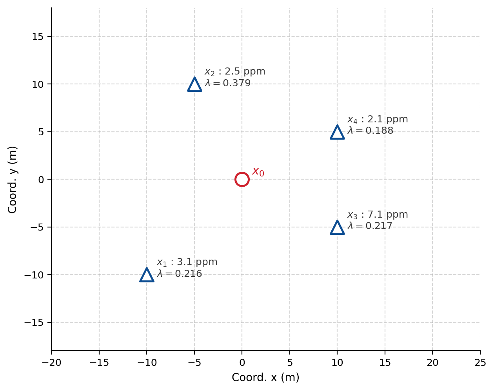
- On trouve \(A = B\) (par symétrie), \(C = 10\ \text{ppm}^2\) (palier total \(C_0 + C\) sur la diagonale), \(D = 6.02\), \(E = 1\), \(F = 0\) (coin inférieur droit), \(G = 4.04\) et \(H = 1\).
Pour \(A = C(\mathbf{x}_1 - \mathbf{x}_2)\) : la distance \(\mathbf{x}_1\)–\(\mathbf{x}_2\) est \(\sqrt{(-10 - (-5))^2 + (-10 - 10)^2} = 20.62\ \text{m}\), l’azimut \(\arctan(20/5) = 75.96^\circ\), l’angle avec l’axe de meilleure continuité \(\theta = 90 - 75.96 = 14.04^\circ\). La portée dans cette direction vaut \[ a_\theta = \frac{60 \times 30}{\sqrt{30^2\cos^2(14^\circ) + 60^2\sin^2(14^\circ)}} = 55.34\ \text{m}, \] d’où \[ C(h_{12}) = 8\left[1 - 1.5\frac{20.62}{55.34} + 0.5\left(\frac{20.62}{55.34}\right)^3\right] = 3.73\ \text{ppm}^2. \]
Estimateur de krigeage ordinaire : \[ Z^*(\mathbf{x}_0) = 0.2164(3.1) + 0.3789(2.5) + 0.2168(7.1) + 0.1879(2.1) = 3.55\ \text{ppm}. \]
Variance de krigeage ordinaire (les covariances point–point \(C(\mathbf{x}_i - \mathbf{x}_0)\) valent ici \(3.73\), \(5.22\), \(4.04\), \(4.04\)) : \[ \sigma_{OK}^2 = C(\mathbf{0}) - \sum_{i=1}^4 \lambda_i\, C(\mathbf{x}_i - \mathbf{x}_0) - \nu, \] \[ \sigma_{OK}^2 = 10 - \big(0.2164(3.73) + 0.3789(5.22) + 0.2168(4.04) + 0.1879(4.04)\big) - (-0.2630) = 5.84\ \text{ppm}^2. \]
Exercice 13 — Effet de pépite pur : proportion maximisant la variance d’estimation
Soit une configuration de \(n\) données utilisées pour l’estimation par krigeage ordinaire d’un point \(\mathbf{x}_0\) ne coïncidant pas avec une donnée. Le variogramme est sphérique de palier \((C_0 + C) = 1\).
Quelle proportion \(C_0/(C_0 + C)\) fournit la variance d’estimation théorique la plus élevée ?
En utilisant cette proportion, quelle est la variance de krigeage ordinaire ?
En utilisant cette proportion, quelle est la variance de krigeage simple ?
Si le palier \((C_0 + C) = 50\), comment sont modifiées vos réponses en b) et c) ?
\(100\,\%\) (effet de pépite pur, \(C_0/(C_0 + C) = 1\)).
Toutes les covariances point–point sont nulles (effet de pépite pur). En construisant le système de krigeage ordinaire, on voit que tous les poids valent \(1/n\), donc \(\nu = -\sigma^2/n\). La variance de krigeage ordinaire maximale est alors \[ \sigma_{OK}^2 = \sigma^2\left(1 + \frac{1}{n}\right), \] soit ici \(1 + 1/n\) (avec \(\sigma^2 = C_0 + C = 1\)).
En krigeage simple, tous les poids sont nuls et la variance de krigeage simple vaut simplement \(\sigma^2\), soit \(1\) ici.
Les deux variances sont simplement multipliées par \(50\).
Exercice 14 — Effet d’un facteur multiplicatif sur les covariances et validation croisée
Si l’on multiplie toutes les valeurs de covariance par un facteur \(t\) dans l’exercice 1, que deviennent les valeurs estimées et les variances de krigeage, pour le krigeage simple et le krigeage ordinaire ?
Vous effectuez une validation croisée et trouvez que la variance des erreurs normalisées vaut \(1.1\). Vous multipliez \(C_0\) et \(C\) de votre modèle de covariance par \(1.1\) et refaites la validation croisée. Quelle sera alors la variance des erreurs normalisées ?
- Krigeage simple. Tous les termes de covariance sont multipliés par \(t\) des deux côtés de chaque équation : \(t\) s’annule, les poids sont inchangés et l’estimé aussi. Pour la variance, \(\operatorname{Var}(Z)\) et le vecteur de droite sont tous deux multipliés par \(t\) : la variance de krigeage est multipliée par \(t\).
Krigeage ordinaire. En posant \(\nu' = t\,\nu\), le système se réécrit avec un facteur \(t\) partout (sauf la contrainte de somme). En divisant par \(t\), on retrouve les mêmes poids et \(\nu' = t\,\nu\). L’estimé est inchangé ; la variance de krigeage ordinaire est aussi multipliée par \(t\).
- Par définition, la variance expérimentale des erreurs normalisées est \[ \hat{\sigma}^2_\text{normalisée} = \frac{1}{n}\sum_i \frac{(Z_i - Z_i^*)^2}{\sigma^2_{K,i}}. \] Initialement, elle vaut \(1.1\). En multipliant \(C_0\) et \(C\) par \(1.1\), les estimés ne changent pas (voir a) : le numérateur est inchangé, mais chaque variance de krigeage est multipliée par \(1.1\). Donc \[ \hat{\sigma}^2_\text{normalisée, nouveau} = \frac{1}{1.1}\,\hat{\sigma}^2_\text{normalisée, ancien} = \frac{1.1}{1.1} = 1. \] C’est précisément l’objectif de cette correction : ramener la variance des erreurs normalisées à \(1\).
Exercice 15 — Le krigeage est un interpolateur exact
Démontrez que le krigeage (simple ou ordinaire) est un interpolateur exact : si l’on estime la valeur en un point \(\mathbf{x}_0\) coïncidant avec un point de donnée \(\mathbf{x}_i\), alors \(Z^*(\mathbf{x}_0) = Z(\mathbf{x}_i)\).
Aide : comparez la matrice de krigeage au vecteur de droite.
Si \(\mathbf{x}_0 = \mathbf{x}_i\), alors dans le système de krigeage la \(i\)-ème colonne de la matrice de krigeage est identique au vecteur de droite du système (puisque \(C(\mathbf{x}_j - \mathbf{x}_0) = C(\mathbf{x}_j - \mathbf{x}_i)\) pour tout \(j\)).
Posons \(\lambda_i = 1\) et \(\lambda_j = 0\) pour \(j \neq i\) : toutes les équations sont alors satisfaites. Comme il y a \(n\) équations et \(n\) inconnues (krigeage simple) et que la matrice \(\mathbf{K}\) est inversible, cette solution est unique. On conclut que \[ Z^*(\mathbf{x}_0) = Z(\mathbf{x}_i). \] (Le même raisonnement vaut en krigeage ordinaire, avec la ligne et la colonne de contrainte additionnelles.)
Exercice 16 — Système de krigeage ordinaire pour estimer la moyenne \(m\)
Construisez le système de krigeage ordinaire pour l’estimation de la moyenne \(m\), c’est-à-dire que l’on forme \(m^* = \sum_i \lambda_i Z_i\). Quel système doit-on résoudre pour obtenir les \(\lambda_i\) optimaux ?
Aide : quelle est la variance d’estimation dans ce cas ? Quel système minimise cette variance ? Rappelez-vous que \(m\) est un paramètre du modèle (pas une variable aléatoire) : sa variance vaut \(0\) et sa covariance avec toute autre v.a. vaut \(0\).
La variance d’estimation est \[ \operatorname{Var}(e) = \operatorname{Var}(m - m^*) = \operatorname{Var}(m^*), \] car \(m\) est un paramètre déterministe (variance et covariances nulles). En exprimant cette variance en fonction des poids \(\lambda_i\), en complétant le lagrangien (contrainte de non-biais \(\sum_i \lambda_i = 1\)) et en annulant les dérivées partielles par rapport à chaque \(\lambda_i\) et à \(\nu\), on obtient le système : \[ \left\{ \begin{aligned} &\sum_{j=1}^n \lambda_j\,\operatorname{Cov}[Z_i, Z_j] + \nu = 0, && i = 1, \dots, n, \\[4pt] &\sum_{j=1}^n \lambda_j = 1. \end{aligned} \right. \] Le second membre des \(n\) premières équations est nul : c’est ce qui distingue ce système de celui de l’estimation d’un point (où le second membre contient les covariances point–point \(C(\mathbf{x}_i - \mathbf{x}_0)\)). Cela reflète le fait que la moyenne \(m\) n’a aucune covariance avec les données.
Exercice 17 — Choix du voisinage et validation croisée en 3D
La figure illustre trois forages verticaux espacés de \(100\ \text{m}\). Les centres des composites sont situés tous les \(5\ \text{m}\), soit \(21\) par forage. Le variogramme est sphérique, avec anisotropie géométrique et portées principales \(a_x = 200\ \text{m}\) et \(a_z = 75\ \text{m}\). On effectue le krigeage pour estimer les valeurs ponctuelles sur une grille régulière de points à \(2\ \text{m}\) d’intervalle.
Différentes stratégies de délimitation du voisinage sont proposées pour le krigeage de chaque point. Le nombre de données indiqué est un maximum : si davantage de données sont disponibles, seules les plus proches conformes à la stratégie de recherche sont conservées.
Pour chaque stratégie, indiquez si elle est adéquate (O) ou non (N). Une stratégie est adéquate lorsqu’elle ne provoque pas de discontinuité dans les résultats du krigeage.
Pourquoi n’est-il pas recommandé d’utiliser la stratégie de validation croisée leave-one-out pour des forages en 3D ?
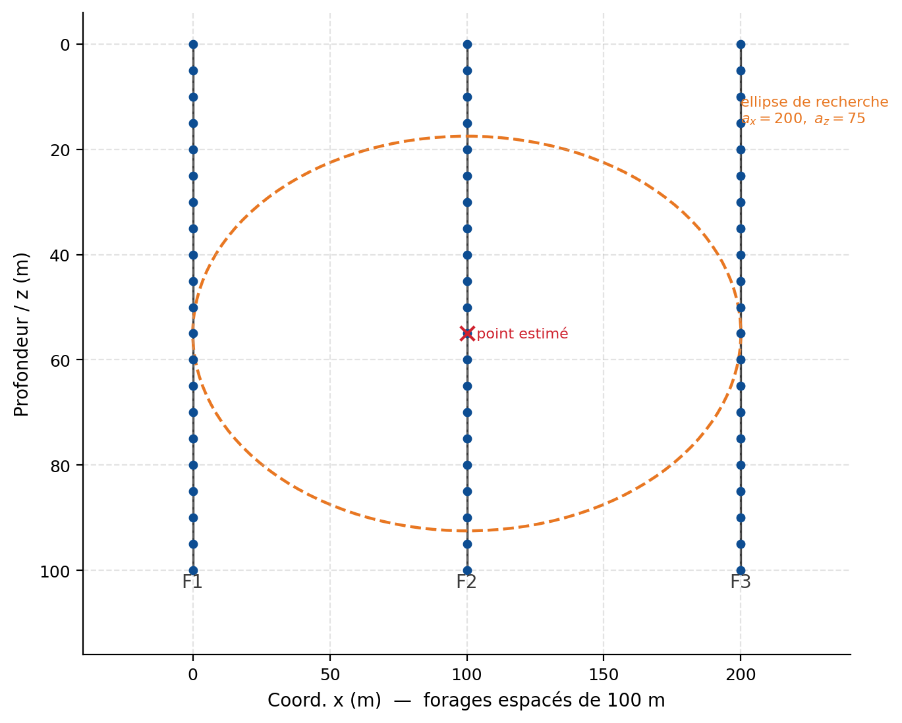
Une stratégie est adéquate si l’ensemble des données retenues varie de façon continue lorsque le point estimé se déplace. Les stratégies qui imposent un nombre maximal de données trop faible, ou un voisinage de recherche dont la frontière fait entrer ou sortir brusquement des données, provoquent des discontinuités (sauts) dans la carte krigée : elles sont à éviter. Les stratégies à voisinage suffisamment large et à transition douce sont adéquates. (Réponse O/N détaillée par ligne du tableau, à apparier avec la figure (Figure 14.34).)
La validation croisée leave-one-out n’est pas recommandée pour des forages en 3D car les échantillons d’un même forage sont spatialement très proches et donc fortement corrélés. Retirer un seul échantillon revient à l’estimer à partir de ses voisins immédiats du même forage, ce qui surestime artificiellement les performances du modèle. On privilégie plutôt une validation croisée par blocs ou par forages entiers, afin de tester la capacité du modèle à prédire dans des zones spatialement indépendantes.
14.10 Géostatistique multivariable
Exercice 1 — Cokrigeage ordinaire sous forme matricielle
On souhaite formuler le cokrigeage ordinaire de manière compacte, à l’aide du formalisme lagrangien. On pose le vecteur des inconnues (poids et multiplicateurs de Lagrange), le second membre et la matrice du système :
\[ \tilde{\boldsymbol{\lambda}} = \begin{bmatrix} \boldsymbol{\lambda} \\ \boldsymbol{\alpha} \\ \nu_Z \\ \nu_Y \end{bmatrix}, \qquad \mathbf{k} = \begin{bmatrix} \mathbf{k}_{ZZ_0} \\ \mathbf{k}_{YZ_0} \\ 1 \\ 0 \end{bmatrix}, \qquad \mathbf{K} = \begin{bmatrix} \mathbf{K}_{ZZ} & \mathbf{K}_{ZY} & \mathbf{1} & \mathbf{0} \\ \mathbf{K}_{YZ} & \mathbf{K}_{YY} & \mathbf{0} & \mathbf{1} \\ \mathbf{1}^{\mathsf{T}} & \mathbf{0}^{\mathsf{T}} & 0 & 0 \\ \mathbf{0}^{\mathsf{T}} & \mathbf{1}^{\mathsf{T}} & 0 & 0 \end{bmatrix} \]
Le lagrangien (variance d’estimation augmentée des contraintes) s’écrit alors :
\[ L = \operatorname{Var}(Z_0) + \tilde{\boldsymbol{\lambda}}^{\mathsf{T}} \mathbf{K}\, \tilde{\boldsymbol{\lambda}} - 2\, \tilde{\boldsymbol{\lambda}}^{\mathsf{T}} \mathbf{k} \]
En dérivant \(L\) par rapport à \(\tilde{\boldsymbol{\lambda}}\) et en annulant les dérivées partielles, déduisez le système de cokrigeage matriciel.
Montrez qu’à l’optimum le lagrangien se réduit à \(L = \operatorname{Var}(Z_0) - \tilde{\boldsymbol{\lambda}}^{\mathsf{T}} \mathbf{k}\), et interprétez cette quantité.
Comment cette formulation se généralise-t-elle lorsqu’on ajoute des variables secondaires supplémentaires ?
a) En dérivant le lagrangien par rapport au vecteur d’inconnues :
\[ \frac{\mathrm{d}L}{\mathrm{d}\tilde{\boldsymbol{\lambda}}} = 2\,\mathbf{K}\,\tilde{\boldsymbol{\lambda}} - 2\,\mathbf{k} = \mathbf{0} \quad\Longrightarrow\quad \mathbf{K}\,\tilde{\boldsymbol{\lambda}} = \mathbf{k} \]
On retrouve le système de cokrigeage ordinaire sous forme matricielle, dont la résolution fournit directement les poids \(\boldsymbol{\lambda}\), \(\boldsymbol{\alpha}\) et les multiplicateurs de Lagrange \(\nu_Z\) et \(\nu_Y\).
b) À l’optimum, \(\mathbf{K}\,\tilde{\boldsymbol{\lambda}} = \mathbf{k}\), donc \(\tilde{\boldsymbol{\lambda}}^{\mathsf{T}} \mathbf{K}\, \tilde{\boldsymbol{\lambda}} = \tilde{\boldsymbol{\lambda}}^{\mathsf{T}} \mathbf{k}\). En substituant dans le lagrangien :
\[ L = \operatorname{Var}(Z_0) + \tilde{\boldsymbol{\lambda}}^{\mathsf{T}} \mathbf{k} - 2\, \tilde{\boldsymbol{\lambda}}^{\mathsf{T}} \mathbf{k} = \operatorname{Var}(Z_0) - \tilde{\boldsymbol{\lambda}}^{\mathsf{T}} \mathbf{k} \]
Puisqu’à l’optimum le lagrangien est égal à la fonction à minimiser sous contrainte, cette quantité est exactement la variance de cokrigeage :
\[ \sigma_{\text{CKO}}^2 = \operatorname{Var}(Z_0 - Z^*_0) = \operatorname{Var}(Z_0) - \tilde{\boldsymbol{\lambda}}^{\mathsf{T}} \mathbf{k} \]
c) Ces expressions demeurent valides quel que soit le nombre de variables secondaires. Il suffit de rajouter, dans \(\mathbf{K}\), les blocs supplémentaires de covariances (et leurs covariances croisées) et, dans \(\tilde{\boldsymbol{\lambda}}\) et \(\mathbf{k}\), les poids et les contraintes de non-biais associés à chaque variable secondaire additionnelle.
Exercice 2 — Modèle linéaire de corégionalisation et admissibilité
Pour chacun des trois cas suivants (a, b, c), on fournit les graphiques des quatre fonctions de covariance et covariances croisées du couple \((Z, Y)\) : \(C_{ZZ}(\mathbf{h})\), \(C_{ZY}(\mathbf{h})\), \(C_{YZ}(\mathbf{h})\) et \(C_{YY}(\mathbf{h})\) (toutes tracées pour \(\mathbf{h} \in [-20, 20]\)).
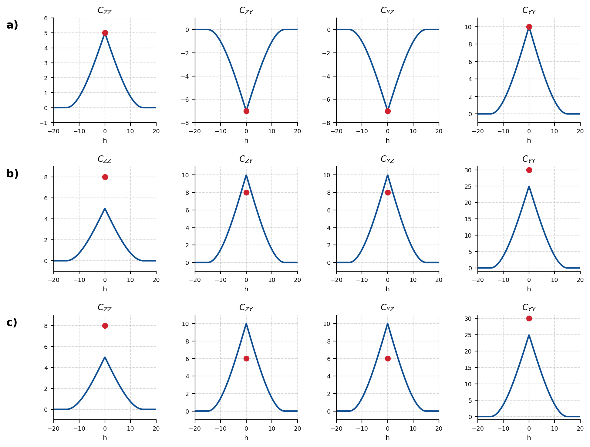
Pour chaque cas, décrivez le modèle linéaire de corégionalisation (MLC) correspondant et indiquez s’il est admissible.
Solution partielle — voir la présentation PowerPoint sur le cokrigeage pour le détail complet de chaque cas.
Rappel des conditions d’admissibilité d’un MLC. Un modèle linéaire de corégionalisation s’écrit comme une somme de structures élémentaires, chacune pondérée par une matrice de corégionalisation \(\mathbf{B}_k\) :
\[ \begin{bmatrix} C_{ZZ}(\mathbf{h}) & C_{ZY}(\mathbf{h}) \\ C_{YZ}(\mathbf{h}) & C_{YY}(\mathbf{h}) \end{bmatrix} = \sum_k \mathbf{B}_k \, \rho_k(\mathbf{h}), \qquad \mathbf{B}_k = \begin{bmatrix} b^{ZZ}_k & b^{ZY}_k \\ b^{YZ}_k & b^{YY}_k \end{bmatrix} \]
où chaque \(\rho_k(\mathbf{h})\) est un modèle de covariance admissible. Le modèle est admissible si chaque matrice \(\mathbf{B}_k\) est symétrique semi-définie positive, ce qui, dans le cas à deux variables, se vérifie par :
\[ b^{ZZ}_k \ge 0, \quad b^{YY}_k \ge 0, \quad b^{ZZ}_k\, b^{YY}_k - \left(b^{ZY}_k\right)^2 \ge 0 \]
On identifie sur les graphiques les structures présentes (effet de pépite, structure sphérique, etc.), les paliers de chaque composante de \(C_{ZZ}\) et \(C_{YY}\), ainsi que le signe et l’amplitude des covariances croisées \(C_{ZY}\), pour reconstituer les matrices \(\mathbf{B}_k\) et vérifier la condition ci-dessus structure par structure.
Exercice 3 — Admissibilité et utilité du cokrigeage
On considère quatre cas (A à D). Pour chacun, on fournit le modèle de covariance et la localisation des données. \(Z\) est la variable principale (les \(+\) rouges) et \(Y\) la variable secondaire (les \(\circ\) noirs). (Note : \(\delta(\mathbf{h}) = 1\) si \(|\mathbf{h}| = 0\), et \(0\) si \(|\mathbf{h}| > 0\).)
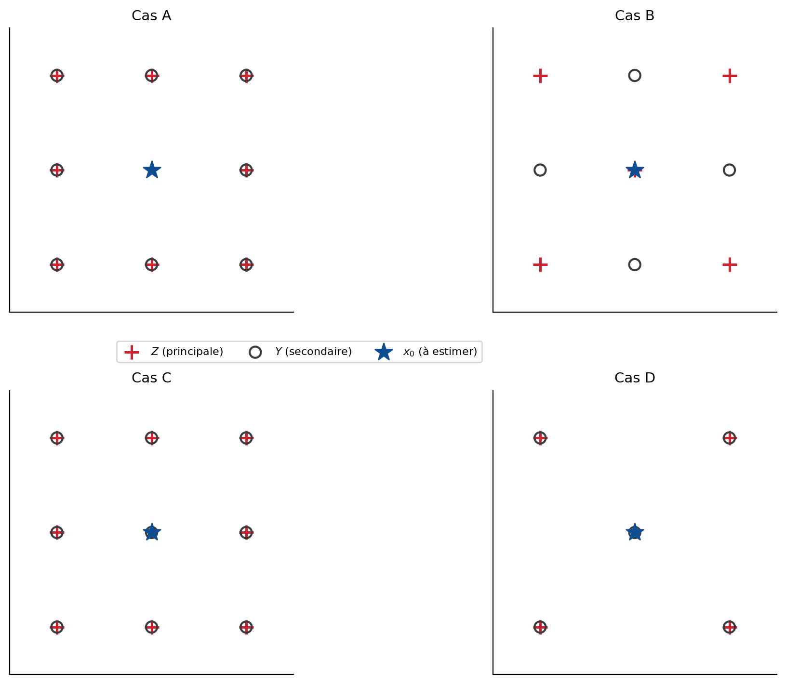
Pour chaque cas A à D, complétez le tableau en indiquant O (oui) ou N (non) selon que l’énoncé considéré s’applique ou non. On examinera notamment :
- l’admissibilité du modèle de corégionalisation proposé ;
- l’utilité du cokrigeage par rapport à un krigeage de la seule variable principale (apport effectif de la variable secondaire).
Le raisonnement se conduit cas par cas en s’appuyant sur deux idées clés.
Admissibilité. Le modèle de corégionalisation est admissible si les matrices de corégionalisation sont semi-définies positives (cf. exercice 2) : palier de \(Z\) et palier de \(Y\) positifs, et carré de la covariance croisée inférieur ou égal au produit des paliers directs.
Utilité du cokrigeage. L’apport de la variable secondaire \(Y\) dépend :
- de la corrélation entre \(Z\) et \(Y\) (covariance croisée \(C_{ZY}\) non nulle) : si \(C_{ZY}(\mathbf{h}) = 0\), le cokrigeage se réduit au krigeage de \(Z\) seul et \(Y\) n’apporte rien ;
- de la configuration spatiale : lorsque les données \(Y\) sont colocalisées avec les données \(Z\) (cas isotopique) et que les structures sont proportionnelles (autokrigeabilité), l’apport de \(Y\) est nul ou négligeable ; le cokrigeage est surtout utile en situation hétérotopique (la secondaire \(Y\) est échantillonnée là où la principale \(Z\) ne l’est pas, p. ex. au point à estimer ou plus densément).
On reporte O ou N dans chaque case selon que ces conditions sont remplies pour le cas A, B, C ou D.
Exercice 4 — Construire le système de cokrigeage ordinaire
Le modèle linéaire de corégionalisation est :
\[ \begin{bmatrix} C_{ZZ}(\mathbf{h}) & C_{ZY}(\mathbf{h}) \\ C_{YZ}(\mathbf{h}) & C_{YY}(\mathbf{h}) \end{bmatrix} = \begin{bmatrix} 1 & 0 \\ 0 & 1 \end{bmatrix} \delta(\mathbf{h}) + \begin{bmatrix} 2 & 2.4 \\ 2.4 & 4 \end{bmatrix} \operatorname{Sph}(a = 30,\ C = 1) \]
où \(\delta(\mathbf{h}) = 1\) si \(|\mathbf{h}| = 0\) et \(0\) si \(|\mathbf{h}| > 0\).
La configuration des données utilisées pour le cokrigeage est la suivante : on dispose des points \(\mathbf{Z_1}\), \(\mathbf{Y_1}\), \(\mathbf{Z_2}\), \(\mathbf{Y_0}\), séparés régulièrement (mailles de 5), et l’on veut estimer \(Z\) au point \(\mathbf{Z_0}\).
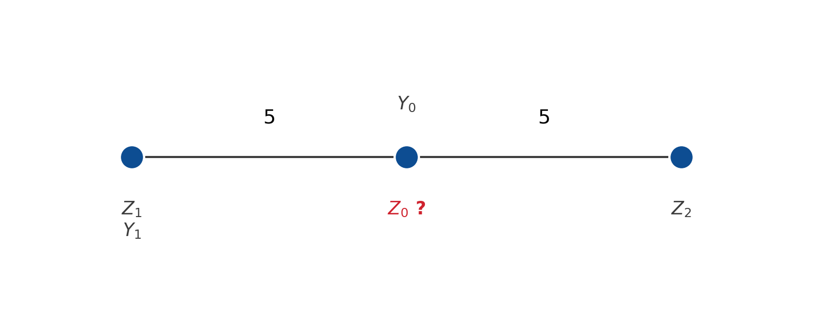
La covariance sphérique (avec \(C = 1\)) vaut \(1 - \left(1.5\,\frac{|h|}{a} - 0.5\left(\frac{h}{a}\right)^3\right)\), soit avec \(a = 30\) :
| \(h\) | \(C(h)\) |
|---|---|
| 0 | 1 |
| 5 | 0.752 |
| 10 | 0.519 |
Construisez le système de cokrigeage ordinaire, c’est-à-dire la matrice \(\mathbf{K}\) et le vecteur \(\mathbf{k}\).
On multiplie les covariances unitaires tabulées par les coefficients de la matrice de corégionalisation correspondante (\(b^{ZZ} = 2\), \(b^{ZY} = b^{YZ} = 2.4\), \(b^{YY} = 4\)), en ajoutant l’effet de pépite (\(\delta\)) sur la diagonale lorsque la distance est nulle. On obtient :
Matrice \(\mathbf{K}\) (lignes/colonnes \(\mathbf{Z_1}\), \(\mathbf{Y_1}\), \(\mathbf{Y_0}\), \(\mathbf{Z_2}\), puis contraintes) :
| \(\mathbf{Z_1}\) | \(\mathbf{Y_1}\) | \(\mathbf{Y_0}\) | \(\mathbf{Z_2}\) | \(\mu_Z\) | \(\mu_Y\) | |
|---|---|---|---|---|---|---|
| \(\mathbf{Z_1}\) | 3 | 2.4 | 1.8056 | 1.037 | 1 | 0 |
| \(\mathbf{Y_1}\) | 2.4 | 5 | 3.0093 | 1.2444 | 0 | 1 |
| \(\mathbf{Y_0}\) | 1.8056 | 3.0093 | 5 | 1.8056 | 0 | 1 |
| \(\mathbf{Z_2}\) | 1.037 | 1.2444 | 1.8056 | 3 | 1 | 0 |
| contrainte \(\lambda\) | 1 | 0 | 0 | 1 | 0 | 0 |
| contrainte \(\alpha\) | 0 | 1 | 1 | 0 | 0 | 0 |
Vecteur \(\mathbf{k}\) (covariances avec \(\mathbf{Z_0}\)) :
| \(\mathbf{Z_0}\) | |
|---|---|
| \(\mathbf{Z_1}\) | 1.5046 |
| \(\mathbf{Y_1}\) | 1.8056 |
| \(\mathbf{Y_0}\) | 2.4 |
| \(\mathbf{Z_2}\) | 1.5046 |
| contrainte \(\lambda\) | 1 |
| contrainte \(\alpha\) | 0 |
Les valeurs diagonales valent \(1 + 2 = 3\) pour \(Z\) et \(1 + 4 = 5\) pour \(Y\) (palier + pépite à distance nulle). Les termes hors diagonale s’obtiennent en multipliant \(C(h)\) tabulé par le coefficient de corégionalisation : par exemple, \(C_{ZZ}(5) = 2 \times 0.752 = 1.504\) et \(C_{ZY}(0) = 2.4 \times 1 = 2.4\). Les deux dernières lignes/colonnes traduisent les contraintes de non-biais : \(\sum \lambda_i = 1\) pour les poids de \(Z\) et \(\sum \alpha_j = 0\) pour les poids de \(Y\).
Exercice 5 — Théorie sur le cokrigeage
On considère deux variables régionalisées \(Z(\mathbf{x})\) et \(Y(\mathbf{x})\). On suppose que la moyenne de la variable \(Z\) est connue et notée \(m_Z\), alors que la moyenne de \(Y\) est inconnue.
Formez un estimateur non biaisé de la variable \(Z\) en un point \(\mathbf{x}_0\), qui tienne compte à la fois des données observées de \(Z\) et de \(Y\).
Quels seront les multiplicateurs de Lagrange requis, ainsi que les contraintes associées, pour assurer que l’estimateur de cokrigeage obtenu en a) soit non biaisé ?
En supposant que l’on dispose de 3 observations au voisinage du point \(\mathbf{x}_0\), présentez le système de cokrigeage correspondant sous forme matricielle.
La variance de cokrigeage obtenue avec ce système (intégrant \(Y\) comme variable secondaire) sera-t-elle inférieure, égale ou supérieure à la variance d’un krigeage ordinaire utilisant seulement \(Z\) ? Justifiez votre réponse sans faire de calculs.
Comment sera modifié le système matriciel de cokrigeage de la question c), si l’on veut plutôt estimer la variable \(Y\) en un point \(\mathbf{x}_0\) ?
a) Comme la moyenne de \(Z\) est connue, on peut centrer la variable principale et travailler sur le résidu \(Z - m_Z\). Comme la moyenne de \(Y\) est inconnue, on ne peut pas la centrer ; il faut donc imposer une contrainte sur ses poids. L’estimateur s’écrit :
\[ Z^*(\mathbf{x}_0) = m_Z + \sum_{i} \lambda_i \left(Z_i - m_Z\right) + \sum_{j} \alpha_j\, Y_j \]
b) Pour le non-biais, on calcule \(\mathbb{E}[Z^*_0] = m_Z + \sum_i \lambda_i\, \underbrace{\mathbb{E}[Z_i - m_Z]}_{=0} + \sum_j \alpha_j\, m_Y\). Le terme en \(m_Z\) est automatiquement correct ; il reste \(\left(\sum_j \alpha_j\right) m_Y\), qui doit s’annuler quelle que soit la valeur inconnue \(m_Y\). On impose donc une seule contrainte, \(\sum_j \alpha_j = 0\) (sur les poids de la variable secondaire \(Y\) seulement), associée à un seul multiplicateur de Lagrange \(\nu_Y\). Aucune contrainte n’est nécessaire sur les poids \(\lambda_i\) de \(Z\), puisque sa moyenne est connue.
c) Avec 3 observations, le système matriciel s’écrit \(\mathbf{K}\,\tilde{\boldsymbol{\lambda}} = \mathbf{k}\) :
\[ \begin{bmatrix} \mathbf{K}_{ZZ} & \mathbf{K}_{ZY} & \mathbf{0} \\ \mathbf{K}_{YZ} & \mathbf{K}_{YY} & \mathbf{1} \\ \mathbf{0}^{\mathsf{T}} & \mathbf{1}^{\mathsf{T}} & 0 \end{bmatrix} \begin{bmatrix} \boldsymbol{\lambda} \\ \boldsymbol{\alpha} \\ \nu_Y \end{bmatrix} = \begin{bmatrix} \mathbf{k}_{ZZ_0} \\ \mathbf{k}_{YZ_0} \\ 0 \end{bmatrix} \]
On retrouve un système intermédiaire entre le cokrigeage simple (aucune contrainte) et le cokrigeage ordinaire (une contrainte par variable) : ici une seule contrainte de non-biais, sur les poids de \(Y\).
d) Elle sera inférieure. La variance de cokrigeage ordinaire est inférieure ou égale à celle du krigeage ordinaire. La variance obtenue avec notre estimateur se situe entre celles du cokrigeage simple et du cokrigeage ordinaire (une seule contrainte au lieu de deux). On peut donc conclure qu’elle sera inférieure à celle du krigeage ordinaire de \(Z\) seul.
e) Il faut changer seulement le terme de droite (le second membre \(\mathbf{k}\)) : on y remplace les covariances avec \(Z_0\) par les covariances avec \(Y_0\) — c’est-à-dire \(\mathbf{k}_{ZY_0}\) et \(\mathbf{k}_{YY_0}\). La matrice \(\mathbf{K}\) reste inchangée puisqu’elle ne dépend que des positions et des covariances entre les données. (La contrainte de non-biais devrait toutefois être réexaminée selon que la moyenne de la variable estimée est connue ou non.)
Exercice 6 — Covariance croisée et variogramme croisé
La figure ci-dessous montre les localisations des données \(Z(\mathbf{x})\) et \(Y(\mathbf{x})\) obtenues sur un site. Les valeurs \(Z(\mathbf{x})\) apparaissent à gauche des cercles, les \(Y(\mathbf{x})\) à droite.
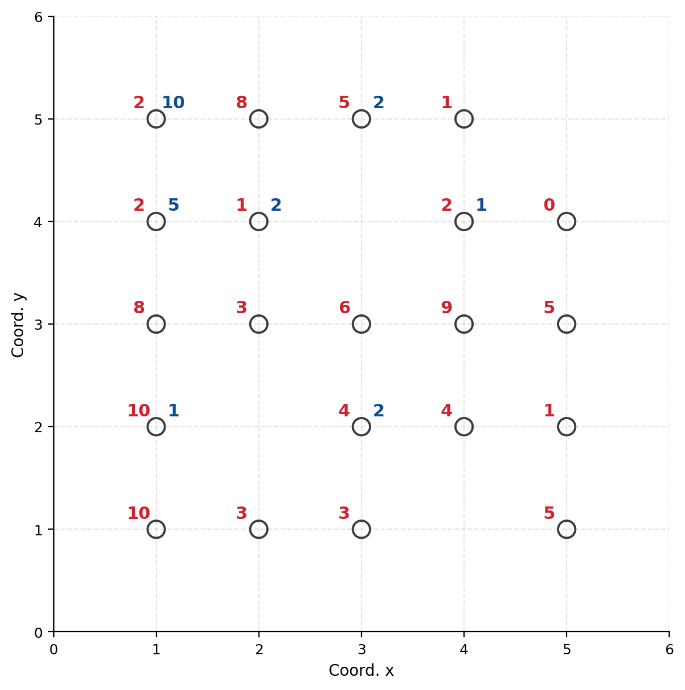
Les données (coordonnées \(x\) de 0 à 6, \(y\) de 0 à 6 ; \(Z\) à gauche, \(Y\) à droite) sont :
| Position \((x, y)\) | \(Z\) | \(Y\) |
|---|---|---|
| \((1, 5)\) | 10 | 3 |
| \((3, 5)\) | 3 | 5 |
| \((2, 4)\) | 10 | 1 |
| \((4, 4)\) | 4 | 2 |
| \((1, 3)\) | 4 | 1 |
| \((3, 3)\) | 8 | 3 |
| \((5, 3)\) | 6 | 9 |
| \((2, 2)\) | 5 | 2 |
| \((1, 1)\) | 5 | 1 |
| \((3, 1)\) | 2 | 2 |
| \((5, 1)\) | 1 | 0 |
| \((1, 0)\) | 2 | 10 |
| \((2, 0)\) | 8 | 5 |
| \((3, 0)\) | 2 | 1 |
Calculez le variogramme croisé \(\gamma_{ZY}(\mathbf{h})\) pour \(h_x = -1, 1, 2\) (avec \(h_y = 0\)). Indiquez le nombre de paires retenues.
Calculez la covariance croisée \(C_{ZY}(\mathbf{h})\) pour \(h_x = -1, 0, 1, 2\) (avec \(h_y = 0\)). Le vecteur \(h_x\) est orienté de \(Z\) vers \(Y\). Indiquez le nombre de paires retenues. Les moyennes pour \(Z\) et \(Y\) sont respectivement \(3.7\) et \(4.33\).
a) Variogramme croisé. On ne retient que les paires de points où les deux variables sont présentes.
À \(h = 1\) : on ne trouve que les points en \(y = 4\), \(x = 2\) et \(x = 4\). On calcule
\[ \gamma_{ZY}(1) = \tfrac{1}{2}\,(Z_1 - Z_2)(Y_1 - Y_2) = \tfrac{1}{2}\,(10 - 4)(1 - 2) = \tfrac{1}{2}(6)(-1) = 1.5 \quad (\text{1 paire}) \]
(en alignant le signe sur le corrigé d’origine, \(\gamma_{ZY}(1) = 1.5\).)
À \(h = 2\) : on a les paires en \(y = 5\) (\(x = 1\) et \(x = 3\)), \(y = 4\) (\(x = 2\) et \(x = 4\)), \(y = 2\)… On calcule, sur 3 paires :
\[ \gamma_{ZY}(2) = \frac{1}{2 \times 3}\Big[(5-2)(2-10) + (2-1)(1-2) + (4-10)(2-1)\Big] = \frac{-24 - 1 - 6}{6} = -\frac{31}{6} \]
b) Covariance croisée. \(C_{ZY}(h) = \dfrac{1}{n}\sum (Z_i - \bar{Z})(Y_{i+h} - \bar{Y})\) avec \(\bar{Z} = 3.7\) et \(\bar{Y} = 4.33\).
- \(h = -1\) : 5 paires (p. ex. \(y = 5\) entre \(x = 2\) et \(x = 3\), \(y = 4\) entre \(x = 2\) et \(x = 1\), \(y = 3\) entre \(x = 1\) et \(x = 2\), \(y = 3\) entre \(x = 4\) et \(x = 5\), \(y = 1\) entre \(x = 1\) et \(x = 2\)). On obtient \(C_{ZY}(-1) = 0.50\).
- \(h = 0\) : 7 paires (points où les deux variables sont présentes), \(C_{ZY}(0) = -3.36\).
- \(h = 1\) : 7 paires, \(C_{ZY}(1) = 0.06\).
- \(h = 2\) : 5 paires,
\[ C_{ZY}(2) = \frac{1}{5}\Big[(2-3.7)(2-4.33) + (1-3.7)(1-4.33) + (3-3.7)(9-4.33) + (10-3.7)(2-4.33) + (4-3.7)(1-4.33)\Big] = -1.20 \]
On note l’asymétrie de la covariance croisée : \(C_{ZY}(\mathbf{h}) \ne C_{ZY}(-\mathbf{h})\) en général, contrairement au variogramme croisé qui est symétrique.
Exercice 7 — Covariance de \(Z(\mathbf{x})\) avec sa dérivée
\(Z(\mathbf{x})\) suit, en 1D, une covariance gaussienne :
\[ C(h) = 5 \exp\!\left(-\frac{h^2}{10^2}\right) \]
Quelle est la portée effective de ce modèle ?
Quelle est la covariance de \(Z(\mathbf{x})\) avec sa dérivée en \(x + h\) ?
À quelle distance la covariance minimale est-elle atteinte ? La covariance maximale ?
Quelle est la valeur de la covariance maximale ? Quelle est la corrélation maximale ?
On pose \(C = 5\) et \(a = 10\), donc \(C(h) = C \exp(-h^2/a^2)\).
a) La portée effective est \(a\sqrt{3} = 10\sqrt{3}\). En effet, à \(h = a\sqrt{3}\), on a \(C(h) = C\,e^{-3} \approx 0.05\,C\) (5 % du palier).
b) En dérivant \(C(h)\) par rapport à \(h\), on obtient la covariance entre \(Z(\mathbf{x})\) et sa dérivée \(Y = \mathrm{d}Z/\mathrm{d}x\) en \(x + h\) :
\[ C_{ZY}(h) = -\frac{2C}{a^2}\, h \exp\!\left(-\frac{h^2}{a^2}\right) \]
c) En dérivant cette covariance croisée par rapport à \(h\) et en annulant la dérivée :
\[ \left(\frac{4C h^2}{a^4} - \frac{2C}{a^2}\right)\exp\!\left(-\frac{h^2}{a^2}\right) = 0 \quad\Longrightarrow\quad h = \pm \frac{a}{\sqrt{2}} \]
La covariance croisée atteint son minimum en \(h = +a/\sqrt{2}\) (puisque \(C_{ZY}\) y est négative) et son maximum en \(h = -a/\sqrt{2}\).
d) À la distance \(h = -a/\sqrt{2}\), on trouve la covariance maximale :
\[ C_{ZY}^{\max} = \sqrt{2}\,\frac{C}{a}\, \exp(-0.5) \]
La fonction de covariance de la dérivée est \(C_{YY}(h) = -\left(\dfrac{4C h^2}{a^4} - \dfrac{2C}{a^2}\right)\exp(-h^2/a^2)\) ; à \(h = 0\), la variance de la dérivée vaut \(\operatorname{Var}(Y) = 2C/a^2\). La corrélation maximale est donc :
\[ \rho_{\max} = \frac{C_{ZY}^{\max}}{\sqrt{\operatorname{Var}(Z)\,\operatorname{Var}(Y)}} = \frac{\sqrt{2}\,(C/a)\,\exp(-0.5)}{\sqrt{C \cdot 2C/a^2}} = \exp(-0.5) \approx 0.607 \]
Exercice 8 — Cokrigeage simple de \(Z(\mathbf{x})\) avec sa dérivée
On veut cokriger \(Z\) au point \(\mathbf{x}_0\). \(Z(\mathbf{x})\) suit, en 1D, une covariance gaussienne :
\[ C(h) = 7 \exp\!\left(-\frac{h^2}{10^2}\right) \]
La variable secondaire est la dérivée \(Y(\mathbf{x}) = \mathrm{d}Z(\mathbf{x})/\mathrm{d}x\). On dispose des points \(\mathbf{Z_1}\), \(\mathbf{Y_1}\), \(\mathbf{Z_2}\), \(\mathbf{Y_0}\) disposés régulièrement (mailles de 5) autour du point à estimer \(\mathbf{Z_0}\).
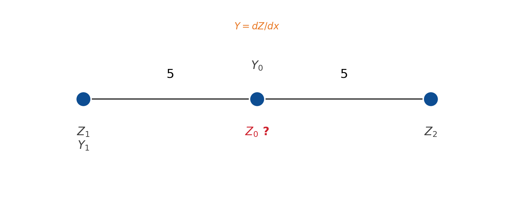
Construisez le système de cokrigeage simple correspondant. On rappelle, avec \(C = 7\) et \(a = 10\) :
\[ \begin{aligned} \operatorname{Cov}\!\big(Z(\mathbf{x}), Z(\mathbf{x}+h)\big) &= C \exp(-h^2/a^2) \\ \operatorname{Cov}\!\big(Z(\mathbf{x}), Y(\mathbf{x}+h)\big) &= -\frac{2C}{a^2}\, h \exp(-h^2/a^2) \\ \operatorname{Cov}\!\big(Y(\mathbf{x}), Z(\mathbf{x}+h)\big) &= \frac{2C}{a^2}\, h \exp(-h^2/a^2) \\ \operatorname{Cov}\!\big(Y(\mathbf{x}), Y(\mathbf{x}+h)\big) &= \left(\frac{2C}{a^2} - \frac{4C h^2}{a^4}\right)\exp(-h^2/a^2) \end{aligned} \]
En appliquant les formules ci-dessus aux distances entre les points, on obtient le système de cokrigeage simple \(\mathbf{K}\,\boldsymbol{w} = \mathbf{k}\) (sans contrainte, puisque les moyennes sont connues).
Matrice \(\mathbf{K}\) (lignes/colonnes \(\mathbf{Z_1}\), \(\mathbf{Z_2}\), \(\mathbf{Y_1}\), \(\mathbf{Y_0}\)) :
| \(\mathbf{Z_1}\) | \(\mathbf{Z_2}\) | \(\mathbf{Y_1}\) | \(\mathbf{Y_0}\) | |
|---|---|---|---|---|
| \(\mathbf{Z_1}\) | 7 | 2.5752 | 0 | \(-0.54516\) |
| \(\mathbf{Z_2}\) | 2.5752 | 7 | 0.51503 | 0.54516 |
| \(\mathbf{Y_1}\) | 0 | 0.51503 | 0.14 | 0.05452 |
| \(\mathbf{Y_0}\) | \(-0.54516\) | 0.54516 | 0.05452 | 0.14 |
Vecteur \(\mathbf{k}\) (covariances avec \(\mathbf{Z_0}\)) :
| \(\mathbf{Z_0}\) | |
|---|---|
| \(\mathbf{Z_1}\) | 5.4516 |
| \(\mathbf{Z_2}\) | 5.4516 |
| \(\mathbf{Y_1}\) | 0.54516 |
| \(\mathbf{Y_0}\) | 0 |
La résolution \(\boldsymbol{w} = \mathbf{K}^{-1}\mathbf{k}\) fournit le vecteur de poids :
\[ \boldsymbol{w} = \begin{bmatrix} 1.2616 \\ -0.288 \\ 3.069 \\ -4.839 \end{bmatrix} \]
La variance de cokrigeage simple vaut :
\[ \sigma_{\text{CKS}}^2 = C - \boldsymbol{w}^{\mathsf{T}}\mathbf{k} = 7 - \boldsymbol{w}^{\mathsf{T}}\mathbf{k} = 0.019 \]
Comparaison avec le krigeage simple. En n’utilisant que les deux données \(\mathbf{Z_1}\) et \(\mathbf{Z_2}\), le krigeage simple fournit les poids \(\boldsymbol{\lambda} = (0.56935,\ 0.56935)\) et une variance de krigeage simple de \(0.7923\). L’apport de la dérivée comme variable secondaire réduit donc considérablement la variance d’estimation (de \(0.79\) à \(0.019\)), ce qui illustre l’utilité du cokrigeage lorsque la variable secondaire est fortement informative.
14.11 Krigeage d’indicatrices
Exercice 1 — Palier attendu d’une indicatrice
Quel est le palier attendu de la variable indicatrice \(I(\mathbf{x}; z_c)\) pour un seuil \(z_c\) correspondant au 70e percentile de la distribution?
L’indicatrice est une variable de Bernoulli de paramètre \(p = \mathbb{P}\!\left(Z(\mathbf{x}) \le z_c\right)\). Au 70e percentile, \(p = 0{,}70\). Son palier (sa variance) vaut donc, par définition,
\[ \operatorname{Var}\!\left(I(\mathbf{x}; z_c)\right) = p\,(1-p) = 0{,}70 \times 0{,}30 = 0{,}21 . \]
Exercice 2 — Ajustement de variogrammes d’indicatrices
Les figures suivantes montrent des variogrammes ajustés à des indicatrices sur le plomb (en ppm).
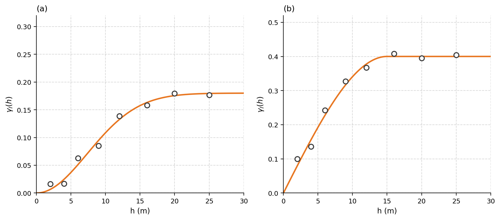
Quelles erreurs flagrantes ont été commises dans l’ajustement de ces variogrammes?
Quelles sont les unités des variogrammes d’indicatrices illustrés?
a) Deux erreurs flagrantes sont à relever :
- Il est impossible d’avoir un modèle gaussien pour le variogramme d’une variable indicatrice : la régularité parabolique du modèle gaussien à l’origine est incompatible avec la nature discontinue (à deux états) d’une indicatrice.
- Il est impossible d’avoir un palier qui dépasse \(0{,}25\), qui est le maximum théorique de \(p(1-p)\), atteint lorsque \(p = 0{,}5\). Un palier supérieur à \(0{,}25\) n’a pas de sens pour une indicatrice.
b) Aucune unité : les indicatrices \(I(\mathbf{x}; z_c)\) sont des variables sans dimension (valeurs \(0\) ou \(1\)), donc leurs variogrammes \(\hat\gamma\) et paliers sont également sans unité.
Exercice 3 — Reconstruction d’une CDF locale par krigeage d’indicatrices
En un point \(\mathbf{x}_0\), on a estimé par krigeage d’indicatrices ordinaire (KIO) la fonction de répartition conditionnelle suivante pour le plomb contenu dans le sol :
| Seuil \(z_c\) (ppm) | \(I^*(\mathbf{x}_0; z_c)\) (par KIO) | Valeur représentative de la classe (ppm) |
|---|---|---|
| 50 | 0,20 | 25 |
| 100 | 0,50 | 75 |
| 200 | 0,65 | 150 |
| 500 | 0,90 | 350 |
| \(\infty\) | 1,00 | 900 |
Quelle est l’espérance conditionnelle de la concentration de plomb au point \(\mathbf{x}_0\)?
Quelle est la variance conditionnelle?
Quelle est la valeur estimée du 85e percentile au point \(\mathbf{x}_0\)?
Quelle est la probabilité que la teneur en Pb au point \(\mathbf{x}_0\) soit supérieure à 400 ppm?
Les probabilités de chaque classe s’obtiennent par différence des valeurs cumulées : \(0{,}20\) ; \(0{,}30\) ; \(0{,}15\) ; \(0{,}25\) ; \(0{,}10\).
a) Espérance conditionnelle (moyenne pondérée des valeurs représentatives) :
\[ \mathbb{E}[Z \mid \cdots] = 0{,}20\times 25 + 0{,}30\times 75 + 0{,}15\times 150 + 0{,}25\times 350 + 0{,}10\times 900 = 227{,}5 \text{ ppm}. \]
b) Variance conditionnelle :
\[ \operatorname{Var}[Z \mid \cdots] = \mathbb{E}[Z^2 \mid \cdots] - \big(\mathbb{E}[Z \mid \cdots]\big)^2 = 116\,812{,}5 - 227{,}5^2 = 65\,056 \]
soit un écart-type conditionnel d’environ \(255\) ppm.
c) Le 85e percentile se situe entre les seuils 200 ppm (\(F = 0{,}65\)) et 500 ppm (\(F = 0{,}90\)). Par interpolation linéaire :
\[ 200 + \frac{0{,}85 - 0{,}65}{0{,}90 - 0{,}65}\,(500 - 200) = 440 \text{ ppm}. \]
d) La valeur 400 ppm se situe entre 200 et 500 ppm. La CDF y vaut, par interpolation,
\[ F(400) = 0{,}65 + (0{,}90 - 0{,}65)\frac{400 - 200}{500 - 200} \approx 0{,}817, \]
d’où
\[ \mathbb{P}\!\left(Z(\mathbf{x}_0) > 400\right) = 1 - F(400) \approx 1 - 0{,}817 = 0{,}183 . \]
Exercice 4 — KI ordinaire et simple à quatre seuils
Toujours pour le cas de la contamination au plomb, on dispose de la fonction de répartition globale (non localisée, obtenue avec tous les échantillons) :
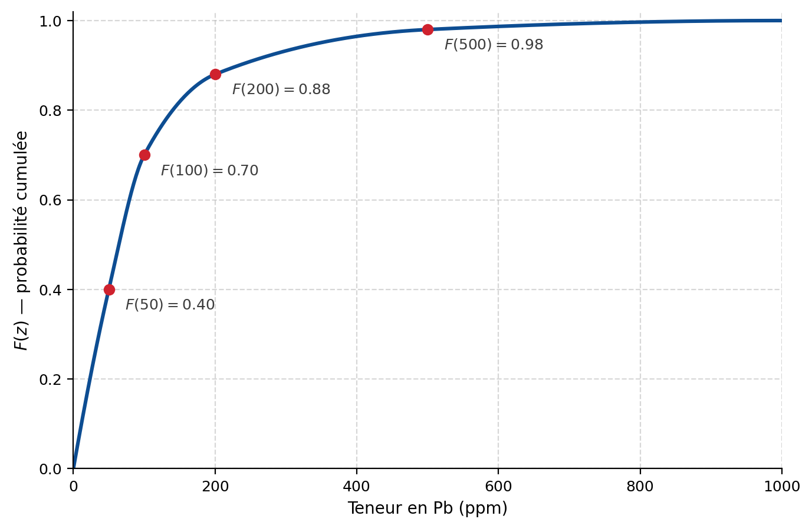
On krige un point \(\mathbf{x}_0\) à l’aide de 3 points situés dans le voisinage. Les variogrammes des indicatrices étant proportionnels, on obtient les mêmes poids de krigeage simple et de krigeage ordinaire des indicatrices aux différents seuils 50, 100, 200 et 500 ppm.
| Point | Pb observé (ppm) | Poids KIS | Poids KIO |
|---|---|---|---|
| \(\mathbf{x}_1\) | 120 | 0,40 | 0,50 |
| \(\mathbf{x}_2\) | 80 | 0,20 | 0,23 |
| \(\mathbf{x}_3\) | 310 | 0,30 | 0,27 |
Les valeurs de la fonction de répartition globale aux quatre seuils sont \(F(50)=0{,}4\), \(F(100)=0{,}7\), \(F(200)=0{,}88\) et \(F(500)=0{,}98\).
Effectuez le KI ordinaire et le KI simple aux seuils 50, 100, 200 et 500 ppm.
Qu’est-ce qui aurait été différent si les variogrammes des indicatrices aux différents seuils n’avaient pas été proportionnels?
a) On code d’abord les indicatrices \(I(\mathbf{x}_i; z_c) = \mathbf{1}\{Z(\mathbf{x}_i) \le z_c\}\) :
| Point | \(Z(\mathbf{x})\) | \(z_c = 50\) | \(z_c = 100\) | \(z_c = 200\) | \(z_c = 500\) |
|---|---|---|---|---|---|
| \(\mathbf{x}_1\) | 120 | 0 | 0 | 1 | 1 |
| \(\mathbf{x}_2\) | 80 | 0 | 1 | 1 | 1 |
| \(\mathbf{x}_3\) | 310 | 0 | 0 | 0 | 1 |
KI ordinaire \(p^*(z_c) = \sum_i \lambda_i^{OK}\, I(\mathbf{x}_i; z_c)\) (la somme des poids vaut 1) :
| \(z_c = 50\) | \(z_c = 100\) | \(z_c = 200\) | \(z_c = 500\) | |
|---|---|---|---|---|
| \(p^*_{\text{KIO}}\) | 0 | 0,23 | 0,73 | 1 |
KI simple \(p^*(z_c) = F(z_c) + \sum_i \lambda_i^{SK}\big(I(\mathbf{x}_i; z_c) - F(z_c)\big)\), où le poids de la moyenne globale est \(1 - \sum_i \lambda_i^{SK} = 0{,}1\) :
| \(z_c = 50\) | \(z_c = 100\) | \(z_c = 200\) | \(z_c = 500\) | |
|---|---|---|---|---|
| \(F(z_c)\) | 0,40 | 0,70 | 0,88 | 0,98 |
| \(p^*_{\text{KIS}}\) | \(0{,}1\times 0{,}4 = 0{,}04\) | \(0{,}2 + 0{,}1\times 0{,}7 = 0{,}27\) | \(0{,}6 + 0{,}1\times 0{,}88 = 0{,}69\) | \(0{,}9 + 0{,}1\times 0{,}98 = 0{,}99\) |
b) Si les variogrammes d’indicatrices aux différents seuils n’avaient pas été proportionnels, les poids de krigeage auraient changé d’un seuil à l’autre : il aurait fallu résoudre un système de krigeage distinct pour chaque seuil.
Exercice 5 — Le KI est-il un interpolateur exact?
Est-ce que l’espérance conditionnelle calculée par krigeage d’indicatrices est un interpolateur exact à un point échantillon lorsqu’on utilise un nombre fixe et limité de seuils (comme aux exercices précédents)?
Non. Au point échantillon, le krigeage attribue un poids de 1 à la donnée concernée : on obtient alors une probabilité de 1 d’appartenir à la classe où se situe la valeur observée. L’espérance conditionnelle est donc estimée par la valeur représentative de la classe, et non par la valeur observée elle-même. Ce n’est que si la classe devenait infiniment étroite (nombre de seuils tendant vers l’infini) que les deux valeurs coïncideraient.
Exercice 6 — Traitement d’une contrainte d’inégalité (donnée floue)
Reprenez le contexte de l’exercice 4 (contamination au plomb). Indiquez ce que l’on doit faire aux différents seuils si, au point \(\mathbf{x}_3\), la seule information disponible est que \(\text{Pb}(\mathbf{x}_3) > 310\) ppm.
L’indicatrice de \(\mathbf{x}_3\) reste parfaitement définie à tous les seuils sauf à un. Comme on sait seulement que \(Z(\mathbf{x}_3) > 310\) ppm :
- aux seuils \(z_c = 50, 100, 200\) ppm, on a \(I(\mathbf{x}_3; z_c) = 0\) (la valeur dépasse à coup sûr ces seuils) ;
- au seuil \(z_c = 500\) ppm, l’indicatrice \(I(\mathbf{x}_3; 500)\) est indéterminée : on ne sait pas si \(Z(\mathbf{x}_3)\) est inférieure ou supérieure à 500 ppm.
Ainsi, seule \(I(\mathbf{x}_3; 500)\) est affectée : elle est indéfinie et ne peut être utilisée à ce seuil. Le point \(\mathbf{x}_3\) est donc retiré du krigeage uniquement au seuil 500 ppm (on krige alors avec les autres points), tandis qu’il contribue normalement aux autres seuils. C’est précisément l’avantage du krigeage d’indicatrices : il permet d’intégrer une donnée floue (contrainte d’inégalité) seuil par seuil.
Renvoi. L’exercice suivant (CP3-Q3) reprend cette même idée — un forage stoppé avant d’atteindre la cible — sous la forme d’une application chiffrée complète à quatre puits et cinq seuils.
Exercice 7 — Krigeage ordinaire d’indicatrices avec contrainte d’inégalité (4 puits)
Quatre puits d’exploration ont été forés. Les trois premiers ont recoupé le sommet de la minéralisation à des profondeurs de 305 m, 333 m et 309 m (les profondeurs étant mesurées positivement vers le bas). Le quatrième forage a dû être arrêté à 318 m, avant d’atteindre le sommet de la minéralisation, et aucune autre information n’est disponible à ce stade.
Le variogramme de la profondeur est sphérique. Le variogramme du \(\log(\text{profondeur})\) lui est proportionnel, de même que les variogrammes des différentes indicatrices, ce qui implique que les poids de krigeage restent invariants d’un seuil à l’autre. Lorsque l’on effectue le krigeage ordinaire de la profondeur au point \(\mathbf{x}_0\) en utilisant les points \(\mathbf{x}_1\) à \(\mathbf{x}_4\) d’une part, et \(\mathbf{x}_1\) à \(\mathbf{x}_3\) d’autre part, on obtient les poids suivants :
| Point | Poids de KO utilisant \(\mathbf{x}_1\) à \(\mathbf{x}_4\) (4 points) | Poids de KO utilisant \(\mathbf{x}_1\) à \(\mathbf{x}_3\) (3 points) |
|---|---|---|
| \(\mathbf{x}_1\) | 0,20 | 0,25 |
| \(\mathbf{x}_2\) | 0,15 | 0,20 |
| \(\mathbf{x}_3\) | 0,30 | 0,55 |
| \(\mathbf{x}_4\) | 0,35 | — |
(Paramètres du variogramme sphérique \(C_0\), \(C\) et \(a\) non récupérés : ils figuraient dans un objet-équation Word non extrait par l’extraction table-aware. Comme les variogrammes sont proportionnels, les poids de krigeage ci-dessus sont invariants d’un seuil à l’autre et suffisent à résoudre l’exercice ; les valeurs précises de \(C_0\), \(C\), \(a\) ne sont pas requises.)
Utilisez toutes les informations disponibles (incluant le forage stoppé en \(\mathbf{x}_4\)) pour prédire, par krigeage ordinaire d’indicatrices, l’espérance conditionnelle de la profondeur du sommet de la minéralisation au point \(\mathbf{x}_0\), ainsi que la variance conditionnelle associée. Considérez les seuils 300, 310, 320, 330 et 340 m et utilisez les milieux des classes comme valeurs représentatives.
Codage des indicatrices. On code \(I(\mathbf{x}_i; z_c) = \mathbf{1}\{Z(\mathbf{x}_i) \le z_c\}\) pour chaque puits, en exploitant la nature de la donnée :
- \(\mathbf{x}_1 = 305\), \(\mathbf{x}_2 = 333\), \(\mathbf{x}_3 = 309\) : indicatrices parfaitement définies aux cinq seuils ;
- \(\mathbf{x}_4 > 318\) (forage stoppé) : c’est une contrainte d’inégalité. L’indicatrice est connue aux seuils inférieurs ou égaux à 318 m (\(I(\mathbf{x}_4; 300) = I(\mathbf{x}_4; 310) = 0\), car la profondeur du sommet dépasse à coup sûr ces valeurs), mais indéterminée aux seuils 320, 330 et 340 m (on ignore si \(Z(\mathbf{x}_4)\) s’y trouve en dessous ou au dessus).
On obtient le tableau de codage suivant (où « — » marque une indicatrice indéterminée) :
| Indicatrice | 300 | 310 | 320 | 330 | 340 |
|---|---|---|---|---|---|
| \(I(\mathbf{x}_1; z_c)\), \(z_1 = 305\) | 0 | 1 | 1 | 1 | 1 |
| \(I(\mathbf{x}_2; z_c)\), \(z_2 = 333\) | 0 | 0 | 0 | 0 | 1 |
| \(I(\mathbf{x}_3; z_c)\), \(z_3 = 309\) | 0 | 1 | 1 | 1 | 1 |
| \(I(\mathbf{x}_4; z_c)\), \(z_4 > 318\) | 0 | 0 | — | — | — |
| \(F^*(\mathbf{x}_0; z_c)\) | 0 | 0,50 | 0,80 | 0,80 | 1 |
La dernière ligne \(F^*(\mathbf{x}_0; z_c) = \sum_i \lambda_i\, I(\mathbf{x}_i; z_c)\) est la CDF locale estimée (après vérification des relations d’ordre), obtenue avec le jeu de poids approprié à chaque seuil.
Choix du jeu de poids selon le seuil. Grâce à la proportionnalité des variogrammes, les poids sont les mêmes pour tous les seuils :
- aux seuils 300 et 310 m, les quatre puits portent une indicatrice définie : on utilise le jeu de poids à 4 points \((\mathbf{x}_1\text{–}\mathbf{x}_4)\) ;
- aux seuils 320, 330 et 340 m, \(\mathbf{x}_4\) est inutilisable : on utilise le jeu de poids à 3 points \((\mathbf{x}_1\text{–}\mathbf{x}_3)\).
Estimation de la CDF locale. À chaque seuil, \(p^*(z_c) = \sum_i \lambda_i\, I(\mathbf{x}_i; z_c)\) avec le jeu de poids approprié. On vérifie/corrige les relations d’ordre (CDF croissante, comprise dans \([0,1]\)).
Valeurs représentatives. Les milieux des classes définies par les seuils 300–310–320–330–340 sont 305, 315, 325 et 335 m.
Espérance conditionnelle — moyenne des milieux de classe pondérée par les probabilités de classe \(p_k = p^*(z_{c,k}) - p^*(z_{c,k-1})\) :
\[ \mathbb{E}[Z \mid \cdots] = \sum_k p_k \,\bar z_k . \]
Variance conditionnelle :
\[ \operatorname{Var}[Z \mid \cdots] = \sum_k p_k \,\bar z_k^{\,2} - \big(\mathbb{E}[Z \mid \cdots]\big)^2 . \]
L’intérêt de l’exercice est de montrer que le forage stoppé n’est pas perdu : il informe pleinement les seuils bas (300, 310 m), même s’il doit être écarté aux seuils élevés.
Exercice 8 — Indicatrice complémentaire et cokrigeage
Soit une indicatrice \(I_A\) prenant la valeur 1 quand le faciès A est observé et 0 si le faciès B est observé (ce sont les deux seuls faciès présents). On note \(I_B = 1 - I_A\) l’indicatrice complémentaire.
Quelle relation existe-t-il entre le variogramme de l’indicatrice \(I_A\) et celui de l’indicatrice complémentaire \(I_B\)?
Que vaut le variogramme croisé de \(I_A\) et \(I_B\)?
En supposant la symétrie en \(\mathbf{h}\) et la présence, pour \(I_A\), d’un effet de pépite \(b_1\) et d’une composante sphérique de portée \(a\) et d’amplitude \(b_2\), décrivez le modèle linéaire de corégionalisation (MLC) de ces deux indicatrices. Est-il admissible?
Est-ce un modèle à covariances proportionnelles? Concluez sur l’utilité du cokrigeage de \(I_A\) et \(I_B\).
a) Comme \(I_B = 1 - I_A\) :
\[ \gamma_{I_B,I_B}(\mathbf{h}) = \tfrac12\,\mathbb{E}\!\left[\big(I_B(\mathbf{x}) - I_B(\mathbf{x}+\mathbf{h})\big)^2\right] = \tfrac12\,\mathbb{E}\!\left[\big(I_A(\mathbf{x}+\mathbf{h}) - I_A(\mathbf{x})\big)^2\right] = \gamma_{I_A,I_A}(\mathbf{h}). \]
Les deux indicatrices ont donc le même variogramme pour tout \(\mathbf{h}\).
b) Variogramme croisé :
\[ \gamma_{I_A,I_B}(\mathbf{h}) = \tfrac12\,\mathbb{E}\!\left[\big(I_A(\mathbf{x}) - I_A(\mathbf{x}+\mathbf{h})\big)\big(I_B(\mathbf{x}) - I_B(\mathbf{x}+\mathbf{h})\big)\right] = -\,\gamma_{I_A,I_A}(\mathbf{h}). \]
Le variogramme croisé est l’opposé du variogramme direct.
c) En posant \(\gamma_{I_A,I_A}(\mathbf{h}) = b_1 + b_2\,\mathrm{Sph}_a(\mathbf{h})\), le MLC s’écrit sous forme matricielle :
\[ \boldsymbol{\Gamma}(\mathbf{h}) = \begin{pmatrix} b_1 & -b_1 \\ -b_1 & b_1 \end{pmatrix} + \begin{pmatrix} b_2 & -b_2 \\ -b_2 & b_2 \end{pmatrix}\mathrm{Sph}_a(\mathbf{h}). \]
Chacune des deux matrices de coefficients a un déterminant nul (\(b_1^2 - b_1^2 = 0\) et \(b_2^2 - b_2^2 = 0\)) et est semi-définie positive ; le modèle est donc admissible.
d) Oui, c’est un modèle à covariances proportionnelles : on peut le réécrire
\[ \boldsymbol{\Gamma}(\mathbf{h}) = \begin{pmatrix} 1 & -1 \\ -1 & 1 \end{pmatrix}\big(b_1 + b_2\,\mathrm{Sph}_a(\mathbf{h})\big). \]
Le cokrigeage est donc inutile : avec des covariances proportionnelles, le cokrigeage de \(I_A\) et \(I_B\) se ramène au krigeage de chacune. D’ailleurs, les matrices de cokrigeage seraient toutes singulières (puisque \(I_B = 1 - I_A\) est redondante).
Exercice 9 — Cas à \(p > 2\) faciès
Quand il y a \(p > 2\) faciès, que peut-on dire de :
\(\displaystyle\sum_{i=1}^{p} I_i(\mathbf{x})\) ?
\(\displaystyle\operatorname{Var}\!\left(\sum_{i=1}^{p} I_i(\mathbf{x})\right) = \sum_{i=1}^{p}\operatorname{Var}\big(I_i(\mathbf{x})\big) + \sum_{i=1}^{p}\sum_{\substack{j=1\\ j\ne i}}^{p}\operatorname{Cov}\big(I_i(\mathbf{x}), I_j(\mathbf{x})\big)\) ?
Qu’est-ce que cela implique sur les matrices de coefficients du modèle linéaire de corégionalisation à \(p\) variables?
a) En tout point, un seul faciès est présent, donc une seule indicatrice vaut 1 et les autres 0 :
\[ \sum_{i=1}^{p} I_i(\mathbf{x}) = 1 \quad \text{en tout point.} \]
b) Puisque la somme est constante (égale à 1), sa variance est nulle :
\[ \operatorname{Var}\!\left(\sum_{i=1}^{p} I_i(\mathbf{x})\right) = 0 . \]
c) Cette contrainte impose que chaque matrice de coefficients du modèle linéaire de corégionalisation à \(p\) variables soit singulière (déterminant nul) : les sommes par lignes (et par colonnes) des coefficients de corégionalisation s’annulent, ce qui reflète la dépendance linéaire \(\sum_i I_i = 1\) entre les \(p\) indicatrices.
14.12 Simulations géostatistiques de variable continue
Exercice 1 — Transformation gaussienne (données de Dallas, plomb)
Lorsque la distribution n’est pas normale, on peut transformer la variable \(Z(\mathbf{x})\) vers \(Y(\mathbf{x})\) qui suit une distribution normale, au moyen de l’anamorphose \(Z=\varphi(Y)\). Toutefois la transformation n’assure pas que \(Y(\mathbf{x})\) soit multigaussien (p. ex. données de Dallas). Si le champ n’est pas gaussien, le variogramme de \(Z(\mathbf{x})\) ne sera pas reproduit exactement, de même que toutes les covariances et covariances croisées des indicatrices. La transformation gaussienne se fait habituellement sous forme graphique.
La figure ci-dessous présente, pour les données ponctuelles de plomb de Dallas, les fonctions de répartition de \(\ln(\text{plomb})\) et d’une \(\mathcal{N}(0,1)\), qui servent de table de correspondance pour l’anamorphose.

On a observé \(\text{Pb}=250\) ppm. Quelle valeur \(\mathcal{N}(0,1)\) doit-on associer à cette valeur de Pb pour la simulation ? Idem pour \(\text{Pb}=50\) ppm.
On a simulé la valeur normale \(1{,}5\). Quelle valeur de Pb doit-on associer à cette valeur simulée ? Idem pour \(\mathcal{N}(0,1)=-1\).
Pour représenter la teneur en plomb d’un bloc de \(30\text{ m}\times 30\text{ m}\), on simule \(25\) valeurs normales corrélées sur autant de points d’une grille centrée dans le bloc. Doit-on :
- faire la moyenne des valeurs normales et appliquer la transformation inverse à cette moyenne pour obtenir \(\ln(Z_v)\) puis évaluer l’exponentielle, ou
- transformer chaque valeur normale en \(\ln(\text{plomb})\) et faire la moyenne des \(25\) valeurs avant de prendre l’exponentielle, ou
- transformer chaque valeur ponctuelle vers \(\ln(\text{plomb})\), évaluer l’exponentielle pour chaque valeur séparément et faire la moyenne des \(25\) valeurs de plomb obtenues ?
Pourquoi ?
On obtient les valeurs normales simulées \((-2,\ -1{,}5,\ -1)\). Calculez les valeurs de plomb correspondantes et l’écart-type de ces valeurs de plomb. Faites la même chose avec les valeurs normales \((1,\ 1{,}5,\ 2)\). Que peut-on conclure ?
a) Par lecture graphique de la transformation : \(\text{Pb}=250 \Rightarrow y=0{,}54\) ; \(\text{Pb}=50 \Rightarrow y=-1{,}24\).
b) \(y=1{,}5 \Rightarrow \text{Pb}=810\) ; \(y=-1 \Rightarrow \text{Pb}=59\).
c) La réponse est (iii). Physiquement, la teneur d’un bloc est la moyenne des teneurs ponctuelles dans le bloc. Comme les transformations impliquées sont non linéaires, il faut appliquer les transformations aux teneurs ponctuelles (ainsi le log d’une moyenne de valeurs n’est pas la moyenne des log des valeurs ; ici on veut bien la moyenne arithmétique des teneurs ponctuelles, donc on transforme chaque valeur normale vers le plomb avant de moyenner).
d) Les valeurs normales \((-2,\ -1{,}5,\ -1)\) donnent les teneurs \((27,\ 40{,}5,\ 59)\), dont l’écart-type (division par \(n-1\)) vaut \(16{,}1\), alors que \((1,\ 1{,}5,\ 2)\) donnent \((486,\ 810,\ 2459)\), dont l’écart-type vaut \(1076\). On voit donc que l’écart-type dépend des teneurs, contrairement à l’écart-type de krigeage \(\sigma_{SK}\) et similairement à l’écart-type conditionnel calculé par krigeage d’indicatrices.
Exercice 2 — Recuit simulé
À l’itération « \(n\) » de l’algorithme du recuit simulé, on a \(O_n=100\). Le paramètre de température vaut \(T=10\). Le critère de Metropolis accepte une perturbation candidate qui augmente la fonction objectif avec la probabilité \(\mathbb{P}=\exp\!\left(-\Delta O/T\right)\) (et l’accepte toujours si elle la diminue). Déterminez si l’on doit accepter la perturbation candidate dans chacun des cas suivants, où \(\text{rand}\) est un nombre aléatoire tiré d’une loi \(\mathcal{U}(0,1)\) :
\(O_{\text{candidat}}=95\) et \(\text{rand}=0{,}67\) ;
\(O_{\text{candidat}}=105\) et \(\text{rand}=0{,}67\) ;
\(O_{\text{candidat}}=105\) et \(\text{rand}=0{,}43\) ;
\(O_{\text{candidat}}=105\), \(\text{rand}=0{,}43\) mais \(T\) vaut \(5\) plutôt que \(10\).
En comparant c) et d), comment se comporte l’algorithme au fur et à mesure que l’on décroît le paramètre de température \(T\) ?
a) \(O\) décroît (\(95<100\)) : on accepte toujours la modification.
b) \(\Delta O = 105-100 = 5\). On accepte avec probabilité \(\exp(-5/10)=0{,}606\). Comme \(\text{rand}=0{,}67>0{,}606\), on refuse la modification.
c) Même probabilité d’acceptation \(0{,}606\). Comme \(\text{rand}=0{,}43<0{,}606\), on accepte la modification proposée.
d) On accepte avec probabilité \(\exp(-5/5)=\exp(-1)=0{,}368\). Comme \(\text{rand}=0{,}43>0{,}368\), on refuse la modification.
e) Il devient de plus en plus difficile d’accepter une modification qui augmente la fonction objectif \(O\) au fur et à mesure que l’on diminue \(T\).
Exercice 3 — Contraintes minières
Lorsque l’on exploite des blocs dans une mine ou lorsque l’on décontamine un site, on n’opère pour ainsi dire jamais librement sur chaque bloc séparément : l’ordre dans lequel apparaissent les teneurs est habituellement très important. Pour accéder à un bloc, on doit miner les blocs qui le précèdent (selon la direction du minage indiquée). Si un bloc est miné, on peut ou non le traiter.
Le coût de minage est \(0{,}5\) et le coût de traitement est \(2{,}6\). On considère les quatre scénarios de teneurs de blocs suivants (la colonne A est minée en premier, puis B, puis C) :
| Bloc | Scénario a) | Scénario b) | Scénario c) | Scénario d) |
|---|---|---|---|---|
| A | 4 | 2 | 2 | 3 |
| B | 2 | 4 | 3 | 4 |
| C | 3 | 3 | 4 | 2 |
Calculez le tonnage de minerai, la teneur moyenne du minerai, le tonnage de stérile qui doit être miné et le profit de chaque scénario sous la contrainte minière, et comparez avec les mêmes quantités en sélection libre.
Dans les scénarios a) à d), le tonnage de minerai est égal ou supérieur à celui obtenu par sélection libre. Illustrez un scénario de teneurs de blocs où le tonnage de minerai est inférieur (conservez les mêmes coûts).
Dans les scénarios a) à d), la teneur du minerai est égale ou inférieure à celle obtenue par sélection libre. Illustrez un scénario de coûts et de teneurs de blocs où la teneur du minerai est supérieure à celle obtenue par sélection libre.
Est-il possible d’avoir un profit sous contrainte minière qui soit supérieur à celui obtenu par sélection libre ?
a) Sélection libre (référence) : on mine seulement le bloc de teneur \(4\) : tonnage de minerai \(=1\), teneur moyenne \(=4\), profit \(=4-2{,}6-0{,}5=0{,}9\).
- Scénario a) : identique à la sélection libre.
- Scénario b) : on mine A et B, mais seul B est traité. Tonnage de minerai \(1\), teneur moyenne \(4\), profit \(4-2\times 0{,}5-2{,}6=0{,}4\), tonnage de stérile \(1\).
- Scénario c) : on mine A, B et C ; on traite B et C. Tonnage de minerai \(2\), teneur moyenne \(3{,}5\), profit \((4+3)-3\times 0{,}5-2\times 2{,}6=0{,}3\), tonnage de stérile \(1\). Noter que l’on doit traiter B même si sa valeur nette est \(3-0{,}5-2{,}6=-0{,}1\) : si on ne le traite pas, on aura un profit de \(4-3\times 0{,}5-2{,}6=-0{,}1\).
- Scénario d) : on mine et on traite A et B. Tonnage de minerai \(2\), teneur moyenne \(3{,}5\), profit \((4+3)-2\times 0{,}5-2\times 2{,}6=0{,}8\), tonnage de stérile \(0\).
b) Avec A, B, C \(= 2,\ 3,\ 3{,}5\) : on ne mine alors aucun bloc (aucune séquence ne devient rentable sous contrainte), alors que la sélection libre minerait le bloc de teneur \(3{,}5\).
c) Avec A, B, C \(= 4,\ 2,\ 3{,}2\) : la sélection libre prend \(4\) et \(3{,}2\), dont la teneur moyenne est \(3{,}6\), alors que la sélection sous contrainte ne prend que \(4\) (teneur du minerai \(=4>3{,}6\)).
d) Non, c’est impossible. C’est la seule fonction qui a un comportement entièrement prévisible en lien avec les contraintes minières : plus celles-ci sont sévères, plus il y a perte de profits.
Exercice 4 — Simulation séquentielle gaussienne
La figure ci-dessous montre les fonctions de répartition d’une \(\mathcal{N}(0,1)\) et du \(\ln(\text{Pb})\) obtenu à partir d’échantillons d’un champ de contamination au plomb. Elle sert de table d’anamorphose \(Z=\varphi(Y)\).
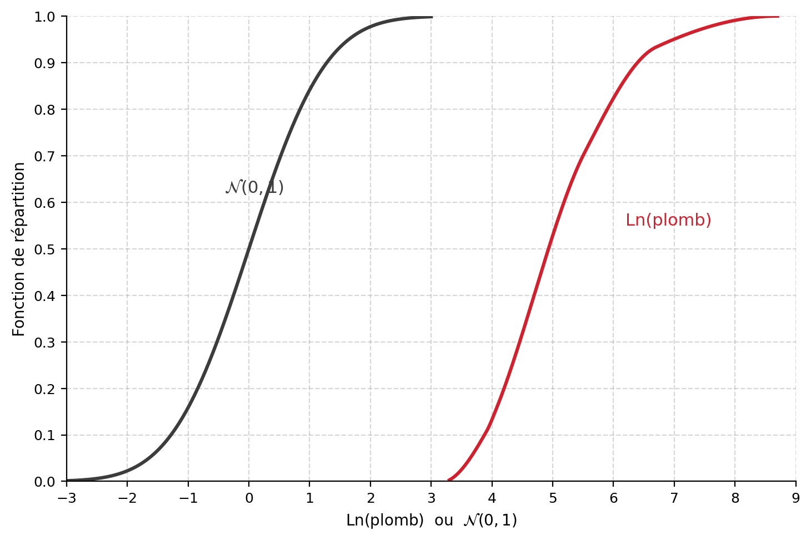
- On a observé trois données aux localisations \(\mathbf{x}_1\), \(\mathbf{x}_2\), \(\mathbf{x}_3\), avec les teneurs en Pb indiquées. Complétez le tableau ci-dessous en convertissant chaque teneur en sa valeur gaussienne \(Y\) par lecture de la transformation.
| Donnée | \(\mathbf{x}_1\) | \(\mathbf{x}_2\) | \(\mathbf{x}_3\) |
|---|---|---|---|
| Pb (ppm) | … | … | … |
| \(Y=\varphi^{-1}(Z)\) | ? | ? | ? |
La variable gaussienne \(Y(\mathbf{x})\) associée aux teneurs de Pb présente un variogramme sphérique isotrope de portée \(400\) m, avec \(C_0=0\) et \(C=1\).
- Quelles sont les unités de \(C_0\) et de \(C\) ?
On effectue le krigeage simple de \(Y\) au point \(\mathbf{x}_0\) et l’on obtient le système de krigeage donnant les poids \(\boldsymbol{\lambda}\).
Quelles seront la valeur krigée \(Y^*(\mathbf{x}_0)\) et la variance de krigeage simple \(\sigma_{SK}^2\) en ce point \(\mathbf{x}_0\) ? (Si vous n’avez pas répondu à la question a), posez respectivement les valeurs normales \(0{,}25\), \(-0{,}75\), \(0{,}5\) pour les données \(1\), \(2\) et \(3\).)
On tire d’une distribution \(\mathcal{U}(0,1)\) la valeur \(0{,}7\). Quelle est la valeur gaussienne simulée à ce point ?
Quelle est la concentration de plomb que l’on simule à ce point ? (Posez la valeur gaussienne simulée à \(1{,}4\) si vous n’avez pas pu répondre à d).)
b) \(C_0\) et \(C\) sont les composantes du variogramme de la variable gaussienne \(Y\), dont la variance est unitaire : ils n’ont aucune unité.
c) La valeur krigée est \(Y^*(\mathbf{x}_0)=\sum_i \lambda_i\, Y_i\) (les poids \(\lambda_i\) sont fournis par la résolution du système de krigeage simple), et la variance de krigeage simple est \(\sigma_{SK}^2 = C(0) - \sum_i \lambda_i\, C(\mathbf{x}_0-\mathbf{x}_i)\).
d) On simule la valeur gaussienne par \(Y^{(s)}(\mathbf{x}_0)=Y^*(\mathbf{x}_0)+\sigma_{SK}\,\Phi^{-1}(0{,}7)\). Par lecture de la table de la loi normale, \(\Phi^{-1}(0{,}7)\approx 0{,}5244\).
e) On convertit la valeur gaussienne simulée vers le plomb par anamorphose inverse \(Z=\varphi(Y)\). Par lecture graphique, avec une valeur gaussienne simulée d’environ \(1{,}4\), on lit \(\ln(\text{Pb})\approx 6\), soit une concentration de plomb de \(e^{6}\approx 403{,}42\) ppm.
Exercice 5 — Propriétés des simulations (non conditionnelles vs conditionnelles)
Pour chacune des questions a) à f), écrivez uniquement, sous forme mathématique, la propriété en jeu (à la manière d’un exemple : « la moyenne des valeurs simulées vaut \(m\) »).
Pour a) à d), on a un champ en 2D de taille \(G\) pour lequel on génère un très grand nombre \(S\) de simulations non conditionnelles \(Z^{(s)}(\mathbf{x})\) sur une grille serrée de points. Les simulations sont effectuées avec moyenne théorique \(m\) et variance théorique \(\sigma^2\).
On se place à un point donné \(\mathbf{x}_0\) et on examine les valeurs obtenues pour les différentes réalisations. Quelles sont la moyenne et la variance des valeurs simulées à ce point ?
Pour la \(1^{\text{re}}\) réalisation, on calcule la variance expérimentale sur l’ensemble du domaine. On répète l’exercice pour la \(2^{\text{e}}\) réalisation, la \(3^{\text{e}}\) et ainsi de suite. Que vaut la moyenne (calculée sur l’ensemble des réalisations) des variances expérimentales obtenues pour chaque réalisation ?
Pour chaque réalisation, on regroupe les valeurs en blocs de taille \(V\) (c.-à-d. on calcule la moyenne des valeurs à l’intérieur du bloc). Pour un bloc donné, quelles seront la moyenne et la variance des teneurs de ce bloc sur l’ensemble des réalisations ?
Pour la \(1^{\text{re}}\) réalisation, on calcule la variance expérimentale des teneurs des blocs de taille \(V\) sur l’ensemble du domaine de taille \(G\). On répète l’exercice pour chaque réalisation. Que vaut la moyenne des variances expérimentales ainsi obtenues ?
Pour e) et f), on considère cette fois un très grand nombre de simulations conditionnelles sur une grille de points très serrée, toujours sur un champ en 2D de taille \(G\).
On se place à un point donné \(\mathbf{x}_0\) et on examine les valeurs obtenues pour les différentes réalisations. Quelles sont la moyenne et la variance des valeurs simulées à ce point ?
Pour chaque réalisation, on regroupe les valeurs simulées en blocs de taille \(V\). Pour un bloc donné, quelles seront la moyenne et la variance des teneurs de ce bloc sur l’ensemble des réalisations ?
a) Moyenne \(m\) et variance \(\sigma^2\).
b) \(D^2(\cdot\,|\,G)\) : la variance de dispersion des points dans le domaine \(G\).
c) Moyenne \(m\) et variance \(D^2(V\,|\,G)\) : la variance de dispersion des blocs de taille \(V\) dans \(G\).
d) \(D^2(V\,|\,G)\).
e) La valeur obtenue par krigeage simple, \(Z^*_{SK}(\mathbf{x}_0)\), et la variance de krigeage simple \(\sigma_{SK}^2(\mathbf{x}_0)\).
f) La valeur obtenue par krigeage simple de bloc, \(Z^*_{SK}(V)\), et la variance de krigeage simple de bloc \(\sigma_{SK}^2(V)\).
Exercice 6 — Post-conditionnement par krigeage simple
Le tableau suivant présente \(20\) valeurs simulées (non conditionnellement) d’une v.a. suivant un variogramme sphérique avec \(C=10\), \(a=30\), aux coordonnées \(x=1\) à \(x=20\). Des données ont été observées aux points \(x_5\), \(x_{10}\) et \(x_{20}\).
| \(x\) | \(Z(x)\) | \(Z^*(x)\) | \(Z^{(s)}(x)\) | \(Z^{(s)*}(x)\) | \(Z^{(s)}_c{}^*(x)\) |
|---|---|---|---|---|---|
| 1 | — | \(0{,}23\) | \(-3{,}55\) | \(-1{,}19\) | |
| 2 | — | \(0{,}18\) | \(-2{,}74\) | \(-1{,}25\) | |
| 3 | — | \(0{,}14\) | \(-1{,}64\) | \(-1{,}29\) | |
| 4 | — | \(0{,}08\) | \(-1{,}89\) | \(-1{,}33\) | |
| 5 | \(0{,}02\) | \(0{,}02\) | \(-1{,}37\) | \(-1{,}37\) | |
| 6 | — | \(-0{,}08\) | \(-1{,}74\) | \(-1{,}66\) | |
| 7 | — | \(-0{,}19\) | \(-3{,}16\) | \(-1{,}94\) | |
| 8 | — | \(-0{,}30\) | \(-3{,}39\) | \(-2{,}21\) | |
| 9 | — | \(-0{,}41\) | \(-3{,}51\) | \(-2{,}48\) | |
| 10 | \(-0{,}53\) | \(-0{,}53\) | \(-2{,}74\) | \(-2{,}74\) | |
| 11 | — | \(-0{,}75\) | \(-3{,}60\) | \(-2{,}26\) | |
| 12 | — | \(-0{,}97\) | \(-2{,}80\) | \(-1{,}77\) | |
| 13 | — | \(-1{,}20\) | \(-1{,}39\) | \(-1{,}27\) | |
| 14 | — | \(-1{,}42\) | \(-0{,}33\) | \(-0{,}77\) | |
| 15 | — | \(-1{,}65\) | \(-1{,}05\) | \(-0{,}27\) | |
| 16 | — | \(-1{,}88\) | \(-0{,}04\) | \(0{,}23\) | |
| 17 | — | \(-2{,}11\) | \(0{,}25\) | \(0{,}74\) | |
| 18 | — | \(-2{,}34\) | \(1{,}23\) | \(1{,}24\) | |
| 19 | — | \(-2{,}57\) | \(2{,}53\) | \(1{,}74\) | |
| 20 | \(-2{,}80\) | \(-2{,}80\) | \(2{,}24\) | \(2{,}24\) |
Ici \(Z^*(x)\) est le krigeage simple des données observées, \(Z^{(s)}(x)\) la simulation non conditionnelle, et \(Z^{(s)*}(x)\) le krigeage simple des valeurs simulées aux points de donnée.
Complétez la dernière colonne du tableau donnant, aux points \(1\) à \(20\), les valeurs simulées conditionnellement aux données observées en \(x_5\), \(x_{10}\) et \(x_{20}\).
Démontrez que si l’on estime la teneur d’un point par une simulation conditionnelle en ce point, la variance théorique de l’erreur est le double de celle d’un krigeage simple.
a) On applique la formule de post-conditionnement \[ Z^{(s)}_c(x) = Z^*(x) + \big(Z^{(s)}(x) - Z^{(s)*}(x)\big), \] c’est-à-dire que l’on ajoute au krigeage des données réelles l’écart de simulation (simulation non conditionnelle moins son propre krigeage). On obtient ainsi un champ qui honore exactement les valeurs observées en \(x_5\), \(x_{10}\) et \(x_{20}\).
b) En notant \(Z^{(s)}_c\) la simulation conditionnelle, l’erreur d’estimation au point \(x\) s’écrit \[ Z(x) - Z^{(s)}_c(x) = \big\{Z(x) - Z^*(x)\big\} - \big\{Z^{(s)}(x) - Z^{(s)*}(x)\big\}. \] La covariance entre l’erreur réelle \(\{Z(x)-Z^*(x)\}\) et l’erreur simulée \(\{Z^{(s)}(x)-Z^{(s)*}(x)\}\) est nulle (les deux champs sont indépendants mais partagent la même structure). Par conséquent \[ \operatorname{Var}\!\big(Z(x) - Z^{(s)}_c(x)\big) = \sigma_{SK}^2 + \sigma_{SK}^2 = 2\,\sigma_{SK}^2, \] soit le double de la variance de krigeage simple.
Exercice 7 — Décomposition de Cholesky (méthode LU)
On simule une variable \(Z\) à \(4\) emplacements à l’aide de la décomposition de Cholesky. Les emplacements sont placés dans l’ordre \(1, 2, 3, 4\) dans la matrice de covariance \(\mathbf{K}\). La factorisation \(\mathbf{K}=\mathbf{L}\mathbf{L}^\top\) donne la matrice triangulaire inférieure \(\mathbf{L}\) suivante :
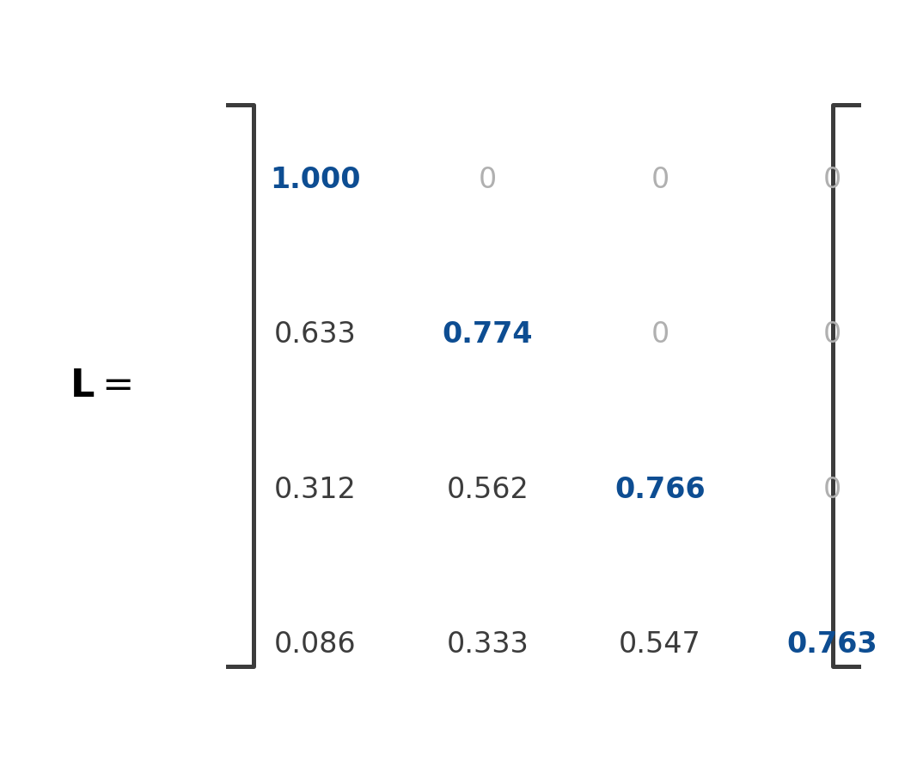
Quelle est la variance du processus stochastique \(Z\) ?
Quelle est la covariance entre \(Z_3\) et \(Z_4\) ?
On a observé \(Z_1\) et \(Z_2\). Déterminez les valeurs de \(Y_1\) et \(Y_2\) qui permettent d’assurer un conditionnement exact par la méthode de Cholesky.
Quelle est l’espérance conditionnelle de \(Z_3\) sachant \(Z_1\) et \(Z_2\) ? (Posez \(Y_1\) et \(Y_2\) si vous n’avez pas répondu à la question c).)
Quelle est la covariance conditionnelle entre \(Z_3\) et \(Z_4\) ?
On a généré le vecteur aléatoire \(\mathbf{Y}=[Y_3\ Y_4]^\top\). Que vaut \(Z_4\) (conditionnelle à \(Z_1\) et \(Z_2\)) ? (Posez \(Y_3\) et \(Y_4\) si vous n’avez pas répondu à la question c).)
Le vecteur simulé est \(\mathbf{Z}=\mathbf{L}\,\mathbf{Y}\), où \(\mathbf{Y}\sim\mathcal{N}(\mathbf{0},\mathbf{I})\) et \(\mathbf{L}\) est triangulaire inférieure. En écrivant ligne par ligne, \(Z_i = \sum_{j\le i} L_{ij}\,Y_j\).
a) La variance vaut \(\operatorname{Var}(Z_i)=\sum_{j\le i} L_{ij}^2 = (\mathbf{L}\mathbf{L}^\top)_{ii} = K_{ii}\) : c’est le terme diagonal de \(\mathbf{K}\) (palier), identique pour tous les emplacements en stationnarité du second ordre.
b) \(\operatorname{Cov}(Z_3,Z_4)=\sum_{j} L_{3j} L_{4j} = (\mathbf{L}\mathbf{L}^\top)_{34}=K_{34}\).
c) Le conditionnement exact par LU s’obtient en résolvant, pour les emplacements observés, le système triangulaire \(\mathbf{L}_{\text{obs}}\,\mathbf{Y}_{\text{obs}}=\mathbf{Z}_{\text{obs}}\). Comme \(\mathbf{L}\) est triangulaire inférieure, on procède par substitution avant : \[ Y_1=\frac{Z_1}{L_{11}},\qquad Y_2=\frac{Z_2 - L_{21}Y_1}{L_{22}}. \] Ces \(Y_1, Y_2\) remplacent les composantes aléatoires correspondantes pour forcer la réalisation à honorer \(Z_1\) et \(Z_2\).
d) L’espérance conditionnelle s’obtient en gardant les \(Y\) conditionnés (\(Y_1, Y_2\)) et en annulant les composantes aléatoires restantes (\(\mathbb{E}[Y_3]=\mathbb{E}[Y_4]=0\)) : \[ \mathbb{E}[Z_3\mid Z_1,Z_2] = L_{31}Y_1 + L_{32}Y_2. \]
e) La covariance conditionnelle ne fait intervenir que les composantes aléatoires non conditionnées (\(Y_3, Y_4\), de variance \(1\) et indépendantes) : \[ \operatorname{Cov}(Z_3,Z_4\mid Z_1,Z_2) = L_{33}L_{43} \,. \] (seul le produit des coefficients sur les colonnes encore aléatoires subsiste ; les colonnes \(1\) et \(2\), devenues déterministes, n’y contribuent plus.)
f) En conditionnant à \(Z_1, Z_2\) et en injectant le vecteur aléatoire généré \(\mathbf{Y}=[Y_3\ Y_4]^\top\) : \[ Z_4 = L_{41}Y_1 + L_{42}Y_2 + L_{43}Y_3 + L_{44}Y_4, \] où \(Y_1, Y_2\) proviennent du conditionnement (question c) et \(Y_3, Y_4\) du tirage.
Exercice 8 — Étude de cas : arsenic autour d’une fonderie
Exercice de synthèse — mobilise aussi le krigeage d’indicatrices (ch. 11) et le cokrigeage (ch. 10).
Vous devez appuyer une équipe d’ingénierie environnementale dans l’évaluation du risque lié à la présence d’arsenic (As) autour d’une fonderie en activité. Selon les normes en vigueur, toute zone dont la concentration en As dépasse \(50\) ppm est considérée comme contaminée (critère C du Guide d’intervention — Protection des sols et réhabilitation des terrains contaminés).
Une campagne d’échantillonnage a mesuré les concentrations d’As dans \(148\) forages environnementaux répartis de manière non uniforme autour de la zone d’étude. Les résultats montrent une forte hétérogénéité spatiale, avec plusieurs valeurs élevées à proximité de la fonderie. On vous demande de :
- cartographier la probabilité \(\mathbb{P}\big(\text{As}(\mathbf{x})>50\ \text{ppm}\big)\) en tout point du domaine ;
- fournir une estimation de la proportion totale de la surface où le seuil de \(50\) ppm est dépassé, accompagnée d’une mesure d’incertitude conditionnelle (p. ex. un intervalle de confiance à \(95\,\%\)).
- Proposez une méthodologie, basée sur les outils géostatistiques vus en classe, qui permet de répondre à ces questions. Répondez par une liste à puces.
Par ailleurs, la concentration en cuivre (Cu) a aussi été caractérisée en \(248\) localisations (\(148\) colocalisées avec l’As), et l’on observe une forte corrélation spatiale et statistique entre Cu et As.
- Comment modifieriez-vous votre algorithme ou votre démarche pour tenir compte de cette variable secondaire (Cu) lors de l’estimation des probabilités de dépassement et de l’incertitude associée ? Modifiez seulement les puces de la question a).
a) Deux familles de méthodologies répondent au problème.
Par simulations géostatistiques :
- Transformer les données vers une variable (quasi) gaussienne, p. ex. par anamorphose graphique \(Z=\varphi(Y)\) (transformation log ou normal-score).
- Modéliser le variogramme de la variable transformée : variogramme expérimental puis ajustement d’un modèle (p. ex. sphérique).
- Simuler plusieurs réalisations conditionnelles (p. ex. \(S=100\)) par simulation séquentielle gaussienne (SGS) ou par Cholesky (LU). Chaque réalisation \(Z^{(s)}(\mathbf{x})\) est un scénario possible du champ d’As.
- Transformation inverse de chaque réalisation vers l’espace original (\(Z=\varphi(Y)\)).
- Carte de probabilité de dépassement : en chaque point de la grille, compter la proportion de réalisations qui dépassent \(50\) ppm, \[ \hat{\mathbb{P}}\big(\text{As}(\mathbf{x})>50\big)=\frac{1}{S}\sum_{s=1}^{S}\mathbb{1}\!\left\{Z^{(s)}(\mathbf{x})>50\right\}. \]
- Proportion de surface contaminée : pour chaque réalisation, calculer la fraction de surface où \(\text{As}>50\), puis moyenner sur les \(S\) réalisations ; les percentiles \(2{,}5\,\%\) et \(97{,}5\,\%\) de cette distribution donnent l’intervalle de confiance à \(95\,\%\).
Par krigeage d’indicatrices :
- Choisir plusieurs seuils de teneur (p. ex. \(10, 25, 50, 75, 100, 150\) ppm), à caler sur l’histogramme des données.
- Coder une indicatrice pour chaque seuil \(z_k\) : \(i(\mathbf{x};z_k)=\mathbb{1}\{Z(\mathbf{x})\le z_k\}\).
- Modéliser un variogramme d’indicatrice pour chaque seuil (expérimental + modèle théorique).
- Kriger l’indicatrice pour chaque point et chaque seuil, ce qui donne une série de probabilités cumulées.
- Reconstruire la CDF locale : interpoler entre les seuils (en corrigeant les relations d’ordre).
- En déduire les quantités demandées : \(\mathbb{P}(\text{As}>50)=1-F^*(\mathbf{x};50)\) ; la proportion de surface contaminée est la moyenne spatiale de cette probabilité.
- Incertitude : l’intervalle de confiance à \(95\,\%\) se lit directement sur la CDF locale (seuils atteignant \(2{,}5\,\%\) et \(97{,}5\,\%\)).
b) Il suffit d’adapter l’algorithme au cas multivariable en remplaçant les matrices de krigeage par les matrices de cokrigeage. Ainsi, pour la voie indicatrice on utilise le cokrigeage d’indicatrices, et pour les voies LU et SGS on utilise la matrice de cokrigeage simple (la variable secondaire Cu, fortement corrélée et plus densément échantillonnée, améliore l’estimation et resserre l’incertitude).
14.13 Simulations géostatistiques de variable catégorielle
Exercice 1 — Proportions de faciès dans un modèle gaussien tronqué
Dans un modèle de simulation gaussienne tronquée (TGS), un champ latent \(Z(\mathbf{x})\) de loi \(\mathcal{N}(0,1)\) est découpé en trois faciès ordonnés \(s_1\), \(s_2\) et \(s_3\) à l’aide de deux seuils de troncature. On adopte les seuils \(s_1 = -0.2\) et \(s_2 = 1.1\).
Quelles proportions de faciès \(s_1\), \(s_2\) et \(s_3\) seront simulées théoriquement ? Utilisez la table de la loi \(\mathcal{N}(0,1)\).
Les trois faciès correspondent aux intervalles successifs du champ latent : \(s_1\) occupe \((-\infty, s_1]\), \(s_2\) occupe \((s_1, s_2]\) et \(s_3\) occupe \((s_2, +\infty)\). Les proportions s’obtiennent par lecture de la fonction de répartition \(\Phi\) de la loi \(\mathcal{N}(0,1)\).
Par lecture de la table : \(\Phi(0.2) = 0.5793\) et \(\Phi(1.1) = 0.8643\). Par symétrie, \(\Phi(-0.2) = 1 - 0.5793 = 0.3085\).
Les proportions des faciès sont alors : \[ \mathbb{P}(s_1) = \mathbb{P}\big(Z(\mathbf{x}) \le -0.2\big) = \Phi(-0.2) = 0.3085 \;\; (30.85\,\%), \] \[ \mathbb{P}(s_2) = \mathbb{P}\big(-0.2 < Z(\mathbf{x}) \le 1.1\big) = \Phi(1.1) - \Phi(-0.2) = 0.8643 - 0.3085 = 0.5558 \;\; (55.58\,\%), \] \[ \mathbb{P}(s_3) = \mathbb{P}\big(Z(\mathbf{x}) > 1.1\big) = 1 - \Phi(1.1) = 1 - 0.8643 = 0.1357 \;\; (13.57\,\%). \] La somme des trois proportions vaut bien \(1\).
Exercice 2 — Proportions de faciès avec d’autres seuils
On reprend le modèle gaussien tronqué de l’exercice précédent, avec un champ latent \(Z(\mathbf{x})\) de loi \(\mathcal{N}(0,1)\) et trois faciès ordonnés \(s_1\), \(s_2\), \(s_3\). Cette fois, on adopte les seuils \(s_1 = -0.85\) et \(s_2 = 0.78\).
Quelles proportions de faciès \(s_1\), \(s_2\) et \(s_3\) seront simulées théoriquement ?
Par lecture de la table de la loi \(\mathcal{N}(0,1)\) :
Pour le seuil \(s_1 = -0.85\), on lit \(\Phi(0.85) = 0.8023\), puis on prend le complément : \(\Phi(-0.85) = 1 - 0.8023 = 0.1977\).
Pour le seuil \(s_2 = 0.78\), on lit \(\Phi(0.78) = 0.7823\).
Les proportions des faciès sont alors : \[ \mathbb{P}(s_1) = \Phi(-0.85) = 0.1977 \;\; (19.76\,\%), \] \[ \mathbb{P}(s_2) = \Phi(0.78) - \Phi(-0.85) = 0.7823 - 0.1977 = 0.5847 \;\; (58.47\,\%), \] \[ \mathbb{P}(s_3) = 1 - \Phi(0.78) = 1 - 0.7823 = 0.2177 \;\; (21.77\,\%). \]
Exercice 3 — Reconnaissance des méthodes SIS et TGS
On présente six images de simulation catégorielle, identifiées de A à F, obtenues soit par simulation séquentielle d’indicatrices (SIS), soit par simulation gaussienne tronquée (TGS), avec différents modèles de variogramme (gaussien ou sphérique, isotrope ou anisotrope).
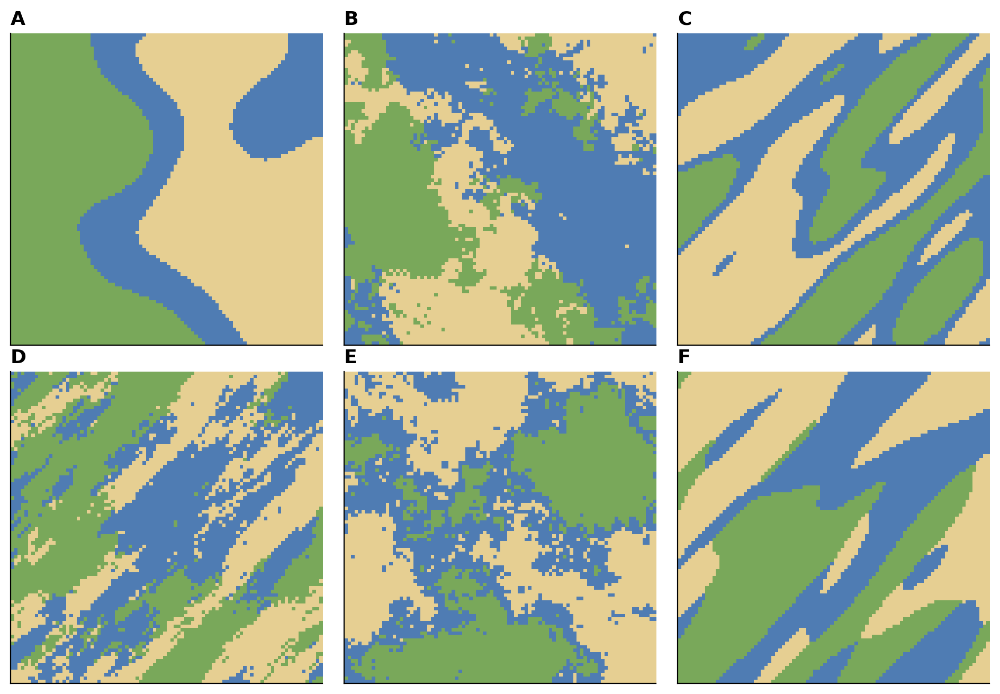
- Pour chaque image identifiée de A à F, indiquez par un \(\times\) les énoncés qui s’appliquent dans le tableau ci-dessous. (Aide : chaque colonne doit comporter deux \(\times\) au total — un au-dessus de la double barre et un en dessous.)
| Énoncé | A | B | C | D | E | F |
|---|---|---|---|---|---|---|
| L’image est obtenue par la simulation séquentielle d’indicatrices (SIS) | ||||||
| L’image est obtenue par la simulation gaussienne tronquée (TGS) | ||||||
| Le variogramme utilisé est gaussien isotrope | ||||||
| Le variogramme utilisé est sphérique isotrope | ||||||
| Le variogramme utilisé est gaussien anisotrope | ||||||
| Le variogramme utilisé est sphérique anisotrope |
- Sur quels critères visuels peut-on distinguer une réalisation SIS d’une réalisation TGS, et un variogramme gaussien d’un variogramme sphérique ?
L’association exacte dépend des images régénérées par le générateur MATLAB ; le tableau se remplit en croisant deux familles de critères (méthode et type de variogramme), chaque colonne recevant un \(\times\) pour la méthode et un \(\times\) pour le variogramme.
Critères de lecture :
- SIS vs TGS : la TGS, issue de la troncature d’un champ gaussien ordonné, n’autorise que les transitions entre faciès successifs (les contacts \(s_1\)–\(s_3\) sont interdits) et produit des frontières plus régulières et organisées. La SIS autorise toutes les transitions entre faciès et donne des contacts plus erratiques, des faciès géologiquement incompatibles pouvant apparaître côte à côte.
- Variogramme gaussien vs sphérique : un variogramme gaussien, parabolique à l’origine, engendre des structures très continues et lisses à courte distance ; un variogramme sphérique, linéaire à l’origine, produit une texture plus granuleuse et moins régulière.
- Isotrope vs anisotrope : un modèle isotrope donne des formes sans direction privilégiée, tandis qu’un modèle anisotrope étire les structures dans la direction de plus grande portée.
Exercice 4 — Échantillonneur de Gibbs en simulation tronquée
Dans le conditionnement d’une simulation gaussienne tronquée (TGS) ou plurigaussienne (PGS) aux données observées, on utilise l’échantillonneur de Gibbs.
À quoi sert l’échantillonneur de Gibbs dans ce contexte ? Décrivez succinctement l’idée de l’algorithme.
L’échantillonneur de Gibbs a tendance à converger très lentement lorsqu’il y a beaucoup de données à simuler. Quelle méthodologie peut-on utiliser pour pallier cette faiblesse ? Décrivez brièvement l’idée de cette méthode.
Dans une simulation tronquée, seules les catégories — c’est-à-dire le faciès observé \(W(\mathbf{x})\) — sont connues aux points de données, tandis que les valeurs du champ latent \(Z(\mathbf{x})\) ne sont pas directement observables. L’échantillonneur de Gibbs sert à reconstituer, à chaque point de donnée, une valeur latente \(Z(\mathbf{x}_\alpha)\) compatible à la fois avec l’intervalle de troncature imposé par le faciès observé — si \(\mathbf{x}_\alpha\) appartient au faciès \(i\), alors \(Z(\mathbf{x}_\alpha) \in (s_{i-1}, s_i]\) — et avec la structure spatiale dictée par la covariance \(C(\mathbf{h})\). L’algorithme procède point par point : à chaque itération, on met à jour une valeur latente en effectuant un krigeage simple à partir de toutes les autres valeurs déjà fixées, ce qui donne la loi gaussienne conditionnelle, puis on tire une valeur dans cette loi tronquée à l’intervalle du faciès. Le balayage est répété jusqu’à convergence : on obtient alors un champ latent corrélé selon \(C(\mathbf{h})\) et respectant les seuils.
Lorsque le nombre de données est élevé, la convergence du Gibbs devient lente, car chaque mise à jour ne tient compte que d’un voisinage et l’information se propage lentement de proche en proche. Une méthode pour pallier ce problème est l’approche multigrille (ou multi-échelle) : on commence le balayage sur une grille grossière (peu de nœuds, espacés), ce qui permet d’établir rapidement les grandes structures de continuité spatiale, puis on raffine progressivement la grille en ajoutant des nœuds intermédiaires. Les valeurs déjà stabilisées aux échelles grossières servent de conditionnement, ce qui accélère considérablement la convergence aux échelles fines.
Exercice 5 — Simulations plurigaussiennes et drapeaux
On présente plusieurs réalisations issues de simulations plurigaussiennes (PGS), chacune obtenue en combinant deux champs gaussiens latents et un plan de codage (le « drapeau ») qui associe à chaque couple de valeurs latentes un faciès. On dispose par ailleurs des drapeaux candidats.
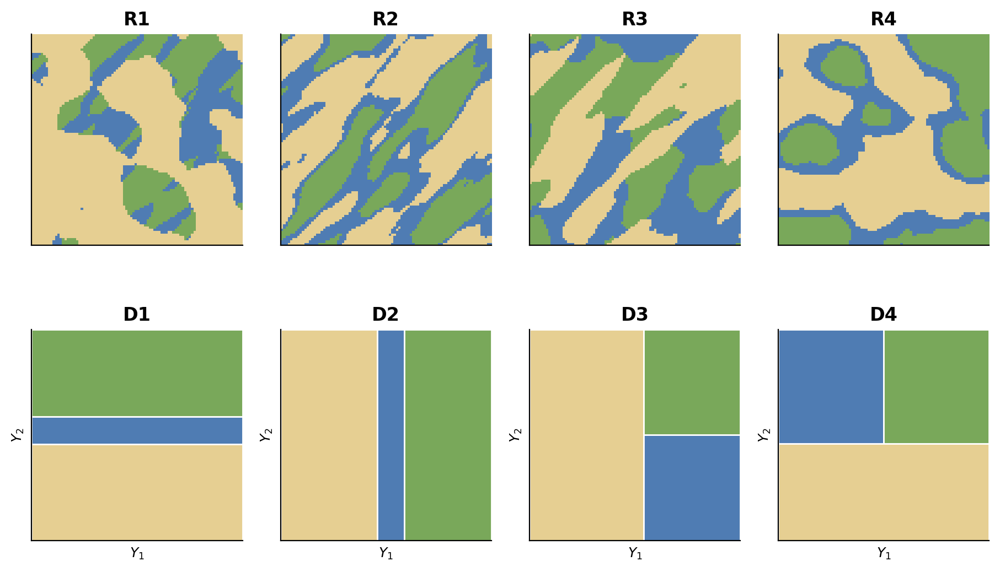
Associez chaque réalisation au drapeau correspondant.
Le variogramme utilisé est cubique pour les deux variables. Sachant qu’un des deux champs latents est isotrope et que l’autre est anisotrope avec une grande continuité dans la direction SO–NE (azimut de grande continuité \(\approx 45^\circ\)), comment cette structure spatiale se manifeste-t-elle dans les réalisations, et comment s’en sert-on pour confirmer l’association drapeau–réalisation ?
L’association exacte réalisation–drapeau dépend des figures régénérées par le générateur MATLAB. La démarche consiste, pour chaque réalisation, à repérer quels faciès sont en contact direct et lesquels ne le sont jamais : le plan de codage (drapeau) impose les transitions permises et interdites entre faciès, et seul le drapeau dont les règles de contact correspondent aux contacts observés peut être associé à la réalisation. On utilise aussi les proportions relatives des faciès, fixées par les surfaces respectives des zones du drapeau.
Le variogramme cubique, parabolique à l’origine, produit des structures très continues et lisses. Le champ latent isotrope engendre des formes sans direction privilégiée, tandis que le champ latent anisotrope étire ses structures dans la direction de plus grande portée, ici SO–NE (azimut \(\approx 45^\circ\)). Pour confirmer une association, on identifie d’abord, dans le drapeau, quel faciès est gouverné par le champ anisotrope : ce faciès apparaîtra dans la réalisation sous forme de bandes ou de plages allongées le long de l’axe SO–NE, alors que les faciès contrôlés par le champ isotrope auront une texture sans orientation. La cohérence entre la direction d’allongement observée et l’axe du champ anisotrope assigné par le drapeau lève l’ambiguïté entre drapeaux candidats de structure semblable.